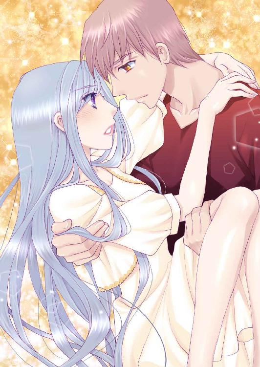
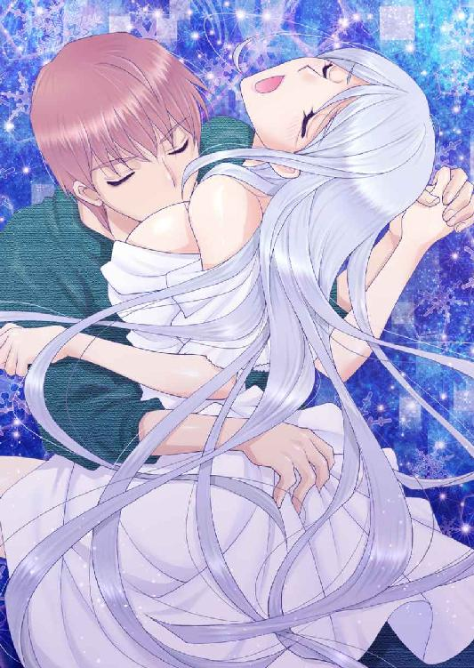

| あやかしの涙～私はあなたに恋をする～ (ディープラブ文庫) | |
| 森田りょう & 大橋薫 | |
| (2015) | |
あやかしの涙
～私はあなたに恋をする～
森田りょう
大橋薫
本作品の全部または一部を無断で複製、転載、配信、送信したり、ホームページ上に転載することを禁止します。また、本作品の内容を無断で改変、改ざん等を行うことも禁止します。
本作品購入時にご承諾いただいた規約により、有償・無償にかかわらず本作品を第三者に譲渡することはできません。
本作品を示すサムネイルなどのイメージ画像は、再ダウンロード時に予告なく変更される場合があります。
本作品は縦書きでレイアウトされています。
また、ご覧になるリーディングシステムにより、表示の差が認められることがあります。
プロローグ
深い闇の中を引き上げてくれるような感覚だった。華奢な体は簡単に押しつけることができ、組み敷くことも容易《たやす》い。
「俺、やっぱダメだわ。もう......我慢できない......」
そう言葉を零したのは神戸心《かんべこころ》、人間の男。息を吐き出しながら、美しい紗雪《さゆき》の姿を見下ろした。
「わたしを抱いたら......あなたはその血を穢《けが》すことになるわ。堕ちていくところまで堕ちて......堕ちて......堕ちて、もう二度と戻れなくなる......」
「それでもいいって言ってんの。俺......あんたのためなら死んだっていいよ。人間......やめたっていい......」
「心......くん」
唇が近づいて、温かな唇が冷たい唇に重なる。
「紗雪さん......」
心の温かな体温が伝わって、体が溶けてしまいそう。
「んっ......ァ......ああ......んっ......ァ」
くちゅくちゅと舌先が絡まり合う。冷たい口内が彼の温もりで温かくなっていく。
「紗雪さんの口の中......冷たい」
「だ......だって......わたしはっ......雪女......だから......」
「知ってる......」
言いながら、心は紗雪の下肢に手を伸ばした。そのまま、指の腹で窪みを下着の上から撫でつけると、彼女の体が飛び上がるようにびくんっと跳ね上がった。
「いつもは口数少ないのに......今日はよくしゃべるよね？ 紗雪さん......」
「そ......それはっ......」
「黙って」
耳もとで心の声が囁いた。低いその声は紗雪の体を強ばらせると同時に昂らせた。
「こ......ころくっ......んっ......」
体が溶けて消えちゃわないかと心配だった。それほどまでに、彼の手はとても熱くて、湿っていて、そして......鋭く尖っているようだった。
１、冷たさの檻
空を見上げた。美しいほどの青々とした空はいつまでも変わらない。この空は六百年間変わらずに同じで、ずっとこの世界を見守っているように思える。
「紗雪」
「あ、はい。なんでしょうか？」
久遠《くおん》に呼び出された紗雪は慌ててカウンターの奥まで駆け寄る。ここはＫＷＡＩ《かい》カフェという町中にひっそりとたたずむカフェだ。カフェには久遠と陣《じん》、紗雪の三人が働いており、オーナーは歳のせいかあまり経営にはかかわってはおらず、久遠がマスターと言っても過言ではない。巷では妖怪カフェと言われており、その詳細ははっきりしていないのだが、一般客はＫＷＡＩカフェのＫＷＡＩが妖怪の怪だと思い妖怪カフェと言っている。実際、看板にも怪という字が書かれており、一部の客が妖怪カフェと名付けたのだろう。しかし、真相は違う。妖怪がカフェを営んでいるのだ。そして、黄昏時を過ぎ、夕方になるとそこは妖怪だけのカフェになるということ......。それに気づく人間はほとんどいない。
「これ、メモに書いてある物を今すぐ買い出しに行ってきてくれないか？」
手渡されたメモを確認して、紗雪は口を開く。
「あ、はい。でも久遠様一人で大丈夫でしょうか？ まだ店内は込み合っていますし......」
「もうすぐすれば陣が来るから大丈夫だ」
「かしこまりました。いますぐに行ってきます」
腰に巻いていたギャルソンエプロンを解いて、髪を束ねていたシュシュも解く。それだけで店内はざわついて、紗雪の色気に酔いしれる客がため息を吐く。色素の薄い長い髪と透き通るような白い肌に薄紅の唇と頰。上品な言葉づかいに抱きしめたならば折れてしまいそうなほどの華奢な体。思わず見惚れてしまうほどの美貌に、男は、いつしか彼女の虜になってしまう......。
カフェを出て、近くのスーパーに辿り着いた紗雪。
「え～と、リンゴにオレンジと......レモンと......」
いまは夕方になる前。黄昏時の前だ。レモンを手にとった紗雪はふと考えた。
──今日は......来ないのかな？ 来たとしても夕方六時までには帰らなきゃいけないから......もう来ないのかもしれない。
そう思うと、胸がギュッと締めつけられたと同時に、彼の姿を思い出した。
◇◇◇
「戻りました」
カランコロンと扉を開けると、カウンターには神戸心が座っていた。振り返る視線が紗雪をじっと見据えている。一瞬、胸が高鳴った。アシンメトリーの髪はいつになく彼に似合っていて、紗雪の頰が一瞬で赤く染まった。
──好き......なのだろうか。こんな感情は初めてで、どうしたらいいかわからない。いままでずっと......気持ちを押し殺して生きてきたのだから......。
「紗雪さん、おかえりなさい」
にっこりと微笑む心の姿は紗雪の心を鷲摑《わしづか》みにする。跳ね上がる胸の鼓動を鎮めようと、紗雪は小さく息を吐き出した。
「た......だいま......です」
久遠と陣以外におかえりなんて言われたことがない紗雪は戸惑いながらも小さく呟く。
「紗雪さん、遅いっすよー。なにか考え事でもしてたんっすか？」
スーパーから帰ると、調子のいい言葉づかいの陣が店に出勤していた。少し短めの髪にやんちゃそうな八重歯のある彼はこの店のマスコットキャラクターだ。正体は猫又という妖怪であり四百年ほど生きている黒猫だ。
「あら、陣。今日は早いのね」
明るい陣に対し、クールで冷たい態度を返す。
「紗雪さんの反応、冷たいよな～」
「しょうがないでしょ。雪女なんだから」
さきほどよりもさらに冷たく、そして小さく呟いた。
「冷たくなんかないよ、陣さん」
「え？」
間を割って入ったその声に、陣と紗雪、互いに驚いて同時に声を上げ心に視線を向ける。
「紗雪さんは......冷たくなんてない。むしろ、人一倍あったかい」
にっこりと笑顔を見せる彼に、ドキドキと高鳴る心音が止まらない。
「あ、そろそろ六時前だね。店から出なくちゃ......。ごちそうさまでした」
心はそう言って、勘定を済ますと、席を立ち上がった。扉に手を伸ばすと、もう一度振り返る。
「じゃあ紗雪さん、また後で......」
久遠と陣にぺこりと頭を下げると、扉を開いて外へと向かった。赤く染まった頰を隠しながら紗雪は心が飲み干したグラスを片づける。心臓は忙しなく動いていたままだった。
心の中が彼でいっぱいに埋め尽くされてしまう。
──初めて出会ったとき、彼は客としてだった。それも、久遠様に盾突いて、あろうことか彼女を奪おうとして、ケガをした。それを介抱したのがわたし......。
それからすぐに告白された。一目ぼれだったらしいけど、わたしは雪女。丁重にお断りをした。
「紗雪さん、お疲れ様」
心は毎日、自分のバイトがない日はこうして紗雪の仕事が終わるのを待ち、自宅へと送ってくれる。
「心くん、別に......送ってくれなくても......いいのに」
「だって、夜道は特に危ないでしょ？ 女の子一人......紗雪さんは綺麗なんだから襲われたりしたら......危ないよ、ほんと」
「襲われないわ、わたしは......妖怪なんだから、雪女なんだから。なにかあれば氷漬けにします」
冷たい視線が心の中に突き刺さった気がした。そんな彼女の手をそっと握りしめる心。
「でも、紗雪さんは女の子でしょ？ 守られるほうなんです」
彼の言葉はいつも胸に突き刺さるようで、騒がしくなってなにも考えられなくなる。
──女の子......。そんなこと言われたの......初めて......。
ドキドキと高鳴る鼓動。顔が上気して、溶けそうだった。
「紗雪さん......ほっぺた......赤くなってる」
顎を持ち上げられて、心と目が合った紗雪。ゆっくりと彼の顔が近づいてきて、唇が重なった。軽く添えるだけのキス。もう、何度目かわからないほどキスをした。だけど、それだけ。キス止まり。
「好き......です。紗雪さん......」
心は小さく呟く。好き......だと何度も伝えられた。
──そのたびにわたしは......妖怪という理由で彼の告白を消してしまう。
「わたしは......妖怪だから......」
「......わかってて、言ってるんすけどね......」
キスの後、切なくはにかむ彼の笑顔を見るのが苦しい。いつまでこの苦しみを感じていなくてはいけないのだろうか......。
薄紅に染まったおのれの頰を指先でそっと撫でつけられて、紗雪はそっと目を閉じる。いままで生きてきた中で、ほんの少しだけホッとする瞬間......。
◇◇◇
ずっと好きだった女の子がいた。だけど、その子は妖怪の男を愛していて、命を懸けられるほどに守って守られて......正直、羨ましいと思った。ああいう風に愛し愛されたいと、心の底から願った。
「ミヤ」
──以前好きだった子の名前を呼ぶ。いまはまったくこれっぽっちも、好きだという気持ちはないし、そういう感情は一切ない。あれだけ好きだったという気持ちが噓のようで、不思議なくらいに......いまは友達として接している。
「心。なに？ 部活、いま終わり？」
「ああ、終わった。サッカー......最後の試合がもうすぐあるから。ナオちゃんと応援しにきてよ」
にっこりと微笑む心に頷く彼女は京野都《きょうのみやこ》、ＫＷＡＩカフェで働く大妖怪、久遠の彼女だ。ずっと都のことを好きだった心だが、久遠の出現によって儚い想いは消えた。それと同時に紗雪に目を奪われて、どんどん深みにはまっていく現状。
「じゃあ直子にも伝えておく......って、その必要はないわね」
都の言葉に心は後ろを振り返る。そこには息を切らして走ってくる佐山直子《さやまなおこ》の姿が見えた。純粋そうな可愛らしい都とは違い、綺麗で大人びた雰囲気のある直子は陣と付き合っている。陣を妖怪だと知らぬまま付き合っていたらしいが、いまはその事実も受け止めて仲良くやっているようだ。
「都！ 心！ ねえねえ、これからカフェに行かない？」
艶のある髪をなびかせて、直子は心と都の前に立った。
「今日は俺、パス。バイトあるからさ」
「心、バイトもやって部活もやって......大変じゃない？」
「うん。だからバイトももうすぐ辞めるつもり。そろそろ就活にも本腰入れないと......。俺は男だからさ、いつか好きな人を養えるくらいの仕事を見つけなきゃいけないだろうし......」
「へ～、えらいよね～心。ちゃらちゃらしているかと思えば」
「ちょっ、ナオちゃん！ なに、その言い方」
心の言葉に都も直子も静かに頷きながら、冗談を投げかけ合う。そんな仲良しの三人。
「ああ、でも夜はカフェに行くよ。紗雪さん、今日はラストまでのシフトだから家まで送っていくんだ」
「送り迎えしてあげるなんて、優しいね～心は」
「早くうまくいくといいね」
「あんまり焦っちゃだめだからね！ 女の子は慎重なの」
──焦りか。焦りはある。きっと......次にキスをすれば押し倒したくなる、そんなところまできてしまっている。だけどやっぱり、大事にしたい。それは思う。ミヤと久遠さん、ナオちゃんと陣さんみたいに、じっくり、ゆっくりと絆を深めていきたい。だけど......彼女は俺を見ていない。そんな風に思う。
「ミヤ、ナオちゃん。ありがとうな」
ふっと笑みを見せる心の笑顔が、都にはとても切なく見えた。
◇◇◇
瞳を閉じると、遥か昔の記憶が途切れ途切れに脳裏を過ぎる。それは、くすんでいて、もやがかかっているようで、よく思い出してみれば、ザーッと一気にそのもやが開けていくのだ。六百年前の記憶はあやふやだが、確かにそこには思い出がたくさんあった。
「あっ......」
包丁で軽く指を切ってしまい、思わず小さく声が漏れた。じわりと滲む血。
──血の色は同じ赤なのに......わたしのこの血は化け物の血......。
ほんの少し集中すれば、これくらいの傷は治るのだが、そこは敢《あ》えて人間という生き物にこだわる久遠の教えにより、自然の治癒力に任せる。紗雪は切なげな表情でばんそうこうを手に取ると、その細い指に巻きつけた。
「オレが治してやろうか？」
カウンター席に座る男が紗雪に声をかけてきた。
「風真《ふうま》......」
切れ長のぎらついた獣の飢えたような瞳に短い髪。浅黒い肌にはたくさんのタトゥーが彫られていた。威圧感のある風貌に、いつも唇の端を吊り上げている。誰も近づかないのは明白だ。
「鎌鼬《かまいたち》の薬で治してやるよ」
言いながら、風真は胸ポケットに潜ませていた小さな小瓶を手に取った。
「鎌鼬は三位一体。最初の一匹目が人間を転ばせ、そして二匹目が人の皮膚を斬り裂く。三匹目がその傷口に傷薬を塗る。あなたは斬る専門でしょ？ 何故、風真がその薬を持っているの？」
唇に銀色の輪っかのピアスが光る。風真はその唇を吊り上げた。
「薬担当だった弟は人間に殺されてもういない。だからオレがこの薬を引き継いだ。人を転ばせる兄貴も人間の女に恋をして自らの心臓を潰して、転生した」
「そう......だったのね。でも、薬はいらないわ。それなら余計に使えない......。大事な弟さんの形見なんでしょ？」
そう言った紗雪に向かって、風真はカウンター席から体を乗り上げた。風真の手が紗雪の手を握りしめる。驚いて目を見開く紗雪は風真に視線を向けた。
「お前にならくれてやってもいい。お前をモノにするのは俺だ。昔からずっとそう言ってるだろう？」
そう、もう何百年言い寄られているだろうか。いつしかふとした瞬間に現れ、求婚を申し込まれ、断れば再び風のようにさっといなくなる。繰り返しだ。そして、今度は七十年ぶりに姿を見せた風真。
「風真......離してください。仕事中です」
軽く手を握られただけでもすごい力。引っ張ってみても、びくともしない。
「お前の体から......ときおり人の匂いが漂ってくる」
風真の言葉に紗雪は一瞬体を強ばらせた。
「き......気のせいでしょ？」
「気のせいじゃない。こうして、お前の肌を舐めるだけで......わかる」
ぺろりと長い舌先を出して、紗雪の白い肌にその舌を這わせる。生温かいねっとりとした舌が、ゆっくりと腕を上っていく。
「......っ......ふう......まっ......」
ぞくぞくっと寒気がした。じっと見上げる鋭い瞳に捕らわれてしまう。
──この目は危ない。
本能的にそう感じた紗雪。
「紗雪......オレの女になれ」
「え？」
金縛りにあったかのように、体が固まって動かない。ごくりと息を吞み込んだそのとき、風真の手がバチッという音と共に跳ね上がった。
「風真、それ以上紗雪を困らせたらお前を出禁にするぞ」
「久遠様っ？」
黒曜石と同じ真っ黒な瞳が風真を射抜く。千年以上生きている鵺《ぬえ》という大妖怪の久遠が睨むだけで、たとえどんな悪い妖怪でも体を震え上がらせて恐れる。それほどまでに恐ろしい妖怪なのだ。
「久遠......様。客に向かって、ひどい扱いだなあ？」
風真は焼け焦げた指をおのれの舌で舐め上げ、言葉を紡いだ。
「客といえども、家族を守ることのほうが大事に決まっているだろ？」
「家族......ですか？」
呆れたような笑いの風真。
「ああ。紗雪はガキの頃から俺が育てたようなものだ。いわば俺の娘だ。これ以上、ちょっかい出すならば俺が相手になるけど？」
警告ともとらえられる言葉を風真に投げかけた久遠。風真も負けじと引き下がらない。
「あんたは大妖怪だった。だがそれも過去の話。いまはオレよりも......妖力劣っていませんか？ 人に紛れて生きていくというのは、妖力も低下するということ。たまには人を狩らないと......力も出ないっすよ」
「人を殺してはいけないと妖怪界で決めたはずだ。まさかお前......人を殺しているんじゃないだろうな？」
「殺してはいませんよ。......いたぶっているだけです。正当防衛ですよ。こんな格好だから向こうからケンカを売ってくるんです。オレが手を出しているんじゃない。それじゃあオレはこれで」
伝票を久遠に手渡してにたりと笑う風真。
「紗雪、さっき言ったこと、オレは本気だ。また......来る」
風真の言葉によって紗雪の額から汗が滲み始めた。見送る背中が自信に満ち溢れているほどに、風真は体格もよく、きっと妖力も半端ないほどにため込んでいるのだろう。
──襲われたら、勝ち目はあるのか。
そう考えていた紗雪の肩を、ポンと優しく叩く久遠。
「大丈夫。俺も陣もいるから」
言葉をかけられただけで、安堵感でいっぱいになる。久遠がいれば......そういう気持ちになる。
「久遠様......ありがとうございます」
「まあ、しばらくはなるべく一人にならないほうがいいな。それに夜は妖怪も活発化する。明日から紗雪は昼間のシフトに変更な」
「そ、そんな迷惑かけられません！ 久遠様や陣が......大変になってしまいます」
「陣が妖力を失って猫に戻っていたときも、みんなで助け合っただろ？ お前はなにも心配しなくていい。あいつも......下手に手は出してこないだろうから」
「様子見......ですか？ 風真があきらめるまで」
紗雪の言葉に久遠は静かに頷いた。
「いままでもそうだっただろう？ あいつが紗雪の元に以前現れたのは戦時中のときだった」
「ですが......」
「お前は雪女のくせに、いまはまったく男を作らない主義だ。それがわかれば......あいつも諦めるだろう」
「そう......ですね」
一瞬、心の顔が脳裏を過ぎった。そう、男を作らないと決めていた。人間の男を作ってしまえば、掟によって山へ氷漬けにして持ち帰らなければならないから。だから、男はいらないと決めていたけれども......。
──彼が......広がっていく。わたしの中で、心という一人の人間の存在が日増しに大きく膨らんでいく......。
久遠と二人で店の中を片づけた後、カフェを出ると、もう真夜中を疾《と》うに過ぎていた。
「紗雪、今日はああいうことがあったからお前を家まで送ろうと思ったんだが......どうする？」
「どうするって......なにがです？ 久遠様......」
久遠の視線の先を辿ってみると、そこには心が立っていた。
「心......くん......」
心がいたからどうすると聞いてきたのだろうと紗雪は思った。どちらに送ってほしい？ ということだろう。
「久遠さん、紗雪さん、お疲れ様っす」
心は軽く二人に頭を下げる。
「おお、お疲れ。なに？ ずっと待ってたの？」
「はい。紗雪さんを送ろうと思って......」
ふっと笑みを見せる心の姿に、紗雪の胸が締めつけられる。ちらりと久遠の姿を確認しながら、気持ちを悟られないようにすることに必死になってしまう。
「どうする？ 紗雪。三人で帰るか？」
「あああ、あのっ......久遠様も都様が家で待ってらっしゃるでしょう？ わたしは大丈夫なので！ どうぞ、都様のもとへ早く行ってあげてください......」
──こんなにも慌てたことなんてない。いまの時代の言葉ではテンパってしまったと言うのだろうか。
これ以上、三人でいると気持ちを悟られてしまう。そう思った紗雪は早く久遠に帰るよう促した。心臓が激しく動く。久遠に気づかれているのだろうかと心配になった。
「いや、でも、あんなことがあったからしばらくは......」
と、言いかけたところで、周りの空気が豹変した。ぴしぴしという音と共に空気が凍っていくのがわかる。紗雪の気持ちが揺れ動いていることは明白だった。というより、空気が凍っていく。紗雪が無意識の内に行っていることだった。
「久遠様、さあ、早く、都様のもとへ」
「わ......わかったから！ 紗雪、ほらっ......落ち着いて」
紗雪の仕業だとわかり、久遠はたじろいながらも頷いた。
「じゃあ、心。悪いけど紗雪のことを頼むな。紗雪、なにかあったらすぐに俺を呼べ。わかったな？」
「わかりました。久遠様、お疲れ様でした」
「ああ、お疲れ。じゃあな」
家で待つ都の気を感じ取った久遠は、一瞬にしてその場から消えた。しんと静まりかえる中、心が息を吐き出し感心していた。
「いつ見ても瞬間移動ってすごいっすね。妖怪ってみんなできるんですか？ 瞬間移動」
「瞬間移動っていうより......相手の気を感じて飛ぶのよ。だからとても集中しなくちゃいけないし、あんなに簡単に飛べるのは久遠様だけだと思う」
「へ～、やっぱり久遠さんってすごい妖怪なんだ」
「すごいもなにも、本当だったらわたしなんかがこうしてお傍にいることさえも許されないほどの御方なの......」
そう真剣に話していると、ふいに彼の顔が紗雪の顔を覗き込んでいた。
「ひゃあっ」
一瞬にして言葉が詰まる。変な声を出してしまい、紗雪は慌てて口を噤んだ。
「あんなことって......なんですか？」
言葉にはいろいろなものが含まれていると言うけれど、直球で来られては逃げられない。
「え？ あ......あの......」
「さっき、久遠さんが言ってたこと。あんなことがあったからしばらくはって......どういうことですか？」
「......っ......それはっ......」
「なにか......あったの？」
背伸びをすればあっさりと唇が近づくほどの距離。そんな距離で顔を近づけられては、頰が染まるのもしょうがない。目深に被った帽子。シャツから覗く逞しい腕。太陽の陽に当たり、少し色黒になっていて、ラフな格好の彼に胸を昂らせる。
「な......なにもないわ。本当になにも......」
「そう。なら......いいですけど......」
言いながら、心は紗雪の体をそっと抱きしめた。
「なにかあったら......いつでも俺を呼んでください。久遠さんみたいに飛べないけど......飛んでいきます」
にっこりと微笑む彼の姿に心が惹かれる。もう、噓はつけないかもしれない。どきんどきんと鼓動がリズムを刻んでいく。
「紗雪さんの体......冷たい。熱くなるときって......あるんですか？ 火照ったみたいに......」
彼の唇が自分の髪にそっと触れるだけで、体の奥底から湧き上がる熱い思い。二人だけの世界ってこういうときのことを言うのだろうか。紡がれる言葉が体の中に染み込んでいく。
「あり......ます」
「......どんなときですか？」
「......いま......かもしれません......」
頰を真っ赤にさせて、小さく呟いた。彼の胸にその赤く染まった顔を見せまいと、埋める。
「ほんとだ。なんかちょっと......熱くなってきた。俺も......俺の体も火照ってますよ？」
「......心く......ん......」
唇が寄せられた。軽く重ねるだけのキスは何度目か。
「紗雪......さん......好き......」
心の想いを受け止めてあげたいのに、受け止められない。
──それはわたしが......冷酷な雪女だから......。名前と同じ美しい心を持つ人間の彼を穢《けが》すわけにはいかない。
──どれだけの人間の男を殺してきたか。彼に知られたらと思うと怖くて言えない。この体で、どれだけの男を誘惑してきたか......人間も妖怪も見境なく......ただ本能のまま貪り続け、精気を奪い続けた。
「......心くん、わたし......」
「へ～、今度はこいつを食い殺す気なのか？」
背後からの声に、二人は驚きながら振り返った。
「ふ......風真っ？」
──なんだ？ こいつは......妖怪？
びりびりと痺れるような威圧感が心を襲う。人ではないことはすぐにわかった。心はごくりと息を吞み込んだが、すぐさま強く風真を見据えた。
「紗雪、オレを断ったのはこいつがいたからか？」
「断ったって......？」
心が風真の言葉に食いついた。
「オレの女になれって言ったの」
風真は唇を吊り上げてそう言った。
「お前......人間......だよな？」
ぎくりと心の体が跳ね上がった。人間だと問いかけるということは、相手は人間ではないということだ。
──なので、こいつは妖怪......。
ぐっと息を吞み込んだ心。紗雪を庇うように、少しおのれの体を盾にする。
「この女の正体、知ってるのか？」
「風真！ それ以上なにも話さないで」
「お前は黙ってろっ！」
鋭い瞳が紗雪を射抜く。風真の荒げた声で、周りの木々がざわつくほど、びりびりと辺りが緊張感に覆われた。
「......知ってますよ。それがなんですか？」
「は？ お前、こいつが雪女だと知ってて紗雪に近づいているのか？」
「俺は、紗雪さんのことが好きです」
真剣な眼差しの心に、風真はフッと鼻で笑う。
「お前さ、雪女がどういう妖怪か知っているのか？ 冷酷で残忍な雪女......男を氷漬けにして精気をすべて奪い、殺す。こいつがいままでどれだけの男を誘惑して殺してきたか、知っているのか？」
「......過去のことは知らない。でも、少なくともいまの紗雪さんは......俺が知っている紗雪さんはとても優しい人だ」
心の言葉に腕の中にいた紗雪は目を見開いた。これ以上の言葉はない。嬉しい気持ちで溢れてしまう。
「優しい人って......優しい妖怪の間違いだろ。バカも大概にしろよ？ お前」
ずずずっと、風真の腕から鋭い鎌が皮膚を破って現れた。
「人間の男が雪女と結ばれると思っているのか？ 紗雪と釣り合うのは......妖怪のみ。このオレだけだ」
三日月形の鎌が肘の下から突き出て、風真はその腕を構えた。いままで見たこともないその恐ろしい光景に、心の体は固まったまま動けない。
「風真！」
慌てて紗雪は心の前に立ちはだかった。彼を庇うように、自ら盾となり、風真をきつく睨みつける。
「やめなさい。人を傷つけると、妖怪界の掟に反します」
冷たい冷気が漂い、辺りを凍らしていく紗雪の力。風真の頰はゆっくりと凍り、パキパキと音を立て、頰から鼻、そして目と、しだいに範囲を拡げていった。
「風真、お願いです。やめて......。鎌を体の中にしまって」
瞳の色が青く変わる。妖力もどんどんと膨らみ、彼を守りたい一心の紗雪は集中して風真に立ちはだかった。
「やーめた」
風真の声に紗雪の体が跳ね上がる。その間にも風真は鎌を腕にしまい込んでいた。
「おい、人間。紗雪はオレのものだ。オレ様がいただくからな。そこをよーく覚えておけ」
そう言った瞬間、風が勢いよくぶわっと舞いあがった。それと同時に風真の姿も見えなくなった。
静まり返るその場所は不気味なほどに人気《ひとけ》がほとんどなかった。いま、なにが起こったのかもわからずに、ときが流れゆく。
「心くん、ごめんなさい」
しゅんとした紗雪は心に頭を下げた。
「なんで紗雪さんが謝るの？」
「わたしのせいで......巻き込んでしまって......」
──どうやって謝ればいいのかわからない。ひたすら謝るべきなのだろうか。
「紗雪さんのせいじゃないよ」
その言葉に目を見開く紗雪。そして、心は彼女の手をギュッと握りしめた。その手の温もりに、紗雪の胸は締めつけられていく。
「紗雪さんのせいじゃない。誰のせいでもない......。気にしないでください」
その笑顔で紗雪の心はしだいに落ち着きを取り戻し、救われていった。
「送って......いきます」
さらに手を強く握りしめられる。
「俺じゃ......役に立たないかもですけど......」
「そんな......」
──そんなことはない。そう言いたかったけれど、妖怪と人間の力の差は歴然だ。彼よりわたしのほうが強い。
ただ、手を握り返すことしかできなかった。彼の心の意識が体に入ってくる。自宅まで、会話は一切なかった。
◇◇◇
紗雪の自宅はＫＷＡＩカフェから歩いて十五分ほどの距離。比較的近くにそのアパートはあった。とても女の子の一人暮らしのようなアパートではない。むしろ、男の一人暮らしのような築数年は経っている建物だ。アパート前までくると、いつも心はその場で紗雪を見送るわけなのだが......今日は心の足が止まり、ギュッと手を握りしめられたままだった。
「あの、心......くん？ 手......そろそろ離してくれないと......」
紗雪の言葉を聞くと、さらにその手は強く握りしめられる。驚いて顔を上げ、心の姿をじっと見据える紗雪。
「心......くん？」
「家の中まで......」
伏せていた目が、ゆっくりと上がり、紗雪の視線にぶつかる。
「家の中まで、送らせてください」
艶のある熱を帯びた瞳に、逆らえなかった。
「家の中までって......ねえ......どういう......」
心に急かされながらも鍵を開けた。扉を開いた瞬間、彼の腕に包まれる。後ろから強く抱きしめられて、紗雪の体が跳ね上がった。
「こ......心くんっ......？」
「こういう......ことです」
玄関先から雪崩《なだれ》るように、紗雪を床に押し倒した心。真っ暗な部屋に、月の灯りが射しこんで、うっすらと彼の瞳が見えた。
──向こうも同じようにわたしの顔がうっすらと見えているのかもしれない。真っ赤になったわたしの顔を......。
「もう......これ以上は限界。紗雪さん......」
唇が重なった。何度も啄《ついば》むように角度を変えて、唇を落としていく心。
「んっ......ふっ......ァ......」
軽い口づけでは物足りない。ぐっと紗雪の顎を持ち、心の視線が真っ直ぐに突き刺さった。
「あいつが紗雪さんを手に入れる前に俺が......手に入れたい」
唇をこじ開けようとする心に対して、紗雪はさっと顔を背けてしまった。
「だ......だめよ！ これ以上は本当に！ ......わ......わたしは......妖怪なの。雪女なの......」
「知ってる......。知ってるよ、紗雪さん」
「これ以上わたしと関係を持ってしまったなら、心くんは......もう......こっちに戻れなくなる」
「それでも......かまわない」
艶のある瞳で見つめられた。どくんどくんと心音が高鳴る。互いの鼓動が、一つに重なった。
「......っんっ......ァ......あ」
くちゅくちゅとこじ開けられた唇。口内をくまなく探るように、心は紗雪の中を搔き混ぜていく。
「ま......待ってっ......心くっ......んんっ......」
「待てないよ。ずっと......待ち続けていたんだ」
固く閉じられた足に手を滑り込ませながら、心はもう片方の手で紗雪の胸を揉みしだく。
「......はァっ......ァ......だめっ......ここ......ろく......んっ......」
かぶりを振りながら、紗雪は彼の体を押しのけようとする。だが、そんな紗雪の手を手に取ると、その細い指先にそっと舌を這わした。ぴちゃぴちゃと、水音を奏でながら、悩ましげに紗雪の指を舐め上げる。ぞくりと背筋に電気が走り、紗雪は体を固まらせた。
「心......くん......」
「嫌なら俺を氷漬けにしていいよ」
低い声が響く。だけど。摑まれた手首はとても熱い。
「そんなの、できるわけっ......ないっ......」
「雪女は人の男を氷漬けにして山へ持ち帰る。そう本で読んだことがあるけど......紗雪さんと一生一緒にいられるなら、俺はそうしてほしい」
「な......なに言ってっ......」
「ミヤだってナオちゃんだって......みんな覚悟を決めて付き合っている。俺にだって......覚悟はある。一生......俺の命が尽きるまで......紗雪さんの傍にいたいって......思っている」
そんな甘い言葉を囁かれては、気持ちが揺らいでしまう。
「だから......紗雪さん。俺に......心を開いて......」
両手で頰を包まれて、彼の額が自分の額に擦りつけられた。願うようにしっかりと目を閉じて、祈りを乞う。そんな彼を見つめると、抱きしめたい衝動に駆られる。
──こんなにも大事にしてくれたのは初めて。だから余計に、彼を愛おしく思う。
「心なんてとっくに......開いているよ」
「え？」
唇が寄せられた。紗雪のほうからキスをせがまれた心は驚いて目を見開いたまま。
「紗雪......さん......？」
艶のある吐息が溢れ、心の鼻先にそれはかかった。頰が染まり、鼓動が激しくなる。まさかの紗雪に体をギュッと抱きしめ返されて、どうしたものか、今日は強引に行くと決めていた心は思わず戸惑ってしまった。
「さ......紗雪さん」
抱きついてはくるのに、黙ったままの紗雪。そこからどうしたらいいか、紗雪自身もわからないようだ。心は唇を強く閉じると、彼女の体を抱き上げた。膝の裏と背中に手を回して持ち上げ移動する。
「こ......ここ......ろくんっ？」
「ベッド......どこですか？ 教えて......ください」
耳もとを濡らす言葉が甘く切なく響く。ふと、視線を合わせると、心の顔も真っ赤に染まっていた。
ベッドに押し倒すと、ゆっくり彼女の衣服を剝ぎ取った。心はおのれの衣服を勢いよく脱ぎ、そのまま紗雪に覆い被さる。ふくよかな胸、月明かりに照らされた白い柔肌、紗雪の裸体は心の想像を超えていた。ごくりと生唾を吞みこむ。うっとりと見惚れていた心は、ただじっと黙ったまま彼女の姿を見据えていた。
熱い視線が紗雪の体をさらに昂らせる。こんなにも欲しいと思ったのは、初めてなのかもしれない。
互いに唇を食む。貪るように何度も舌を絡み合わせた。
「んっ......ァ......ああっ......ふわっ......」
くちゅくちゅと絡まる舌先が口内からようやく外気に触れた。そのまま心は軽く唇をなぞっていく。そして、ゆっくりと紗雪の首筋に舌を這わせた。
「ひゃあっ......」
びくんと体が跳ね上がり、ぴくぴくと震えている。
「首筋......弱い？」

こくりと頷く紗雪。
「じゃあ......ここは？」
太腿を優しく撫でつけながら、膝を押しのけて股の間に手を滑り込ませた。
「ァ......」
心はそのまま茂みを搔き分けて、秘部に指を這わした。互いに顔を赤くして見つめ合う。
「とろとろ......」
言いながら、今度は乳房の尖端を爪先で摘んだ。
「ひっ......」
同時に、もう片方の手はしっかりと割れ目を撫でつけていた。
「......っ......やあっ......」
動くたびにじわりと蜜が溢れ、心の喉もとをごくりと鳴らす。
「男を誘惑してきたって......百人くらい？」
「んっ......わかんなっ......い。もっと......いるか......も......っ......」
「過去のことだから考えるのはやめようって思うけど......悔しいなあ」
「え？」
くちゅりと心の指先は紗雪の花弁を開き、蜜壷の中に埋めていく。
「ひっ......ァ......ああ......はあっ......んっ」
「ここに......いろんな男が触れたかと思うと......すげぇ悔しい......」
「ここ......ろ......くん......」
紗雪は震える手で心の指先に触れた。自分の中に入る指の境目をそっとなぞっていく。
「ここ......には誰も触れていないし......誰も入って......いない」
「え？ どういうこと......？」
「精力を......奪うだけ。体全体から......気を......奪うの......。ただ......それだけ......」
「そ......それって......え？ ここは......誰にも触られてないって......こと？」
「んっ......そう。たまに......妖怪も人の男もここに触れようとする者がいたけれど......どうしてここに触れたいのか、最初は意味がわからなくて......」
「いまだと......意味は......わかる？」
ぐちゅりと心はさらに奥を搔き混ぜる。甘い泉が湧き上がるそこを何度も責めたてた。
「ああっ......ァああ、いま......はっ......意味っ......わかっ......る......」
途端、紗雪の目が見開く。それと同時に体がびくっと跳ね上がった。
「あっ......あっ......やだっ、心くんっ......そんなとこっ......舐めちゃっ......やあっ......」
ねっとりとした舌先は、紗雪の蜜壷の上をそっと舐め上げていた。
「紗雪さんの中、ギュッと俺の指を締めつけている」
「だ......だって......」
「気持ちいい？ 紗雪さんの気持ちいいところ......俺に教えてほしい」
強く視線をぶつけられた。再び心は紗雪の花弁に顔を埋める。舌先でちろちろと赤く膨れあがった果実の実を弾いて、それからすぐに唇で覆う。
「はあっ......ァんんっ......」
背中が仰け反るほどに、紗雪は体すべてで反応した。舐めるたびに蜜壷がギュッと狭まり、心の指を締めつける。吸い上げるたびに子宮の奥のほうからじわりと蜜が溢れてくる。身悶えしながらも視線を逸らさない彼女の姿に、心の胸は昂っていくばかり。
──妖怪というのに、ほとんど人間と変わらない。見た目も、触れた感触も......この蜜がたくさん溢れる中も......。
奥底にある紗雪のいい部分を探す心。中のある部分を指の腹で撫でつけてやると紗雪の声のトーンが少し変わった。
「ああっ......やっ......そこっ......だめ」
「ここ......ですか？」
ぐちゅりとそこばかりを責める。指先がふやけるまで、ズブズブと出し入れを繰り返す。
「やああっ......ァァァ」
「ここ......ですね」
にっこりと笑みを見せて、心は紗雪の奥底をぐりっと指で捩じ込ませた。
「......っ......ァァァ」
声にならない声が響く。
──なにこれ。体がふわっとなって、お腹が熱くなって......わたしがわたしでなくなってしまう。怖い......こんなこと......初めて......。
「......心......くん......怖い......。わたしの体......おかしい......」
「おかしくないですよ。自然なことです」
言いながら、さらに指を捩じ込んでぐちゃぐちゃに搔き混ぜる。高い悲鳴が聞こえた。
「やだっ......やだっ......そんなに搔き混ぜちゃっ......だめぇ！」
真っ赤に熟れあがった突起を強く吸い上げると、紗雪の体がびくびくと小刻みに痙攣を繰り返した。腰が自然にがくがくと震えだす。絶えず快感の波が押し寄せた。
「......ああっ......ァ......はあっ......」
──瞬間、なにが起こったのかわからなくなった。天にも昇るそんな気分になって......。
驚いて、ひくひくと引きつるように体が動く。初めての果てを見て、紗雪はただ呆然としていた。
「大丈夫ですか？ 紗雪さん」
「心......くん......？ わたし......」
呟く紗雪の頭をそっと優しく撫でつける心。顔を彼女の視線へと合わし、キスをする。
「軽く......イッちゃいましたね」
イくということがどういうことか、初めてわかった。羞恥でいっぱいになり、覗き込んだ心の顔から逃れるように、紗雪はおのれの腕で自身の顔を覆う。腕の隙間から覗く顔は真っ赤になっていた。
「わかりましたか？ 紗雪さんの体......俺の指や舌で気持ち良くなったってこと......」
つつつ......と、乳房の下からお腹にかけてなぞっていく心の指先に、再び紗雪の体が跳ね上がる。触れられた指先が熱くなっていくことにも気づく。
「続き......しちゃっていいですか？」
頷くことさえも恥ずかしくて、そっと紗雪は瞳を閉じた。返事なのだと確信した心はゆっくりとおのれの猛《たけ》った雄を取り出して紗雪の蜜壷にあてがう。
「ほんとにいい？」
最後にもう一度、紗雪に尋ねる。そのまま早く挿れてもいいのに......と紗雪は思った。気をつかってくれていることはわかっていた。
──いままでずっとキスだけで我慢してくれていた。本当に心くんは優しい。わたしにはもったいないくらいの人......。それでも、彼のすべてが手に入るのならば......。
「お......願い......します」
震える声が心の鼓膜に響いた。唇も微かに震えているのがわかる。
──冷たい体を熱くさせたい。何度そう思っただろうか......。
心はそう考えながら、紗雪の唇を奪った。そして、ぐっと腰を埋め込んでいく。
「んっ......んっ！」
みしみしという音が響き、軋んでいくようだ。体が真っ二つに割られるような痛みが紗雪を襲う。
「......っ......あ......ああ」
──痛い。こじ開けられ、彼が奥に進むたびに激痛が下肢いっぱいに広がっていく。
「紗雪さん......大丈夫っ？」
ゆっくりと腰を落としていく心。決して、おのれの欲望を捩じ込まない。ずっと、気にかけてくれて、優しい言葉を囁いてくれる。
──名前の通り、優しい人。あなたのためなら......こんな痛みなど耐えられる。
「大丈夫。もっと......動いてくれてもいい」
「え？ でも......紗雪さん、初めてなんじゃ......」
戸惑いを見せながらも、頰を染める心。そんな彼の体を抱きしめ、紗雪は背中に手を回した。
「早く......奥まで......きて」
紗雪の頰が心の胸にすり寄せられる。それだけで、昂る思い。もう理性など吹き飛んでしまった。
「紗雪さん！」
足を持ち上げながらグッと腰を沈め、律動を繰り返す。
「はあっ......ァ......ああ」
激しく打ちつけると、紗雪のふくよかな胸がたぷたぷと揺れた。その乳房の尖端を唇で覆い、ジュッと勢いよく吸い上げた心。
「ひゃあっ......ァ......ァ......」
体が震える。どちらの体かわからないほどに、密着している二人の体が揺さぶられ、震えていた。
「つーか、俺......紗雪さんの処女......頂いちゃってんだ。やべぇ......すごく嬉しいんだけど......」
「んっ......ァ......あ、あぁっ......心くんっ......」
足を持ち上げて、心は深くゆっくりと奥底を突き刺す。
「やああっ......心くっ......ん、なんか......慣れて......るっ......？」
すごく上手い彼のテクニックに翻弄されながらも口走った言葉に、心の体がぴたりと止まった。
「俺も......初めてなんだけど......」
その言葉に紗雪は驚いて目を丸くさせた。上半身を少し持ち上げて、心の顔を見据える。
「え？ でも心くん......すごくモテるって......都様から聞いて......」
「ん。それとこれとは別。本気にならないと俺は......抱きたくないというか......男なのに女々しいというか......初めてにこだわってしまって......おかしいよな」
はははっと笑みを零す心の体をギュッと抱きしめ返す紗雪。嬉しすぎて、涙が零れそうになった。
「おかしく......ない。わたし......嬉しい」
せいいっぱいの言葉。これ以上、甘い言葉なんて語れない。甘い香りが心の鼻腔《びこう》をくすぐった。
「俺のことなんて......興味ないと思ってた。一方的に俺が紗雪さんのことが好きで、紗雪さんも俺に流されて、断りきれないんだって思っていたんだ」
だから......と言葉を付け加えた心。そっと両頰を両手で包まれて、額を重ねてきた。
「俺も......嬉しい」
ふっと笑みを見せた。心の笑顔がすっと紗雪の中に入り込んでいくようだ。心はぐっと腰を打ちつけた。何度も穿《うが》たれ続け、激しい愛撫も同時に繰り返された。
「紗雪さん......紗雪さんっ......」
「んっ......ァ......ああ、心くっ......んっ......ああっ......」
紗雪の中が収縮していくのがわかる。感じてくれているのがわかる。彼女の中は蕩けるほどに熱く、おのれのすべてを包んでくれていた。愛しさがこみあげてきて、深い一突きを与えた。同時に彼女は体をくねらせるように悶え、心の背中に爪を立てる。
「紗雪さん......好きです......」
痛みなのか、嬉しさなのかわからない。紗雪の瞳には真珠のような美しい涙が一粒零れていた。
２、守る意味
まだ、昨日の余韻が残っているようだった。紗雪はウエイトレスの制服に身を包むと、気合をいれるために頰を自分の手でひっぱたく。
──だめ、顔がにやけてしまう。嬉しさや幸せな気分が滲み出て、体から溢れ止まらない。
「......紗雪さん......どうしたんすか？」
いつもはクールな紗雪の突然の行動に陣は驚き目を丸くさせていた。
「ううん。なんでもない。気合を入れただけ。ほら、今日は久遠様がいなくてわたしと陣の二人きりでしょ？」
陣に見られてしまい、慌てて理由をつける紗雪。
「ああ、今日はオーナーのところに行って収支報告する日でしたね。ランチには帰ってくるかと思うけど」
「陣もごめんね。今日は夜までずっとシフト入ってるんでしょ？ わたしが夕方上がりになってしまったから......」
「あー、風真のことでしょ？ 紗雪さん狙いだと聞いていたけど......久遠さんが警戒するなんてよっぽどのこと」
開店前の準備中、二人で雑談を繰り返す。
「昔からふらっと俺たちの前に現れては紗雪さんのこと口説いてたし。子どもながら、こいつ、ヤバイなって感じていたんだ。まあ、だいぶ人間世界に慣れたのか、いまは昔のようなヤバイ感じはあまりしていないとは思うけど......大丈夫？ 紗雪さん。顔色が悪い......というか赤い......」
「ええっ？ そ......そんなことないわ。いたって普通よ」
心と体を重ね合わせたことを思い出して、顔を赤くしていたなんて......陣には知られたくない。
「なんかあったの？」
きょとんと首を傾げる陣に対し、拭き終わったグラスを渡す。
「陣、これ片づけておいて。早くしないとお客さん来ちゃう」
──冷静さを取り戻さなければ。陣の言うことは無視無視。
「え～？ まだ来ないっすよ。今日は久遠さんいないからって常連さんには伝えてあるし......」
カランコロンと扉が開き、陣と紗雪は互いに顔を見合わせた。
「ほら、言ってる傍から......」
そう目を伏せて、お冷の用意をする紗雪。
「こんにちは」
「おー、心。今日はやけに早いな」
聞きなれた声と陣のその言葉に顔を上げた瞬間、驚いてグラスを落としてしまった。
「ひゃああっ！ ご、ごめんなさい」
「もう、紗雪さんなにしてるんですか？ 俺がやりますから置いておいてください。紗雪さんは......心の相手でも」
床に散らばったガラスの破片を拾うことさえ、震える手。だって、目の前に心がいるから......動揺してうまく表情を作れない。真っ赤になってしまう。
「紗雪さん、おはようございます。大丈夫......ですか？」
「こ......心くん......」
昨日の今日、正確には体を重ねてから数時間も経っていない。
「ど......どうして......大学は？」
「ああ、いまから行きます。さっき言い忘れたことがあって......」
「さっき？」
心の言葉に陣がぴくりと反応する。
「さっき、会ってたんですか？ 紗雪さんと心」
「な......なんでもないの！ 陣、悪いけどグラスの破片、片づけておいて」
「だからいま、片づけてるじゃないっすか？ って......え？ 紗雪さん、心を連れてどこに......」
「ちょっと急な用事！ 休憩室借りるから！ すぐ戻るわ！」
言いながら、心の手を引っ張り休憩室へと駆けだした。
「心くん！ いったいどういう......」
扉を閉め、紗雪が顔を上げた瞬間、唇が重なった。チュッと軽くキスをされて、固まってしまう紗雪。
「ふぇ......？」
「会いたかったから......」
鼻先を鼻先でこすられて、ドキッと胸が高鳴った。
「あ......会いたかったって......さっき......一緒にいたじゃない」
「うん。だから......体、大丈夫かなって心配で」
「大丈夫！ ほんと、もう大丈夫だから......」
──噓、まだ体が火照って......熱くなっている。
顔を赤くさせたまま、伏し目がちでそう呟いた。
「大丈夫だから......心くんは勉強頑張って」
「うん......頑張る。だから......充電させて？」
「へ？」
顔を上げた瞬間、唇を奪われた。すぐさま舌を入れられていきなりのディープキスに紗雪は目を見開いたままだ。
「んっ......心くっ......んっ......はあっ......ゥん」
くちゅくちゅと口内を搔き混ぜられて、頭の中が真っ白になった。歯の裏側までも丁寧に舐められて、膝がガクガクと震えるほどに気持ちいい。
「んあっ......ァ......ああ」
キスだけじゃ、足りないくらい。そう考えたのは紗雪だけではなかった。ぷちんぷちんとブラウスのボタンを外していく心。唇を離した心は、じっとボタンを見据え、胸の谷間を眺めた。はだけた場所から白い柔肌が見え、はち切れんばかりのふくよかな胸が顔を出している。
ごくりと喉を鳴らした。
「紗雪さん......ちょっといい？」
「え？」
返事をする間に、心は紗雪の下着をずらし、乳房の尖端にある桃色の突起をゆっくりと舐め上げた。
「ひゃあっ......」
突然の快感に驚いて、びくりと体が跳ね上がる紗雪。ねっとりとした舌先が触れると、ちゅくりと水音が鼓膜に響いた。
「んっ......」
体が震える。扉の前で二人立ち尽くしたままだ。
──陣がこの休憩室の扉を開けてしまったらどうしよう。それに、声も向こうに聞こえちゃったら......。
「......っんっ......」
紗雪はおのれの唇を両手で覆った。そんな彼女の行動に気づいた心は、それでもお構いなしに乳首への刺激を止めない。それどころかさきほどよりも激しく舐め回し、しゃぶりつく。
「......っふっ......ァ......」
ちゅくちゅくと舌先で刺激して、その後に口内に含んでじゅっと吸い上げる。
「ひあっ......」
全身にびりびりと電気が走ったみたいだ。紗雪は天井を見上げ、背中を軽く逸らした。
「硬く......尖ってきましたよ？ 紗雪さんのここ......」
ぴんと指先で弾かれる。それだけで頭の奥がびりびりと痺れ、真っ白になりそうだった。
「昨夜のこと......思い出した？」
心にそう言われて、紗雪は昨夜のことを思い出した。途端に、下肢が熱くなって、体温も上昇した。
「紗雪さん、雪女なのに......体熱いですよね？ ここなんて、中......とっても熱いです」
言いながら、心は下着の隙間から指を滑り込ませ、潤った蜜壷の中へと軽く触れた。
「......はあっ......んっ......」
指をくの字に曲げて、第一関節までを蜜壷の中へおさめた。ぐじゅぐじゅと音を立てて、激しく搔き混ぜる。そこは蜜がたっぷりと溢れる泉。どんどんと指の隙間からとろりとした蜜が零れ落ちる。蜜壁はしだいに、拡がって指はすんなりと奥まで入っていった。
「そ......んなことしたら......溶けちゃう......」
「え？ 溶けるんですか？」
驚き声を上げる心。素直に反応してくれる心に対して、胸がキュンと締めつけられた。
「溶け......ないけど......でも......溶けちゃいそうなくらい、心くんに触られた部分がとても熱くて......おかしくなっちゃいそう......」
涙目で心の衣服をギュッと握りしめながら紗雪は小さく呟いた。そんな姿に心の胸が揺さぶられる。顔を赤らめて、下唇を嚙みしめた。
「ちょっとっ......いまの反則っ......」
「え？ なにが......？」
言うなり、心は指をもう一本増やし、花弁を押し拡げていく。
「ひゃあうっ......ァ......」
「紗雪さん、あんた......わざとやってるんですか？」
「な......にをっ......？」
心の細長い指先が、紗雪の子宮手前まで届く。深い部分を擦りあげられて、紗雪は心の体にしがみついた。
「やあっ......ァァァああ」
びくびくと体が震えだす。後少しで絶頂を迎える寸前だ。
「だめっ......心く......ん、わたし......」
「六百年生きていて、処女っていうほうが不思議だ。ほんと......奇跡ですよ」
心は彼女の片足を持ち上げると、ぐぐぐっと膨れ上がった雄を蜜壷の中に埋めていく。
「......ひっ......ァ......あああ」
じわりじわりと花芯から快感が漏れ出す。蜜がとろとろと蕩けて、心の雄にまとわりついた。
「......っ......紗雪さんの中っ......やばい。熱すぎですよ」
言いながら、腰を動かして打ちつける。虚ろな瞳の紗雪はとろんとした目で心を見つめていた。
「本当に雪女なんですか？ 人間みたいだ」
ぐちゅぐちゅと雄で搔き混ぜられ、紗雪は強く下唇を嚙みしめた。
「......俺の......精子で妊娠しちゃったり......する？」
顔をうかがうように、心は紗雪を覗き込んだ。そんな心に軽く笑みを見せた紗雪。ほんの少しの小休止。
「......人と変わらないわ。だから......人の子を産むことも可能よ」
「じゃあ......気をつけなきゃね」
ふいに出た言葉だった。だが、心の言葉に軽くショックを受けた紗雪。気をつけるということは、妊娠してほしくないからだ。そう思った紗雪は思わず顔を背けた。
「あ......安心して。人の体よりは妊娠しにくいから。心くんに迷惑は......かけないつもりだから」
「あ、あのさ、紗雪さん。なんか勘違いしてない？」
「え？」
「俺、紗雪さんの子どもなら欲しいよ。ただ、いまは俺......大学生だし、それまでは気をつけなきゃって思ったから......就職したら......いっぱい中で出す......」
「心......くん......」
──就職って......あと何年か先じゃない。そのときもわたしは傍に......いていいってこと？
「紗雪さんに負担はかけさせたくない。でも、こういう関係になった以上......責任もって紗雪さんを守るし......死ぬまで愛し続ける」
どくんと紗雪の体が打ち震えた。
「あっ......ァ......あ......ァっ......」
小刻みにびくびくと痙攣する紗雪。その中は収縮を何度も繰り返して心の雄をとてつもない力で締めつける。
「......紗雪さっ......んっ......」
心は目を強く瞑った。そして、びくびくと体を震わせて紗雪の体を強く抱きしめた。どくどくと彼女の中に欲を放出する。
「あっ......ああっ......」
──心くんが......わたしの中にっ......。
熱いものが中にほとばしり、その余韻のせいなのか、体はぴくぴくと痙攣したままだ。抱きしめられた胸の中で紗雪もまた、彼の体を強く抱きしめ返した。
「俺の言葉でイっちゃうなんて......可愛すぎます」
そう言って、軽く唇が唇に触れる。甘い痺れが、体に刻み込まれた。
◇◇◇
「陣さん、じゃあ俺大学に行ってきますね」
休憩室から出て、店内に入ると心は陣に向かって声をかけた。
「あれ？ モーニング食べて行かないの？」
「あ、いえ、俺、朝は食べない主義なんで」
「お前さ、朝はちゃんと食べなきゃだめなんだぞ？ って......紗雪さんは？」
紗雪がいないことに気づいた陣は、辺りをきょろきょろと見回した。
「あー......、なんか、コーヒー豆の在庫確認をするって言って、奥の倉庫に行きましたよ」
なんとか言い訳を考えて、陣に告げた心。
「了解～」
「じゃあ、朝の忙しいときにお邪魔しました。また紗雪さんが仕事上がるときに迎えにきます」
「はいよー。あ、心っ......」
陣の言葉に、心は体を跳ねあがらせた。ばれたのかと思い、ゆっくりと振り返る心。
「紗雪さんのこと......頼むな」
「え？」
ドキッとした。やっぱり、陣にはなにもかもお見通しということなのか......。そう考えて答えに戸惑ってしまった。
「けっこう内に秘めてしまうタイプだから、紗雪さん。クールっつーの？」
ああ、やっぱりバレてる。ごまかしなんて通用しないんだと悟り、フッと笑顔を見せた。
「そう......ですかね？ 俺の前じゃけっこう......」
言いながら、昨夜のこと、そして、さっきのことが頭に過ぎる。
「......可愛いっすよ」
陣に聞こえないほど、小さく呟いた。
「心に心を開いているってことだろ？ あー、なんか言いにくいな。心に心って......」
「俺に......心を開いてくれてる......？」
──たしかに、体は開いてくれている。でも......彼女が俺を好きかどうかと言われたら......。心を開いていると言われたけれど、紗雪さんの口からは好きという言葉なんて出たことがない。ただ......心は開いていて、その先は......俺とどう向き合えばいいか、紗雪さん自身わからないかもしれない。
「陣さん......妖怪の気持ちって......人と違うものですか？」
たとえば、妖怪は人を喰らう。それは愛しているからだと聞いたことがある。だが、人は違う。好きな人は守りたいっていう気持ちがある。
──わからない。紗雪さんが俺のことをどう思っているのかが、わからない。
「え？」
「いえ、なんでもないです。行ってきます」
陣が考える余裕もなく、心は店から出て行った。
◇◇◇
大学にいる間、ずっと彼女のことが頭から離れなかった。目を瞑るだけで、今朝の光景が目に浮かぶ。
──紗雪さんのエッチな姿ばかり考えて、なにやってんだろう、俺......。
心は机の上に突っ伏した。
──こんなにも彼女にハマるなんて......。
窓際の席に座っていた心。教室内から空を見上げた。青々とした空は紗雪の目の色とよく似ていた。
大学から帰ろうとした心だったが、昼間に発生した人身事故の影響で電車が大幅に遅れてしまっていた。時計を見ると、夕方六時を指している。
──ヤバイ。紗雪さんのバイトが終わる時間だ。六時を過ぎたらＫＷＡＩカフェの姿形は人間には見えなくなる。店の中の電話もつながらなくなるし......さっき駅から電話をすればよかった。
──俺のバカ。なにやってんだ。
舞い上がりすぎて、思考がおぼつかなくなっていたのだろうかと心は考えてしまった。
駅から少し離れた場所、木々が生い茂る公園の前にカフェがあるのだが、やはり夕方六時を過ぎていたためにカフェはもう店自体が消え、妖怪にしか見えないようになっていた。
──ああ、もう見えなくなっている。店がない。
心はため息を吐き出した。紗雪は携帯電話を持っていないため、連絡を取り合おうにも取れない。心は半ばあきらめかけていた。そのとき、路地裏のほうにうっすらと人影が見えた。
「紗雪......さん......？」
心はそろりそろりとその人影に近づいていく。
「紗雪さん？」
もう一度尋ねてみると、ふらりと路地裏から人が現れた。
「待ってて......くれたんですか？」
路地裏から現れたのは紗雪だった。その姿に心はほっと胸を撫で下ろす。嬉しさがこみ上げてくる。笑みを見せる心に、紗雪は頰を染めながら小さく呟いた。
「心くん、帰り迎えに来てくれるって陣に言ってたでしょ？ だから......待っていたの」
「待ってくれているとは思わなかった。バタバタして電話もしそこねちゃったし、電車の事故で遅れちゃったから......さ」
言いながら、心は紗雪の頰に手を添える。そして、ゆっくりと彼女の体を抱きしめた。
「暑くなかった？ 夏だし、紗雪さんの苦手な季節でしょ」
「大丈夫よ、これくらい。もう慣れたわ。たとえ火に焼かれたとしてもすぐに溶けることはないわ。わたしは水の属性だから長時間熱いものを浴びれば危ないだろうけど......」
「へ～、属性とか......あるんですか？」
「ええ、わたしは水で、久遠様は闇の属性。闇の属性が一番高貴で力のある妖怪ということ。陣は......なんだったかな。風だったような......」
「ひでぇ、紗雪さん！ 陣さんの属性覚えてないとか！」
はははっと心は腹を抱えて笑う。
「妖怪はあまり干渉し合わないの。こうしてカフェをやっているのが不思議なくらい。でも、人間世界にうまく溶け込まないと、妖怪は生きていけない時代になってきたのよ」
紗雪は夜空を見上げながらそう言った。月や星の輝きが紗雪の瞳に映っている。そんな切ない姿に、心の胸が締めつけられる。そっと、紗雪の体をおのれの体で包み込んだ。
「こっ......心くんっ？」
ギュッと抱きしめた体から、心音が伝わる。大きな手で紗雪の頭をおのれの胸に押しつけ、彼女の柔らかさを感じた。
「紗雪さんの昔のこと......ゆっくりいろいろ教えてくださいね」
「......ん」
紗雪は小さく頷くと、心の腕を握り返した。
「紗雪さん、大好き」
愛の言葉を何度も囁く。
「はは、こんなに好きって言ったら、なんか薄っぺらくなるかな」
そう言って、鼻先を頰にすり寄せた。
「......そんなこと......ない」
「え？」
「そんなこと......ないわ」
上目遣いでじっと心の瞳を見据える紗雪。近い距離がさらに近くなった。微かに震える唇が心の鼻先に触れた。頰が赤く染まっているのが月明かりの下、わかった。そのまま、少し顔の位置を調節すると、紗雪の唇におのれの唇が当たった。最初は軽く重ね合わせるだけだったが、次第に深いキスへと変わる。
「んっ......んっ......ァ......あ......心くっ......んっ......」
くちゅくちゅと舌先が紗雪の舌に絡んでいくと、自然と指に力が入り衣服をギュッと握りしめた。苦しいかと思いきや、そうではない。気持ちいいから、しがみつく。もっと、してほしくて......たまらない。
紗雪はそう思い、必死に心の舌先に貪りついた。
「......っ......紗雪さっ......ん」
彼女のほうから口づけを求めてくることなんてほとんどといっていいほどない。せがまれることがこんなにも嬉しいなんて、思ってもみなかった。
ギュッと力強く抱きしめる。心音が伝わるだけで、嬉しくてたまらない。
「やばいです。朝......セックスしたのに......またあなたを抱きたいなんて......」
「心くん......」
「ダメ......ですか？」
紗雪は一つ息を吐き出すと、顔を上げた。しっかりと心の瞳を見つめ、彼の頰を震える手で包み込んだ。
「ダメ......じゃない」
もう一度、口づけを求める。再度、紗雪のほうから、深いキスが与えられた。
「んっ......ァ......はァっ......心くんっ......」
くちゅくちゅと搔き混ぜられた口内からは水音が漏れている。散々、口内を搔き混ぜ合った二人。ゆっくりと心は紗雪の唇からおのれの唇を離した。
「紗雪さん......今日も泊まってってもいい？」
考える間もなく、こくりと小さく頷いた紗雪。
「それじゃあ、行きましょう」
にっこりと笑みを向ける心の笑顔につられ、紗雪も微笑んだ。だが、すぐさま心の表情は曇っていった。そして、自分の背後をじっと見据えると、険しい表情へと変わっていく。紗雪はそんな心の表情に首を傾げた。
「心......くん？」
疑問を投げかけた瞬間、背筋にびりりと寒気が走った。
──これは......殺気？
目を見開きながら、紗雪は後ろを振り返る。目の前には、風真が殺気を帯びた状態でその場に立っていた。
「風......真......」
いまにも腕から鎌が出てきそうな勢いだ。
「紗雪、お前の体から漏れている」
恐ろしいほどの低い声が静かな住宅街に響く。
「な......にがですか？」
「こいつの匂いがプンプンプンプン匂ってんだよ！」
ぎくりと目を見開いた紗雪。冷や汗がこめかみからあごを伝っていく。
「いろんな男の精気を吸って殺してきたことは知っている。雪女はそういう妖怪だ。だが、体は開いたことはない。そうだろ？ 紗雪」
冷や汗がさらに増えた気がした。地面を見据えて、風真の姿を見ることができない。そんな紗雪をよそに、風真は心のほうへと顔を向けた。
「なあ、人間。お前、紗雪の中に入ったのか？」
「中って......？」
「紗雪の足を開いて、その汚ぇブツをぶち込んだのかって聞いてんだよ！」
「セックスですか？ ええ、しました」
「お前、簡単に言いやがって......」
ざわっと一瞬、殺気の範囲が広がった。慌てて紗雪はそれを制止させる。
「心くん！ 風真を挑発するのはやめて！ 彼の言葉に乗ってしまってはだめ！ してない！ してないから！ 風真、これ以上彼を巻き込まないで」
必死に否定をする紗雪の名を小さく呼んで、心は一息ついた。
「俺は、噓はつかない。つきたくない。セックスは妖怪にとって悪いことですか？ 俺は......紗雪さんのことを愛しているから......だから紗雪さんとセックスした」
鋭い瞳で風真を睨みつけた心。真剣な眼差しをした心に対し、風真はバカにした表情で唇を吊り上げた。
「お前っ、妖怪に愛もくそもあるか。妖怪の愛はな、そいつを喰らうことだ」
「知ってますよ」
心の言葉に風真は目を見開いた。知っているということに驚いた。だがすぐさま先程と同じように唇を吊り上げてもう一度口を開く。
「妖怪はセックスで快楽を得ない。ずっと交わるという行為を知らない妖怪もいるからな。手をかざすだけで精気を奪い、命さえも奪える。殺しで快楽を得るものもいる。様々だ。俺は人型になってからセックスを覚えた口だ。人間の女との行為での快感は半端なかった。だから紗雪とやりてぇと思った。ずっと口説いていた途中だったのに、お前みたいな人間風情に紗雪を奪われるとはっ......」
風真は下唇を強く嚙みしめた。嚙みしめたんじゃない。嚙み切ったと言ったほうが正しい。血が滲み出して、ぽたぽたとアスファルトの上に落ちていく風真の血......。
──鳥肌が立つほどに恐ろしい殺気だ。
ごくりと心は息を吞み込んだ。
──久遠さんの妖怪の力を目の当たりにしたときも恐ろしいくらいだったが、それは俺やミヤを助けるためでもあった。だが、こいつは、殺気に満ちている。妖怪じゃない俺でもわかる。本気で俺を殺そうとしていることを......。
じりっと一歩、紗雪の前に出た。
「心くんっ？ 危ないから下がってっ......ここはわたしがっ......」
「紗雪さんは俺が守ります！」
心の張り上げた声に、紗雪は体を跳ねあがらせた。摑んでいた衣服の裾を思わず離してしまう。
「俺が......守る......」
「ふっ......はははっ、お前が守るって？ 人のお前が？」
言いながら風真は腕を構えた。ずずずっと腕の部分から鋭い鎌が現れた。
「人間風情が。雪女を守るだと？ 笑わせてくれるな、お前」
風真の鎌は鋭く、一太刀で人間の体が細かくバラバラになるほどの切れ味だ。それを知っていた紗雪の表情から血の気が引いていく。
「心くん！ 逃げて！ 風真の殺気がまたさらに上がったわ！ ここはわたしが食い止めるから......」
耳打ちをする紗雪の体を、ぐっと後ろへと押し返した心。
「こ......心くん......？」
「好きになったときからちゃんと覚悟はある。妖怪というあなたに手を出したときから、紗雪さんを守ると決めたんです」
そう言われて、心臓がどくんと跳ね上がった気がした。
──嬉しい。けれど、そんなこと言っている場合じゃない！ 彼が引き下がらないなら、わたしがなんとかしなくては。
「心くん、早く逃げるわよ！」
「え？ ちょ......紗雪さんっ......？」
強引に手を引っ張りながら、紗雪は心と一緒にその場から逃げた。
「紗雪さん！ なんで逃げるんですかっ？ 俺はあんたを守るって......」
「どう守るつもり？ 妖怪に対して、対抗できる武器とかあるの？」
「それは......ないですけど......」
走りながらする会話の中で、紗雪は一つため息を吐いた。
「妖怪と人は違うのよ。相容れないものなの。人間なんて、とてももろく儚いもの......。簡単に壊れるものなのよ」
紗雪の言葉はもっともだった。人は弱い。それは心にもわかりきっていること。
「それでも......逃げるのは卑怯です」
心の足が止まった。繫いだ手だけが温かい。卑怯だと言われているようで、じっと強く見据えられた心の視線を真っ直ぐに見ることができなかった。
「......卑怯でもっ......逃げなきゃあなたの命が危ないわ」
言っている傍から風真の放った鎌がどこからともなく飛んできた。紗雪は慌てて手をかざすと、氷を短時間で作り、鎌を弾き飛ばした。
「風真は体内に無数の鎌を隠してあるの。こうして、小さな鎌を体内から取り出して、投げつけることだってできる。こんなの、一発でも命中したら、人間なんてひとたまりもないわ」
不安に駆られる。ここはなんとしてでもわたしが彼を守らなくちゃ......とプレッシャーがかかる。そんなとき、風真が放った鎌が二人めがけて飛んできた。
「紗雪さん！ 危ないっ」
心は紗雪の体に覆い被さるようにして、庇った。
「ね、うまく避けられるでしょ？」
「心くん......」
必死にわたしを守ってくれるそのことが嬉しくて、心の笑みにつられ、紗雪も笑みを向けた。刹那、心の背後から異様な殺気が満ち溢れた。一瞬だった。一瞬で、二人のふところへと入ってきた風真は腕から突き出た鎌を勢いよく振り上げた。
「紗雪さん！」
目を見開く心は紗雪の体を強く抱きしめた。紗雪はなにが起こったのかわからなかった。ただ、温かい体に包み込まれていることだけはわかった。
「こ......心くん......？」
紗雪は震える手でおのれを抱きしめている彼の背中に手を回す。ぬるりとした生温かい液体が指先に触れ、一瞬だけ体が跳ね上がった。目を見開きながら、声は失った。
──これは......血？
「まさか、妖怪を庇う人間がいるなんてな。バカじゃねぇの？ こいつ」
「......風真......あなた......」
自分を庇って彼の背中が斬られてしまった。いままでにない憎悪が溢れ出す。紗雪は強く風真を睨みつけながら、ぐったりとした心の体を強く抱きしめた。
「紗雪さ......ん、俺は大丈夫」
「心くん！」
顔をゆっくりと上げた心は、背中を斬られたことに眉間を歪ませていたが、幸い傷は深くはなく、話ができるほど意識ははっきりしていた。
「急所は外した。だが、次は急所を狙う。斬るんじゃなくて、今度は突き刺す。その背中にぐさりとな。どうする？」
言いながら、風真はぐりぐりと鎌の切っ先を心の背中の皮膚に押し当てた。
「うっ......ああ」
痛みで気を失いそうになる。傷口が切っ先でほじくられるたびに、ガスバーナーで焼かれたような熱さと痛みを伴う。
「風真！ やめて！ お願いだからやめて！」
紗雪は心の体にすっぽりと覆われているせいで、身動きがとれない。それほどまでに、心は紗雪をしっかりと抱きしめて風真から奪われないようガードしている。
「ほら、早く紗雪を差し出せ。貴様の目の前で犯してやる。差し出さなきゃ、お前の体に風穴を開けてやるぞ」
「い......やだ」
震える声ははっきりと風真の耳にも届いた。その答えに苛立ちを見せる風真。
「へ～、いい度胸だな、お前。怖くねぇの？」
ぐぐぐっと鎌の切っ先をさらに深く突き刺した。
「......っつ......あ......」
「これでも紗雪を差し出さないのか？」
背後からの風真の声に、心は首を横に振るだけ。かぶりを振って、さらに強く紗雪の体を抱きしめる。
「......渡さない。ぜったいにっ......」
その言葉にムッとした表情の風真は傷口を開けるようにぐりぐりと鎌を捩じりこんだ。
「うっ......あああ」
気を失いそうな痛み、どくどくと血は流れ、止まらない。一瞬で意識が飛びそうなほど、ときおり神経に突き刺さるような激しい痛みが心を襲う。
「おい、これ以上やれば、貫通するぞ？」
「いい......よ。俺は紗雪さんを離さない。死んでも離さない」
心の言葉が風真の心に響いた。
「なんでそこまで他人に命をかけられるんだ？ 妖怪なんて、おのれの身を守るためだけに生きている」
疑問に思っていることを口にした。心の背中に突き立てていた鎌を無意識の内に離していた風真。痛みが和らいで、心はうっすらと瞳を開けた。紗雪の瞳と視線がぶつかる。いまにも泣き出しそうな紗雪の頰に手を添えると、にっこりと笑みを見せた。
「......人間だから......。だから......愛する人のために命をかけられる」
「フッ、そうだな。それは短い寿命の人間にしかできないことだ。ましてや妖怪はそう簡単に死にはしない。だから命の尊さなど、わからないんだ」
「違う。妖怪も人と同じだ。俺らと変わりはない。俺は......妖怪の久遠さんに教えてもらったんだ。同時に、命をかけられるくらい愛する人を守る、そんな久遠さんが羨ましくも感じた」
そう言って、心は以前、都のことを久遠が命がけで守ったときのことを思い返していた。
「俺は、紗雪さんのためなら死ねる。それくらい......本気だから......」
うっすらと意識が遠のいていった。心の体が紗雪の体に圧し掛かる。
「こ......心くんっ......？」
激しい痛みと出血により、もう限界が来たのだろう。心は意識を失った。紗雪は心の体を抱きかかえ、支えてやる。ぬるりと背中から溢れる血が紗雪の白い柔肌を赤く染めていった。
「こいつ、本当のバカか？」
鼻で笑いつける風真の姿を鋭く睨みつける紗雪。風真が心の体を摑もうとした瞬間、びりびりと風真の指先は尖端から凍り始めていく。チッと舌打ちをする風真は慌てて心に伸ばした手を引っ込めた。
「......風真......これ以上わたしを怒らせないで......。あなたを殺してしまいそうです」
紗雪の瞳の色がさらに深みを帯びていった。コバルトブルーの瞳はとても美しく、そしてかつ、恐ろしいほどに冷酷でもあった。
「風真、もうわたしの前に現れないで」
紗雪は心の背中に手をそっとかざすと、氷で止血をした。どくどくと流れ出ていた鮮血は、紗雪の氷で止まった。そして、心の体を抱きかかえ、瞬間移動のために目を瞑り集中した。
「妖怪と人間なんて、うまくいきっこない」
「でも......試してみないとわからない」
「お前はっ、残酷で冷酷な雪女なんだぞっ？ 何故、そのような人間を助ける？」
「知っています。でも......心くんといるとわたしは雪女ではなくなる。一人の女としていられるの」
いままでにない表情をしていた。こんな穏やかな紗雪の表情を見たのは何百年もの間で初めてだろう。風真はそう思った。
──勝てやしない。
互いに他人を守ろうとする意志に負けた。なにかを考えさせられるなんて、初めてだと思った風真。
「すぐに音を上げると思ったんだがな」
フッと笑みを見せて、風真は紗雪と心に背を向けた。その背中はどこか寂しげでもあり、紗雪の瞳には悲しげに見えた。
「風真にもきっと現れるから！ 好きだと......思える人が。妖怪だって......いつまでも昔のままじゃない。変わっていくの」
紗雪の言葉が風真の鼓膜に響く。チッと舌打ちが聞こえた。そう思っていたら、いつの間にか風真の姿は消えていた。
◇◇◇
なんだろう。ふわふわと温かい。なにかに包まれているようだ。これは......夢......？
目を開けると、心はさらに大きく目を見開いた。おのれの頰にふくよかな胸が押しつけられていたからだ。状況を把握するのにしばらく時間がかかった。
──え？ 俺、なんで？ 紗雪さんの胸の中にいるの？ なんで包まれてんの？ てか、どうして俺たち裸で抱き合ってんの？
「さ......紗雪さんっ？ 俺......いったいどうして......ここに？」
「心くん！ よかった！ 目が覚めて......」
ギュッと紗雪の体は心の体を抱きしめた。紗雪の腕の中で目を見開いたままの心は、まだ状況を把握できていない。だが、ここが紗雪の家であることには間違いない。それに、布団の上で抱き合っていることも。
「あの......俺......？」
「風真にやられたの。背中、深く鎌で突き刺されたから、あなたの気とわたしの気をコントロールして治癒を高めたのよ」
「そ......んなことができるんですか？」
「昔からの術よ。房中術《ぼうちゅうじゅつ》と言って、力のある者同士、気を高めあって怪我や病を治すことができるの」
「俺......そんな力ないけど......」
「いまはわたしが心くんの気に同調しているの。それに、朝にした......その......アレと同じようにすれば......もっと回復はする......はず......」
顔を真っ赤にして俯いた紗雪。どうやら朝の出来事を思い返したようだ。
「朝にしたアレって......セックス？」
こくんと頷く紗雪。
「あ、別にしなくても大丈夫！ こうしてわたしが意識を集中して心くんに気を集めて肌を重ねることさえすれば......」
「でも、セックスしたほうが回復は早い......でしょ？」
言いながら、心はおのれの体をゆっくりと起き上がらせた。肌に巻きつけられた白い包帯にはうっすらと赤い血が滲んでいる。
「心くん、血が......」
紗雪が心の背中に手を伸ばした瞬間、その手をそっと握りしめた心。ドキッと胸が高鳴った。
「俺は......したいです。紗雪さんのこと......抱きたい。それで回復できるんだったら、一石二鳥で万々歳っていうか......あ、すみません。なんか義務的な言い方しちゃいましたね」
ははっと笑みを見せる心の姿を切なそうに見つめる紗雪。
「本当、ごめんなさい。巻き込んでしまって......」
痛々しい包帯姿の彼が笑みを見せると余計に苦しんでしまう。申し訳ない気持ちでいっぱいだった。
「風真の言う通りよ。妖怪と人は相容れない存在。妖怪にかかわると、人はみんな不幸になってしまう......っ......」
心は腕を強く引き寄せて、紗雪の唇を強引に奪った。
「んっ......心くっ......」
塞いだ唇から微かに漏れる吐息。くちゅくちゅと存分に搔き混ぜられた後、ざらついた舌が唇のりんかくを舐め取った。
「今度同じようなこと言うと、唇また塞いでやります」
心の視線が紗雪を強く見据えていた。その視線に頰を赤らめていく紗雪の頭を優しく撫でつけて、心は自らの胸に押し当てた。
「聞こえますか？ 俺の心臓の音」
「聞こえ......ます......」
「紗雪さんと同じ心臓の音です。同じ音がここからも聞こえてくる」
言いながら、心はゆっくりと紗雪の胸に手を当ててみた。最初はそっと添えるだけ。だけど、その指先はしだいにずれていき、胸のいただきを軽く撫でつけた。
「......っ......」
ぴくりと紗雪の体が反応する。
「あ......あ......」
眉間に皺を寄せ、心の指の動きを確認する紗雪の姿を見ると、想いが昂ってきた。
「その顔......やばいです、紗雪さん......。やらしい......」
互いに唇を寄せ合って、舌を絡ませ合った。くちゅくちゅと舌先が口内を搔き混ぜる。
「んっ......ァ......ああ」
口の中を隅々までくまなく探って、そのまま手は胸を揉み始めた。
「んんっ......」
びくりと体が跳ね上がる。それと同時に、押し倒されてしまった体。上から見下ろす心の視線が紗雪の体をじっくりと見つめ、それだけで紗雪は体を打ち震わせる。
「こ......心く......ん？」
しばらくの間、ただ黙ったままで紗雪の姿を見据える心。
「どうし......たの？」
その間にも、じわりじわりと紗雪の体は熱くなってくる。
「いや......綺麗だなって。紗雪さん......すごく綺麗だ。これが俺のものだなんて......信じられない......」
心の唇が紗雪の肌に触れる。最初からなにもまとっていなかった生まれたままの姿のその胸に、そっとキスを落とす。唇を開いて、舌先で胸のいただきを舐め上げると紗雪の体がほんの少し浮いた。
「あ......あ......あっ......」
「俺、紗雪さんになら喰われてもいいから。それだけ......覚えておいてください」
心の言葉が胸に突き刺さった。そんなふうに切ない表情で言われたら、こっちはどんな顔をしたらいいかわからない。
「食べるわけ......ないでしょ？」
反動でつんとした態度を見せてしまった。
「俺が......食べちゃいましたね」
ふふっと笑みを見せて、もう一度抱きしめ合った。朝焼けが眩しくて、目を瞑る。そして互いの体温を感じながら、静かに眠りについた。
３、嫉妬に揺れて
青々とした空を見るたびに、昔を思い出すのは何故だろう。あまりいい思い出なんてない。必死に生きて、必死に世の中から身を隠して、人の世界でなんとか馴染もうと、いろいろ働いたりもした。戦争も経験して、六百年間という短いような長いような時代を生きて、初めてできた愛しいと思える存在。
「......さん、紗雪さん？」
「は......はい！ な......なんでしょうか？」
「大丈夫？ ぼーっとして。暑い？ どこかで休もうか？」
顔を覗き込んできたのは、端正な顔立ちの心だった。思わず見惚れてしまうほど、かっこいい爽やかな容姿に紗雪の胸はどきんと高鳴る。
「あ、ううん。大丈夫......ごめんなさい」
そう言う紗雪のおでこに、心はおのれの額をそっと重ねた。
「ちょっと......熱い？ ......溶けちゃわないよね？」
「溶けません！ 心くん、そればっかりなんだから......」
「だって、心配なんだ。紗雪さん雪女だし......いつか、儚く消えちゃうんじゃないかって......」
切ない表情で呟いた心。そんな心の手をそっと握りしめる紗雪。
「何度も言っているでしょ？ たとえ炎で焼かれたって......死なないわ。長時間だと話は別だけど......。町が焼け野原になった戦争中のときでさえ、大丈夫だったわ......って、変な話をしてごめんなさい」
──戦争中の話なんて、自分が化け物だと言っているように思えてしまった。普通なら、気持ち悪いって......思っちゃうよね？
「他の話をしましょう」
「なんで？ 俺、もっと紗雪さんの昔の話を聞きたいよ」
にっこりと笑顔を見せてくれる心に対し、頰を赤く染める紗雪。
「かき氷屋さんに行きませんか？ 紗雪さん、元気出るっしょ？」
差しのべられた手を紗雪はじっと見つめる。染めたままの頰は一向にもとの肌色に戻らない。それどころか、どんどんと赤みが強まっていくようだ。
──本当に、妖怪のわたしにこんなにも優しくて......わたしにはもったいないくらいの人だ......。
紗雪は戸惑いながらも手を握り返した。
──わたしなんかが、彼の恋人でいいのだろうか。愛の言葉もまだ......ささやいていないというのに......。
◇◇◇
新しくできたかき氷の店はとても盛況な賑わいをみせていた。レジで注文するために、二十人は並んでいるほどだ。
「一ヶ月も前にオープンしたっていうのに、まだ並ばなきゃいけないなんて、すごいね」
「そうね。でも並ぶだけの価値はあるくらいに美味しい氷だから納得はできるの」
紗雪の氷に対する熱意は半端ない。どこの氷が美味しいか、把握しているほどだ。
「紗雪さん、かき氷屋さんできるんじゃない？ 出るんでしょ？ 手から氷」
心の言葉に紗雪は目を丸くさせて驚いた。
「......その発想、いままでなかった。そう......ね、わたしならかき氷が作り放題」
「え？ 紗雪さん、いままで氷屋さんとかしたことなかったの？ あんなにばんばん氷出すのに？」
「ほんと、考えつかなかった......」
ふふっと笑みを零した紗雪。
──彼といるだけで、心が和む。ずっと一緒にいたいって......思ってしまう。でも、それはできない。彼とは早く別れが来る。人の寿命は......儚く短いのだから......。
「紗雪さん......？ どしたの？」
そっと指先が頰に触れた。それだけで、心臓が跳ね上がる。いますぐに抱き合って、激しく求めあいたいって思う。
──わたしったら、なにを考えているのかしら！ これが人間で言う欲求不満......？ なのかな......？
いますぐに心に抱かれたいと考えてしまった紗雪。かぶりを振って、「大丈夫」と心に告げた。
ようやくかき氷を買うことができた。心はブルーハワイのかき氷、そして紗雪は真っ赤ないちごのかき氷を注文した。細かく機械で削られた氷は、口の中に入れた瞬間に溶けてなくなる。ミルクがたっぷりとかかってあり、バニラアイスも乗せられた豪華なかき氷のパフェともいえる。
「あっちのほう、席が空きましたね。座りますか？」
席につこうとしたそのとき、心が女の子に声をかけられた。
「心？」
「え？ あれー？ 朝香《あさか》？ なんで？ どしたのー？」
振り返る心は驚いて目を見開いた後、朝香に笑みを零した。その笑顔を見て、ちくりと紗雪の胸が痛む。
「心こそ。どうしてこの店にいるの？」
ショートボブの可愛い元気な雰囲気の朝香。しゃべりやすいのか、とても彼と打ち解けていた。
「いや、俺は......デート......なんだよね」
心の言葉に朝香はハッと驚いた表情になる。同時に、隣にいる紗雪に視線を合わした。驚いた表情のまま、慌てて軽く会釈をした朝香。
「え？ 心、彼女いたの？ しかも、すごく美人」
「ああ、うん。最近......ね。紗雪さんって言うんだ」
心が急に振ってきたものだからか、紗雪は慌てて頭を下げた。
「紗雪です！ よろしくお願いいたします」
「あ、上條朝香《かみじょうあさか》です。こちらこそ、よろしくお願いします」
互いに軽く自己紹介をしたが、朝香はすぐさま心と二人だけの会話に入った。一人で店にやってきたという朝香は心に会ったことが余程嬉しかったのか、彼らにしかわからない大学の話で盛り上がり、二人だけの世界に入っていた。
──大学のことなんて、わからない。二人の会話を聞いていて、わたしは愛想笑いで頷くだけ。
こうしてみると、本当に心はよく笑う。人気者でとても明るい性格で、やっぱり......人間の女の子と合うのかもしれない。
口の中にかき氷を頰張る。それは一瞬で消えていった。
店を出ると大通りを三人で歩いていた。
「あー、かき氷美味しかったね！ 心と会えてよかったよ。わたし、一人だったからさ～」
「こんな天気のいい日曜日にデートする相手、いねぇのかよ？」
「いないよー。好きな人はいるけどね」
朝香の言葉に紗雪はぴくりと反応した。ちらりと彼女のほうへ視線を向けてみると、心を見つめる視線がほんの少し色づいているようにも見えた。
──やっぱり......彼女は心くんのことが好きなんだわ。
それならさっき二人だけで話を盛り上げていたことにも納得がいく。紗雪はそう考えながら俯いた。
「ねえ、心。来週のサッカーの試合、応援行くから。頑張ってね！ 紗雪さんも行くんですよね？」
「わたしは......あの......仕事があるから行けないって......」
「え？ 紗雪さんは応援に行かないんですか？ 心の最後の試合だっていうのに......。わたしなら、仕事より彼氏の応援をとるけどな～」
「おい、朝香！ なに言ってんだよ？ 弱小サッカーチームなんだし、別に試合を観に来てほしいとか......そんなことは俺、考えてないよ」
ちくりと胸が痛んだ。さきほどの朝香の言葉も、心の言葉も胸に響いて痛い。俯いていたままの紗雪に顔を向ける心。
「どうかした？ 紗雪さん」
そんな紗雪にすぐ気づいたのは心だった。彼の気遣いには言葉が出ない。自分のことよりいつも他人のことを気にしている。
──わたしなんかもったいないってくらいに素晴らしい人。心くんがわたしを気づかうたびに、何度考えさせられたことだろうか......。
考えながら、紗雪は歩みを止め立ち止った。
「あ......の、心くん、わたし......用事できたから先に帰る」
「え？ さ、紗雪さんっ？」
紗雪は二人に頭を下げると、心の言葉に耳を傾けず、反対方向へと足早に去って行った。ずんずんと前を向き、ただひたすら歩く。
──なんだろう。あの二人の姿を見ることが耐えられなかった。胸が苦しくなって、おかしくなりそうなほどに......どろどろとしたものが自分の中で渦巻いていた。自分がわからなくなる。心くんといると......いろんな思いが溢れてしまう。
「紗雪さん！」
ぐいっと腕を摑まれた。後ろへ引っ張られそうになり、思わず振り返り見たものは、息を切らした心の姿だった。
「駅、そっちじゃない」
はあはあと、大きく呼吸を繰り返しながら、心は呟いた。全速力で走ってきたのか、滴る汗が額に滲んでいる。
「え？ あ、あ......ありがとう」
摑まれた腕が熱い。熱くて、溶けてしまいそう。
「用事ってなに？ 今日は一日ずっとお休みもらってたよね？」
「あ、あの......それは......」
「面白くなかった？ 俺とのデート。いつもと同じパターンだったし......」
「違う！ 楽しかった！ すごく楽しかった......けど......」
「けど？」
首を傾げながら、心は紗雪の言葉を待つ。
「胸が......熱くなった。二人の姿を見ていると......苦しくなって......なんだか、自分じゃなくなっちゃいそうで......怖いの」
「それって、嫉妬......てこと？ やきもち妬いてくれたってこと？」
「え？」
言いながら心は紗雪の体を抱きしめた。
「嬉しい！ 紗雪さん、あんまり感情を表に出さないタイプだから......俺、すっげぇ嬉しい」
「これが......嫉妬？」
紗雪はわからず、もう一度心に尋ねた。
「そうだよ。あー、どう言えばいいかな。紗雪さんが他の男と話していたら、俺がイライラするって......そういう感じ」
この思いが嫉妬なのか。そう考えると、胸につかえていたなにかがぽろっと取れた気になった。
──わたしの中で、なにかが変わっていく。彼に教わることがたくさんある。
「心くん......わたし、いままでこういう感情は一度もなかった。ただ、毎日を生きている。なんの楽しみもなく......。だけどあなたと出会ってからわたし......」
キュッと紗雪は胸もとに手を添えた。
「ここが苦しかったり、嬉しかったり、悲しかったり、いろんな感情が芽生えてくるの」
そっと微笑んで、切ない表情で心の瞳を見据えた。そんな紗雪の姿に、心の胸は跳ね上がる。そんな言葉を紡がれては、照れてしまう。
「あー、紗雪さん」
頭を搔きむしりながら、頰を赤く染める。
「もうデートのときは先に帰らないでください」
そして、彼女の体を抱きしめた。行き交う人々が、二人の姿を驚いた様子で見ている。それに気づいた心は「か、帰りましょう」と言って、手を引っ張り慌ててその場から立ち去った。
ずんずんと進んで行く心と紗雪。さきほどのところから少し離れた場所で立ち止まり、ふと口を開いたのは紗雪だった。
「か......帰るのですか？」
「え？」
「......帰りたく......ありません」
俯きながら小さく呟いた紗雪は、繫いだままの手をさらに強く握りしめた。
「紗雪さん......そんなこと言ったら......」
心は紗雪の頰に手を添える。
「帰したく......なくなるじゃないっすか......」
潤んだ瞳は心の姿を映していた。頰が薄紅に染まり、憂う。唇を寄せた。そして、二人、そっと口づけを交わした。
◇◇◇
「んっ......ァ......ああ......心っ......くんっ......」
近くのラブホテルに入った瞬間、心は紗雪の体を背後から抱きしめた。そのまま、紗雪の首筋に何度もキスを落として、ブラウスのボタンをぷちぷちと外し始めた。すべて外し終えたところで、ブラウスははだけ、彼女の色白の肌と下着が露わになった。心は後ろから包み込むように胸を揉みしだくと、首筋に舌を這わす。びくりと体が跳ね、紗雪は心の首もとを片手で摑んだ。
「んっ......やァ......ああ」
下着を指先でずらしながら、ピンク色のいただきをなぞっていく。
「ひっ......ァ......あ......」
快感がいつも以上に溢れ、ゆっくりと下肢に集まる熱が紗雪の体を変化させていった。指先で何度もこりこりと引っ搔かれ、紗雪は喉を露わにさせて天井を見上げる。照明器具がやけに体を照らしている。初めて入ったラブホテルをゆっくり観察することもなく、心に体を貪られていた。ねっとりとした舌先は首筋から肩、そして背中へとたどっていく。
「ひゃあっ......ァう......っ......」
最初はびっくりしたものの、その後からは声も出せないほどの快感が紗雪を襲った。指先が乳首の尖端からするりと下肢に移動したのだ。くちゅりと濡れたそこは、指をほんの少し動かすだけで水音を奏でた。
「あっ......」
恥ずかしい。顔が真っ赤になる。でも、快楽には逆らえない。
「あ......あ......心く......んっ......もっと......」
紗雪は心の手をぐっとおのれの手で押さえつけて、自分の蜜壷から離れないように固定した。
「紗雪......さん......？」
心は紗雪の大胆な行動に驚きはしたものの、紗雪の願い通りにもっと指を動かす。
「......ひっあ......ァ......うっ......んっんっ......」
ぐちゅぐちゅと激しく搔き混ぜて、奥底まで指を突いてやる。こりこりとした部分を見つけ、そこだけを責め続ける心の激しい指使いに、紗雪の体は限界を超え、震え始めた。
「......ァ......あ......っ......ァん」
小刻みに震えたままの紗雪は立つこともできず、床にぺたんとしゃがみ込んだ。
「紗雪さん、大丈夫？」
しゃがみ込んだ紗雪を抱きかかえようと心もしゃがみ込んだそのとき、いきなり視界が天井へと変わった。驚いて目を見開く心。
「え？」
腹にじわりと温もりがあった。紗雪が心の体に馬乗りになっていたのだ。
「紗雪......さん......？」
「心くん......もっと......いっぱい......」
「ちょ......紗雪さっ......んんっ......」
紗雪の唇が心の唇を強引に奪った。そのまま中に入ってくる舌先が心の体を震わせる。最初はぎこちなかった舌先が次第にうまく絡んでくると、心の下肢は見事に膨れ上がってきた。
「んっ......紗雪さんっ？ ちょ......ちょっと待って......っ......」
自分を求めてくる紗雪に対し、「待った」をかける心。いつもと違う雰囲気の紗雪に驚いたまま、どうすることもできない。途端に、雄を柔らかいもので包み込まれた感覚におちいる。
「え？ さ、紗雪さんっ......？」
「......っ......ァ......はあっ......んっ......」
ずぶずぶとおのれの欲の塊が紗雪の柔らかい内へと埋め込まれていく。自分の意志ではないのに、内壁をどんどんと突き進む雄。心の顔が快楽に歪んでいく。彼女によって埋められていく快感は言葉では表せないほどだった。
「......っ......つ......」
くぐもった声を出す。快楽のあまり、眉間にしわを寄せた。
「ま......待って、そんなに動いたらっ......俺っ......」
足をばねのようにして、何度も心の上で律動を繰り返す紗雪。そんな妖艶な姿を虚ろな瞳で見つめている心は、ゆっくりと手を伸ばした。
「......っ......んっ......ァ......はあっ......ん！」
──俺の上に乗って一心不乱に腰を動かしている紗雪さんがこんなにもエロいなんて......。
丸みを帯びた尻を摑んで、心は下へと押しつけた。それにより、さらに深く紗雪の蜜壷にすっぽりと入ってしまった心の雄。
「やあっ......あああっ......」
「紗雪さん、やらし～な......」
かぶりを振りながら、体を震わせる紗雪は、心の瞳を見つめることもできず強く目を瞑っている。
「ここ......でしょ？ 紗雪さんの気持ちいいところ」
ぐりぐりとおのれの腰を突き上げて、そこを責める心。
「ひゃああっ......うううんっ......」
小刻みに体が痙攣した。と同時に、紗雪の中が収縮を繰り返す。蜜壷からは大量の愛液が溢れ、止まらない。前に倒れかけた紗雪の体を、心は強く抱きとめた。互いの顔が近づく。上気した頰が熱い。
「舌......出して」
心の言葉に従う。紗雪は彼の言う通りに舌を出した。そのまま、舌先を絡ませ合って、唇を押しつけあう。
「......っ......っ......ァ......はあっ......んん」
ぐちゅぐちゅと搔き混ぜながら、繫がったままの結合部を擦り合わせる心。
「ふうっ......ん！」
それに反応した紗雪。唇が塞がっているため、言葉が出ない。下からの突き上げにより、紗雪はキスをすることができないほどに悶えた。
「んっ......あ......」
「紗雪さん、キスがおざなりになってるよ？ ほら、ちゃんと集中して......」
「んっ......できなっ......はああんっ......」
言葉の途中で、ぐりっと奥深くに突き上げた。
「ひゃあああっ......んんんっ」
びくびくと体を震わせて、心の体に倒れ込む紗雪。気絶しそうなほどに、虚ろなまま、頭の中が一瞬でスパークした。
「あー、いまのでイッちゃった？ 俺のこと待っててほしかったのに......」
言いながら、おかまいなしに腰を突き上げていく心。そんな彼を艶めいた視線でじっと見据える紗雪は下肢の疼きが止まらず、何度も体を上下に揺さぶる。
「あっ......あ......あぁ......心く......んっ......ァ」
頭の中が真っ白になるほど、気持ち良さに溺れた。
「あ......もっと......激しく......いっぱい......心くんを......ちょうだいっ......」
「俺でよければ......いくらでも......」
ぐいっとおのれの体を起き上がらせ、紗雪の体を引き寄せた。
「いくらでも、あげますよ」
見つめられるだけで、胸が締めつけられる。もっと求めてしまう。これっていったい、なんなのか......わからない。
「んっ......んっ......ああっ、やあっ......そこ、だめっ......」
何度目の絶頂かもわからなくなった。狂いそうなほど、互いに貪り合った。
◇◇◇
うっすらと目を開けると、いつも見慣れている自分の部屋の天井ではなかった。
──ここは......？
「......ホテル......？」
小さく呟いた紗雪の言葉に、心の爽やかな顔が覗き込んだ。
「紗雪さん、おはよう！」
「お......はよう」
昨夜の出来事が走馬灯のように頭の中に流れてきた。あんな大胆になったのは、初めてだった。一瞬にして顔が真っ赤になってしまった紗雪。そんな紗雪に気づいたのか、心はペットボトルの飲料水を紗雪に手渡して、再び顔を覗き込んだ。
「大丈夫？ 紗雪さん。体......きつくない？」
「あ、あ......だ、大丈夫......です」
恥ずかしくて顔を上げられない紗雪を気づかうように、心も口を開く。
「ごめんね。俺、ラブホテルって入る自体......初めてだったから、ちょっと興奮して紗雪さんに無理させちゃった」
にっこりと笑みを見せる心。それからすぐに、ベッドに腰を下ろしてペットボトルのキャップを開け、水で喉をうるおした。
──押し倒したのはわたし。しかもあんなに激しく彼を求めて、恥ずかしげもなく足を広げて彼を受け入れて......。
真っ赤な顔はさらに赤く紅潮して、紗雪は心の瞳を見ることができなかった。
「......わたし......仕事に行かないと......」
「え？ 今日も休みじゃなかったっけ？」
紗雪は急いでいるのか、慌てて服を着て身支度をする。
「仕込みが......たくさんあるから......じゃあ、もう行くね。ごめんなさい」
「え？ ちょ......紗雪さんっ......？」
テーブルの上に一万円を置いて、紗雪は心を残してラブホテルを後にした。
朝焼けの中を駆け足で走り抜ける紗雪。
──わたしは雪女。男をたぶらかす妖怪。無意識の内にあんなに自分から彼を求めるなんて淫乱すぎる。心くんを穢《けが》してしまう。いつか......彼を無意識に氷漬けにしてしまうんじゃないかって......恐ろしい想像をしてしまう。
その場でしゃがみこむ紗雪は、眉間にしわを寄せた。心の中の葛藤が、紗雪の胸を苦しめていた。
◇◇◇
「きゃっ......」
店内にお皿が割れた音が響いた。
「も......申し訳ございませんでした！」
慌ててお客に謝ると、しゃがみ込んで割れたお皿を拾う。そんな紗雪を心配したのか、陣が声をかけてきた。
「紗雪さん、大丈夫？ ちょっと休憩入る？」
カウンターにいた陣が紗雪に尋ねるが、紗雪は首を横に振って、無言のまま割れたお皿を拾っていく。
──あれから、心くんに会っていない。サッカーの試合や勉強で忙しいのか、このカフェに顔を出すことも一週間以上ない。
わたしのほうが逃げたくせに......来ないとなると心配するなんて......。
「心となんかあったでしょ」
「ひゃっ......」
突然現れた陣に対し、驚きの声を上げる紗雪。
「なんちゅー声出してんすか？ どうせ、心のことでも考えていたんでしょう？」
自分と同じ目線になるために、しゃがみ込んだ陣は膝の上に腕組みをして紗雪の顔を覗き込んだ。カウンターの下にしゃがみ込んでいるため、客にはわからないようだ。
「陣っ......お客さんが......」
「見えませんよ、向こうからは。それに、割れたお皿拾っていると思われている」
細かく割れたお皿を片づけていく陣。
「俺が妖怪になってから四百年。俺の傍には久遠さんと紗雪さんがずっといた。いわば家族です。その紗雪さんが......フェロモン垂れ流しとは......」
「え？ 噓！ 流れてるっ？」
「はい。すっげー、だだ漏れっす。どうしたんすか？ こんなの......初めてじゃないですか？ 紗雪さんが昔、男の精気を奪っていた時代も知ってるけど......雪女の妖力がここまですごいとは......。ほら、最近は男の客しかいないでしょ？」
なんて陣に言われて、カウンターから顔だけをのぞかせて、そっと店内を見渡す。
「全員、紗雪さん目当ての客っすよ。ほら、見てください。鼻の下伸ばしちゃって......しかも人間ばっか。もしかして、妖怪には効かないようになってる？」
「......そうかもしれない。多分、人間の男を氷漬けにするための能力......」
紗雪は俯いたまま、考える。
──改めて妖怪だということを認識させられた。なんか、嫌だ。せっかく、心くんに近づいたと思ったのに......。
「うわっ、なんだよ、これ。紗雪、なんかあった？ 日に日にお前から放たれるフェロモンが増している気がするんだけど」
買い出しから戻ってきた久遠が店に入るや否や、そう言ってきた。
「久遠様......」
こんなときにいつもすがりつくのは、久遠であり、よき相談相手でもある。妖怪の体は一人一人違うけれど、最終的に久遠の結論は正しく、知識も豊富に持っているため、相談をするためにこの店に訪れる妖怪も少なくない。妖怪が訪れるのはもっぱら夜ではあるが、ほとんどカフェに入り浸りの久遠に会える確率はとても高い。
「紗雪？ どうした？」
紗雪の頭を撫でつける久遠。それだけで、涙が零れ落ちそうになった。そんな紗雪に気づいた久遠はしばらく黙った後、陣に口を開く。
「陣、紗雪と休憩室に入るから、ここを頼めるか？」
陣もまた紗雪の異変に気づいたのか、久遠に頷き返事をした。
「あ、はい。俺一人で大丈夫っす」
「悪いな、陣。じゃあ紗雪、ちょっと中に入ろう」
久遠の言葉にこくりと頷いた紗雪は、久遠と共に休憩室の中へ入って行った。
「で？ 心とそういう仲なの？」
休憩室のソファーに腰を下ろした久遠は黒曜石のような真っ黒な瞳で、紗雪をじっと見据えすぐさま尋ねた。
「そういう仲って......あの......」
「付き合ってるんだよな？」
「......はい」
正直、付き合っているかさえわからない紗雪だったが、心からは好きだと気持ちを伝えられて、体も重ね合っているので、久遠に対し「はい」と答えた。
「まあ、そんなに心配することないよ。セックスすれば落ち着くから」
「え？ あ......あのっ......それって、どういうことでしょうか？ 久遠様」
「お前がアイツと......人間の男と交わったことで、体が変化したんだ」
「変化......ですか？」
「ああ」と頷く久遠。
「別にセックスなんてしてもしなくても、俺や陣、他の妖怪にはなんの変化も見られない。ただ、人間の女と交わるとマーキングといってこれは俺の物だって証拠が残る。それは交わった......たとえば、俺とセックスした人間の女から俺の匂いが染みつくってことだ。だけどお前は雪女だ。その反対として、お前に人間の男の匂いが染みついた」
久遠の言葉に、静かに耳を傾ける紗雪。
「雪女の特徴として、人間の男を氷漬けにする習性がある。だからなのか、人の男にしか効かないフェロモンが体から溢れてくる。たくさんの男を氷漬けにするためだろう。多分、心とのセックスによって刺激を受けて、それが急激に放たれた......という感じか。まあ、いわゆる欲求不満ってやつだ。一週間以上していないだろ？ セックスすれば治る......あ、もしかして、女の子の日でセックスができなかったのか？」
「そ......そんなはっきりと言わないでください！」
「え？ あ、ああ、悪い。紗雪は雪女のくせに、こういう性の話には弱いよな」
「別に......弱いわけじゃ......。興味がなかっただけです」
「まあ、精気だけ奪うこともできるからな。覚える必要もいままでなかったんだろう」
久遠の言葉に頷いて、紗雪はしばらく考えた。
「あの......だったら、毎日体を重ねなくちゃならないんですか？ 他に、方法は......ないんですか？」
すがるような思いの紗雪は久遠に質問攻め。
「はは、待て待て。匂いを押さえる方法はある。そのためには心に協力してもらわなければいけないんだが......」
「それはできません！」
「え？ なんで？ あいつなら喜んで......」
「迷惑......かけたくないんです」
握りしめた拳が震える。切なく呟いたその表情がやけに寂しく見えた。
「ま、とにかく今日はもう帰れ。こんな調子じゃ客商売もできないだろ」
久遠はふうっとため息を吐き出した。
「え？ ちょっと待ってください！ 久遠様っ......」
「とにかくお前は......アイツに抱いてもらえ」
「そ......んな......」
「じゃあアイツ以外の人間の男に抱いてもらうか？」
久遠の言葉に、紗雪はかぶりを振った。
「あいつ以外考えられないんだろう？」
こくんと頷く紗雪。
「じゃあ行ってこい。ちゃんと......話し合え。迷惑をかけなきゃ......本当の恋人同士にはなれないもんだぞ」
久遠の言葉はいつも深く胸の奥に突き刺さる。
「はい。ありがとう......ございます。久遠様」
そう言って、紗雪は休憩室からスッと姿を消した。
◇◇◇
彼に意識を集中して久しぶりに飛んだ。なるべく妖力は使わないようにしている紗雪。完全な人になるためには、あまり妖力を使わず人として生きろと教えられていたからだ。多少は妖力を使うこともあるけれど、それはときとして必要な場合のみ。
やってきたのは心の大学だった。
──午後三時。サッカーの練習かもしれない。
そう思って、辺りを見回していると彼の気配を感じた。バッと後ろを振り返る。そして、彼の姿を捉えた。
──心くん......。
姿を見ただけで、ドキドキと高鳴る鼓動。熱くなる体。胸が締めつけられるほどに、心が揺らぐのは恋をしているせいなのか。
「こころく......っ......」
名前を呼ぼうとしたその瞬間、心の後ろから朝香の姿が見えた。思わず体を固まらせて立ち止まる紗雪。汗を拭くタオルを手渡した朝香は心と談笑している。大学生同士、二人ともとてもお似合いだった。
──心くんは笑顔がとても似合う。現にこうして朝香さんと笑い合っている姿はとてもさわやかなの。隣にいるのが雪女のわたしだと......彼の笑顔もかすんでしまう。
そう思っている紗雪の視線に気がついたのか、心は顔を正面に向かせ、目を見開いた。
「紗雪......さん？」
目が合ってしまう。しまったと思った紗雪だったが、びくりと体を固まらせその場から逃げ損ねてしまった。
「朝香、ごめん。タオルありがとう」
朝香にそう言い残して、心は紗雪のもとまで駆け寄る。爽やかな笑顔が、紗雪の瞳に焼きつくようだ。
「どうしたの？ 急に。大学まで......」
──気まずい。わたしが......そう思うだけ。さっきの朝香さんとの姿を見ているから。なんだか彼の目を真っ直ぐに見ることができない。
「あの、ごめんなさい。こんなところまで......押しかけちゃって......」
俯きながら謝る。ギュッと自分の衣服を握りしめる紗雪。
「いや、俺は嬉しいけど。最近連絡とれないくらい忙しかったから......会いたいって思っていたんだ」
その言葉だけでキュンとする胸。会いたいと言ってくれて嬉しかった。
──だけど、やっぱり......心くんが隣にいるのは妖怪のわたしではなく人間の女の人がいいと思う。わたしの考えだけれども......。
「朝香さん......と仲がいいのね」
「いや、別に。まあ......一年のときから同じ学科でゼミも一緒だから......腐れ縁ってやつ？」
「うらやましい」
小さく呟いた紗雪に心は首を傾げた。
「紗雪さん？」
「すごく......お似合い。わたしより......」
「なに......言ってんの？」
背後から足音が聞こえた。同時に、朝香が心を呼ぶ声が聞こえてきた。
「心─？ なにやってんの～？」
朝香の気配が近づいてくる。紗雪は複雑な気分で心を見据えた。
「紗雪さん？ ねえ、ちょっと待って......」
声をかけた瞬間、紗雪の頰に涙が一つ零れたと同時に、その体はゆらりと消えた。
「紗雪さんっ！ 待ってっ......」
心は咄嗟《とっさ》に腕を伸ばし彼女の体を捕まえようとした。だが、その手は空を摑んでいた。いままでそこにいた愛しい人の姿は、一瞬の内に消えてなくなった。紗雪の残り香が漂うだけ。大きく目を見開いたまま、しばらくそこを動けないでいた。
「心─？ ねえ、そんな隅っこのほうでどうしたの？ 誰かいるの......？」
「いや......なんでもない」
紗雪の消えた瞬間は誰の目にも触れなかった。ホッとした心は胸を撫で下ろす。
「俺......帰るわ。じゃあな、朝香」
「え？ ちょっと、心っ？ 一緒に帰ろうって言おうと思ったのに......」
朝香の制止を聞かず、心はその場を後にした。
◇◇◇
自宅近くの公園のベンチでずっと座っていた。雨が降っていることさえも気づかずに......。外灯の灯りだけの公園は、雨で余計に暗くなっていた。人もほとんどいない。
──これ以上、大学という場所にいたくなかった。人間と妖怪の境界線が見えるようで......彼女との差を激しく感じてしまっていた。
何度もため息を吐き出す。目を瞑るだけで、彼の笑顔が見える。こんな、フェロモンを放つ雪女と付き合い、闇の世界に身を潜めないほうが、彼のためなんだとおのれに言い聞かせる。
「淫乱なわたしと純粋な心くんは釣り合わない......」
そう呟いた紗雪は雨に打たれたまま、俯いた。そんなとき、背後から何やら気配を感じた。
「淫乱って......聞こえた。お姉さん、淫乱なの？」
ぎくりと後ろを振り返ると、男が三人紗雪に近づいていた。ベンチから素早く立ち上がる紗雪の腕を一人の男が摑み、ベンチへと押し倒した。
「な......なにをするのですかっ？」
「なにをするのですかだってー。可愛い～。びしょ濡れでずっと一人でベンチにいたでしょ？ もしかして、失恋しちゃった？ 俺たちがなぐさめてあげるよー」
「け......けっこうです！ 離してくださいっ」
「そう言われて素直に離す男なんていねぇの。ほら、お前足持って」
「やっ......」
男三人がかりで体を固定されては身動きなんてものはいっさい取れない。白い足首が固定され、手首も男に押さえつけられた。雨に濡れた紗雪の体はびしょびしょに濡れており、真っ白なブラウスが肌にべったりと張りつき、胸の丸みが強調されはっきりと形がわかるほどだった。男たちはそんな紗雪の姿にごくりと息を吞みこむ。
「やべっ......この女、すっげぇ色っぽい。それに......なんかいい匂いが......する......」
言いながら、男は紗雪の胸もと辺りの匂いを嗅いだ。ぞわっとした。この何百年か、心以外の男に触れられたことさえないというのに......。体が拒否反応を示す。
「やっ......やめてください！」
声を上げた途端、口を手で塞がれた。
「んんっ──っ......」
スカートが捲りあげられ、ふとももが露わになる。ベンチに押し倒された体に、一人の男が馬乗りになった。
「いますぐ、突っ込みてー」
カチャカチャとベルトの金具を外す音が聞こえた。手首を固定している男と、足を固定している男、それに馬乗りになっている男の三人。この男たちから逃れる術なんてか弱い女の子にはないだろう。
──でも、わたしが本気を出せば......容易《たやす》い。簡単に......殺せる。
紗雪の目の色が変わった。
──一瞬で氷漬けにしてあげる。それから根こそぎ精気を奪い取って......やる。
紗雪も我を忘れていたのだ。冷酷な雪女と化してしまった。力が紗雪のてのひらに集中する。氷の結晶が集まり、辺りはひんやりとしてきた。
「な、なんか寒くないか？」
一人が言いながら体を身震いさせる。その後、他の男も同じように体を震わせた。
──そう、もう少しであなたたちの体は固まっていくの。氷の中で動けなくなる。ゆっくりと......いたぶってあげる。
そう思い、力を入れた瞬間、紗雪の体に馬乗りになっていた男が地面へと投げ出された。
「紗雪さん！」
「こ......ころくん？」
その声に、我に返った紗雪。頭に血が昇っていたが、冷静さを取り戻す。目を見開いたまま、突然現れた心の姿に驚いていた。
「なんだよっ、こいつ！ 急に現れやがって......」
男たちの頭に血が昇っている間に、心は手首と足首を摑んでいる男たちからも紗雪を引き離すと、手を強く握りしめた。
「走れるっ？ 紗雪さん！」
「だ......大丈夫」
「逃げるよっ」
そう言って、二人は公園を抜け、全速力で夜の町の中に紛れ、走り去った。
◇◇◇
紗雪の自宅に逃げ帰った二人。玄関の扉を閉めると、互いに大きく息を吐き出し呼吸を繰り返した。部屋の電気を点けないまま、玄関の扉にもたれる。まだ全速力で走った体は落ち着かない。心臓が忙しなく動く中、口を開いたのは心だった。
「俺、逃げてばっかりだな」
心の小さな呟きに、顔を上げた紗雪。
「あの風真って妖怪のときも、今回も......逃げることしかできない。紗雪さんを守ることなんて......俺には......なんの力もない......」
「そ、そんなことない！ 心くんはいつもわたしを助けてくれる。手を引っ張って、助けてくれる。心くんが来てくれなかったらわたし......我を忘れてあの人たちを殺していたかもしれない......。本当に怖い妖怪なの。こんなわたしなんて、心くんには釣り合わない......。きっと心くんには朝香さんみたいな人が......似合うと思うの」
「......なんすか？ それ」
心の低い声が室内に響いた。
「なんであのとき泣いたんですか？ 釣り合わないと思ったから？」
紗雪が自分を無下にしていることに腹を立てる心。
「だって......わたしは男をたぶらかす最低な妖怪で......」
「男が寄ってくるんでしょ？ 紗雪さん、綺麗だから......」
言いながら、濡れたブラウスに浮き出た下着の線を指先でなぞっていく心。
「釣り合わないとか釣り合うとか、そういうのはどうでもいい。俺自身が決めること」
「でもっ......わたしの中で、心くんの心はとても綺麗なの。わたしみたいな妖怪じゃなく、きっと朝香さんみたいな普通の人間がいいと思うの......」
「それ以上言うと、唇塞ぎますよ？」
顎を持ち上げられて、紗雪の言葉はそこで止まった。大きく見開いた瞳に、心の姿が映っている。
「俺は綺麗なんかじゃないですよ。いつも頭の中ではあなたをめちゃくちゃに犯しているんだから......」
唇が近づいてくる。それはゆっくりと、確実に紗雪の唇に向かってきた。
「んっ......」
雨に打たれて冷たくなった唇が一瞬にして温かくなる。こじ開けられた唇の隙間から、心の舌先がゆっくりと入ってきた。
「ん......ァ......ああっ......ん」
くちゅくちゅと水音が奏でられる。それだけで、体は火照り、彼を求めそうになる。
「んっ......あ......心くっ......ん」
首筋に舌を這わせ、心は紗雪の冷えた体を何度もてのひらで優しく愛撫していった。
「紗雪さんの体......なんかとても甘い匂いがする......」
「そ......それは......あの......」
「雪女って......こうも人間の男が寄ってくるんですか？ もしかしてこの甘い匂いって......引き寄せるためのもの？」
「違う......セックス......してないからって......久遠様が......」
「なんですか？ それ。どういうこと？」
頭の中が痺れそうなほどの快感がゆっくりと押し寄せてくる紗雪は、途切れ途切れに言葉を紡いだ。
「心くんと......体の関係をもったことで......雪女の習性が解放されたみたいなの。一度そうなった以上......」
「じゃあ、なんですか？ 俺と一定の期間を開けてセックスする。そういうことですか？」
「うん、でも......もしかしたら心くんの精気が吸われてしまうかもしれない。それに、こんなことは初めてで、わたしもわからなくて......。でも、心くんには迷惑をかけられない......」
「じゃあ、他の男とするってこと？ 紗雪さんはそれでいいの？」
紗雪の言葉を遮って、心は声を荒げた。紗雪の体がびくっと跳ね上がる。なにも言葉が出てこない。
「ちが......っ......そんな......他の男の人となんて......」
困り果てた紗雪の姿を見て、心は顔を歪ませた。
「噓です。ごめんなさい。そんなの......俺が許さないから......」
強く抱きしめられた体。とくんとくんと心音が伝わっていく。
「紗雪さんが他の男に抱かれるなんて......そんなこと......許さない......」
「こ......心くん......」
「利用されてもいい。俺の体使ってくれてもいいから......他の男としないでください」
耳もとで震える声が紗雪の心に響いた。ゆっくりと、細い腕を彼の背中に回す。
「紗雪さん......信じていい？」
「うん......信じて」
感情というものがこんなにも胸を締めつけるものだとは知らなかった。言葉というものがこんなにも心に響くものだとは知らなかった。
「......っ......ァ......」
濡れた服を捲り上げ、心は紗雪の体を壁に押しつけた。下着をずらし、指先で花弁を開いていくと中からとろりとした愛液が溢れ出ていた。くちゅくちゅと蜜壷を搔き混ぜながら、ほぐしていく。片足を抱え、間に腰を埋めていく心。雄の尖端が、紗雪の蜜壷にあてがわれた。
「ごめ......ん、紗雪さん。我慢できない......」
「ん......いい......から......。心くんで......いっぱいに......して」
紗雪の甘い言葉に理性を失ったのか、心は勢いよく自らの欲望を埋め込んだ。
「ひゃっ......ァ......ああ......っ......んん！」
ずぶずぶと突き上げるようにして、紗雪の中に入っていく雄。
「あっ......あ......あぁ......」
壁に手をついて、片足を持ち上げながら心は紗雪の中を搔き混ぜる。
「はっ......ァんっ......」
「ヤバイっ......紗雪さんの中、俺のに絡みついてくる......」
「こころっ......くんっ......」
激しく腰を打ちつける彼の体を強く抱きしめる紗雪。
「紗雪さんっ......愛してます」
「ひっ......ァ......ァ......あ......ァああ」
びくんびくんと体を震わせる紗雪。心のささやきによって、絶頂を迎えてしまった。
「可愛い、紗雪さん......」
言いながら、未だ体を震わす紗雪の頰を舐め上げる。
「愛してる......。本当に......心の底から......大好きです」
ズズッと奥を突き上げた心。紗雪の体は再び痙攣を繰り返した。
「あああっ......ダメっ......ダメなのっ......」
「紗雪さんは......俺のことどう思ってるかわからないけど......俺はずっと紗雪さんを愛する自信があるから。だからもっと......狂ってください。俺で......狂っていいんですよ？」
──抑えていたことをわかっていた？ この前みたいに淫乱にはなりたくなくて、少し理性を保つようにしていたはずなのに......。
ああ、こんなにもこの人はわたしのことをわかってくれているんだわ。
そう思うと、愛おしくてたまらない。
「もっと......して。足りない......。まだ、足りないの......。もっと、心くんが......欲しい......」
「紗雪さん......俺も......あなたがもっと欲しいです」
口づけを交わす。深く深く、互いを貪り合うようにキスを繰り返す。同時に心は紗雪の中を何度も腰を打ちつけ突き動かした。
「はあっ......ァ......心く......んっ......わたしもっ......」
グッと心の首筋に腕を絡め引き寄せた。
「愛しています......」
そして、彼の耳もとで小さく呟いた。初めての彼への愛の言葉。
「紗雪......さん......」
目を丸くして驚く心の頰に、紗雪はおのれの頰をすり寄せる。
「好き......です」
もう一度、切ない表情で小さく呟いた。そんな紗雪の愛の言葉を受け止めた心は体の奥底から喜んだ。
「俺......嬉しいです......」
笑みを向けた心の姿に胸が締めつけられた。ずっと一緒にいたいと心の底から思う。だけど現実はそう甘くない。
──わたしは妖怪、彼は人......。
神様、それでも傍にいたいと思うのは、ワガママでしょうか？
４、涙の粒
初めて彼に興味を持ったのは、彼が好きな女の子と不良に襲われて、それを久遠様が助けたときだった。怪我の治療のために人間の病院に付き添ったそのとき、本音を漏らした。
「ずっと、ミヤのことが好きだったんです」
「都様のことを？」
「はい。でも......今日......久遠さんとミヤの間に強い絆があるって......気づきました」
ぽろぽろと涙をこぼす心。
──人間というものは、こんなにも感情の起伏が激しいものなのか。
紗雪は冷たい視線で心という一人の男を観察する。
「俺......あんな風になりたい。命をかけて守れる人を......見つけたい」
言い切ったところで、それが叶うはずもなく、紗雪はただただ心に寄り添っていた。
「いつか......見つかりますよ。心様にも素敵な人がきっと現れます」
そっと彼の手に触れた。その瞬間、彼の心の中がぶわっとわたしの中に入ってきた。
──なんて綺麗な心をしている人なのかしら。一途で......自分の芯をきちんと持っている人......。名前の通りに......。
「様なんていらないですよ、紗雪さん」
「え？」
「俺はそんな......大した人間じゃない。心って......呼んでください」
──悲しいはずなのに、いつも笑顔を見せる。
「心......くん......」
「なんですか？ 紗雪さん」
涙を溜めながら、にっこりと微笑む心の姿に一瞬にして心を奪われた。トクントクンと胸が鼓動を打つ。初めて感じた......胸の切なさ。
静かに目を開くと、隣には心が寝息を立てていた。紗雪はじっとその顔を見つめる。
──信じられない。彼がわたしを選んでくれたなんて......。
おそるおそる頰に手を添えた。綺麗な肌、鼻筋も通っていて、形のいい唇。人間の女は何故こんなにもかっこいい彼を野放しにしていたんだろうと紗雪の中では疑問に思っていた。そんなとき、パチッと目を開いた心と目が合ってしまった。
「俺の顔になにかついてます？」
「あ......」
顔を真っ赤にさせて、すぐさま後ろを向いてしまった紗雪。
「おはようございます、紗雪さん」
「お......おはようございます」
布団の中で後ろを向いたまま、紗雪は言葉を紡いでいく。そんな紗雪のうなじが露わになっていた。思わず心はそのうなじに唇を落としキスをする。
「ひゃあっ......」
跳ね上がった体と驚いた声に、心はくくっと唇の端を吊り上げた。
「なんでそんなに恥ずかしがるんですか？ 昨夜......っていうか、さっきまですごく燃えたのに......」
後ろからふっくらとした乳房を摑む心。
「だって、わたし......心くんとそういうことすると......エッチになってしまうから......」
「いいんですよ、それで。もっと俺にエロいところ、見せてください」
そう言って、ギュッと紗雪の体を抱きしめた。
「あー、俺......幸せです」
小さく呟く心の言葉に、胸を昂らせた。そして、ゆっくりと頷くと、心の腕を強く握りしめる。
「......わたしも......幸せ......」
言葉を紡ぐたびに、ドキドキが止まらない。心臓が激しく動いて、心が満たされる。彼のおかげで......。
◇◇◇
「お冷をお注ぎいたしましょうか？」
ランチの時間が過ぎると、だいぶ店も落ち着いてきた。店内にいる五人の客はランチを食べ終わり、ゆっくりとコーヒーを楽しむ。カウンターの中で洗い物をしながら、陣が小さく呟いた。
「紗雪さん、最近匂いきつくないっすね」
「陣、そんな変な言い方やめて」
「ああ、匂いじゃなくて、フェロモンです」
間違えたことなどなんとも思っていない陣は、にっこりと紗雪に笑みを見せて尋ねる。
「心とうまくいってるんですね～」
「そういう陣こそ、直子さんとうまくいってるんでしょ？」
「おかげさまで。すっげーうまくいってますよ」
屈託のない笑顔。それは四百年前からなにも変わらない。陣は本当の弟のようだ。ずっと何百年も一緒に過ごしてきた。だけど、胸の内を明かしたことはない。ましてや、恋の話をするなんてこと......想像もしていなかった。だけど、人間嫌いだった陣が恋人を作り、付き合っているということに対して、聞きたいことがある。紗雪は戸惑いながら陣に尋ねてみた。
「ねえ......彼女と付き合っていくことって怖くないの？ 自分が......その......妖怪っていうことに抵抗はない？」
「まあ、最初は悩んだけど......いまはもう吹っ切れたし、いまが幸せならそれでいいかなあって思います。人の一生って俺たち妖怪に比べたらとてつもなく短い。だからこそ、いまを大切にしたいって......思うんですよね。守りたいって......」
「......陣がまともになってる」
「ちょ......ひどいっすよ！ 紗雪さん」
「あれだけ......人間嫌いだったのに......」
グラスを布巾で拭きながら、紗雪は少し昔のことを思い出した。
「妖怪ですからね。人間に居場所を追われ、自然を破壊され、ときにはなぶり殺されて恨みを持っているものは多い。久遠さんだって、超がつくほどの人間嫌いなのに、都ちゃんと恋人同士だ。すごいことですよね、それって。種を越えて、愛し合うんだからさ。俺の憧れっつーか、久遠さんと都ちゃんを見て、俺も直ちゃんと付き合う決心がついたから、本当に感謝しているんです」
にっこりと微笑む陣の姿が眩しく感じた。陣には一寸の迷いもない。
──わたしはまだ......自分が妖怪だということに多少の戸惑いがある。
「陣はいいわよね。猫又なんだから」
「え？ なんでですか？ 俺なんて、ただの化け猫ですよ？ 雪女のほうがいいじゃないですか！」
「いやよ、雪女なんて......。男好きって思われていそうで......」
「そうっすか？ まあ、それは人間の想像っていうか、実際は男から寄ってくるってことで、紗雪さんは別に男好きとかそんなんじゃないでしょ？ むしろずっと男には冷たいというか......俺はそう思うんすけど......」
「......そうね。男なんて生きていく上で邪魔な存在。子を産むときだって男はのうのうとしていて、役にも立たない」
冷たく刺々しい言葉を紗雪は陣に向けて紡ぐ。
「うわっ、紗雪さん、それって偏見っすよ。久遠さんだって男なんですし」
「久遠様は特別なの。あの方は偉大な妖怪で、男の中の男......。素晴らしい方よ」
そう言いながら、今度は久遠との昔を思い返した。
「一人ぼっちだったわたしをずっと育ててくれたもの。昔は力をコントロールすることができなくてよく久遠様を氷漬けにしちゃっていたわ」
くすくすと笑う紗雪を見ると、つい陣も微笑んでしまった。
「こうして笑顔で話ができるなんて......俺たちがそれだけ幸せってことですね」
「陣......」
「迷いなんて、もう吹き飛んだでしょ？」
陣の笑顔が瞳に吸い込まれた。紗雪はそっと頷く。そう、迷いは確かに消えていた。
◇◇◇
「紗雪さん、お疲れ様」
「心くん......」
いつもの通り、心はカフェの外で紗雪を待っていた。今日は紗雪が遅番のため、夕方からのシフトだったせいもあって、店の中には入れなかった心。
「久遠様もお疲れ様です」
「ああ、お疲れ」
ラストまでということで、紗雪と久遠は同時に店から出てきた。相変わらず、久遠は整った顔をしていると心は思った。
「あ、心。来月のキャンプのことだけど......行けそうか？」
「はい！ 大丈夫です。誘ってくれてありがとうございました。すっげぇ楽しみにしてるんで」
「ならよかった」
久遠はそう言ってフッと笑みを見せた。男でも見惚れるほどのかっこよさ。かっこいいというか、千年以上も生きている大妖怪だからなのか、とても貫禄があって落ち着きがある。強いだけじゃない。強いからこそ、他人にも優しくてみんなに頼られる存在になっているのだ。
「じゃあ、紗雪を頼むな。そろそろ......匂いが出る頃だから」
その言葉に心も紗雪も顔を真っ赤にさせた。匂い＝セックスをしなければならない時期ということで、互いに顔を見合わせ意識してしまった。
「紗雪、次はシフト明後日だったな？」
「あ、はい。明日はお休みをいただいております」
「わかった。明日はゆっくり休め。本当、お疲れ様」
「お疲れ様です、久遠様」
深くお辞儀をした紗雪。それにつられて心も久遠に頭を下げる。
「紗雪は真面目だなぁ。ちょっとは羽目を外してもいいんじゃないか？ なあ？ 心。明日は楽しいところに連れて行ってやってくれ」
「あ、はい！ お疲れ様でした！」
二人と反対方向に帰る久遠は駅へと向かって歩いていった。
心は時計を確認すると口を開く。
「もう日付も変わってますね。そろそろ帰りましょう」
「......うん」
小さく頷くと、紗雪は心の腕にそっと触れた。
「いつも......ありがとう。本当に言いあらわせないくらい、心くんにはたくさんお世話になってる」
「俺は別に......下心丸出しですから」
はにかんだ心の笑顔が、紗雪の胸にグッと突き刺さる。もっといろんな彼を知りたいし、いろんなことを二人で経験して過ごしていきたい。
「心くん......お願いがあるの」
「え？ 紗雪さんがお願いするなんて......珍しいですね」
心は驚いて声を跳ねあげた。
「おうちに......お邪魔してもいいかしら？」
「俺んち......っすか？ ......いいですよ。散らかってますけど......あと、壁薄いんで......声、出さないようにお願いします」
「え？ こ......声って......」
「そのつもり......でしょ？ 紗雪さんも......」
顔を真っ赤にさせてそんなことを言うものだから、こちらも赤くなってしまった。紗雪は俯いて、静かにこくんと頷いた。
「どうぞ。適当に座ってください」
オシャレなデザイナーズマンション。ワンルームの部屋はフローリングで黒いソファーと家具が並べられてあった。
「あまり、物を家に置かないんで。シンプルな部屋でしょ？」
たしかに、テレビ、ソファー、ベッド。必要最低限の物しか家具は置いていない。
「紗雪さん......」
部屋に入るなり、心は後ろから紗雪の体を強く抱きしめた。
「こ......心くんっ？ ま、待って......」
チュッチュッと何度もうなじに唇を落としていく心。
「すごくいい匂い。きつくなってますね。早く......男が群がってくる前に......セックスしないと......」
「そ......の言い方やめて。なんだかわたし......くさいみたいじゃない......」
「紗雪さんはくさくないですよ！」
「だから、たとえであって......」
──匂いで気づいたけど......今日わたし......朝からずっと働いたり途中で抜けて買い物に行ったり外に出っ放し......。
「なら、香り......ってこれから言いましょう」
耳もとでささやきながら、心は再び紗雪の首筋に唇を寄せた。
「待って！ あのっ......シャワー、そう！ シャワー浴びさせて......。今日いっぱい......汗かいてしまったの」
「俺はそんなの気にしないけれど......」
言いながら、心は彼女の胸を揉みしだいていく。
「わ......わたしが気にするの！」
「なら、一緒に入りますか？」
「わたし......水風呂だけど......心くんは我慢でき......る？」
「ははっ......さすがに夏場でも水風呂はちょっと......風邪ひきそう」
「......そうよね。風邪......ひいちゃうわよね」
こういうとき、人間と妖怪の差を見せつけられてしまう。
「お風呂......お借りします」
そう言って、紗雪は風呂場へと向かった。
シャワーの蛇口をひねり、シャワーを出す。お湯ではなく、水だ。
──わたしだって......一緒に温泉とか......入りたいけれど、雪女だもの。入れないに決まっているじゃない。
紗雪はシャワーを頭からかぶった。滴り落ちる水が、首から足まで一気に伝っていく。
「わたしだって......心くんと一緒に......お風呂とか温泉とか入りたい......」
「じゃあ、入りますね」
背後からの声に紗雪は驚いて振り返った。
「え？ ええっ？ こ、心くんっ？ ど......どうして？」
「一緒に入りたかったんですよ、紗雪さんと......」
「だって......」
笑顔の心に胸が締めつけられる紗雪。振り返った紗雪の体を心は正面から優しく抱きしめる。
「あー、やっぱ......冷たいっすね」
──震える体がわたしを抱きしめる。愛おしく、優しく抱きしめてくれる。
紗雪はなにを思ったのか、赤い蛇口をひねった。ほんの少し、水が温かくなった。
「ちょっ......紗雪さん？ お湯はダメなんじゃ......」
「少しだけなら大丈夫......」
言いながら、紗雪は心の背中に腕を回す。
「水だと......心くんが風邪をひいてしまうから」
そんな彼女の優しさに胸を打たれた。理性はすぐさま吹っ飛び、本能剝き出しの雄になる。唇を強引に奪った。
「んっ......んっん──」
ぐちゅぐちゅと舌を入れて、口内を搔き混ぜる。肌には紗雪の乳首がぴったりとくっついていた。少しずつ膨れ上がっていく乳房の尖端に気づいた心は、そのまま首筋を軽く舐め上げた。
「はあっ......んっ」
さらに密着する体。水飛沫が一瞬で蒸発しそうなほどに熱い体は、二人の感情を昂らせた。
「紗雪......さん......」
心は少し体を屈ませると、乳房にそっと触れた。ゆっくりとその桃色の尖端を口に含むと軽く舌で擦る。
「ひっ......ァ......あんっ......」
もう片方の指先で、もう一つの蕾をこりこりと弾いてやる。
「やああっ......ああ」
仰け反るように紗雪の体がぴくぴくと上を向き始めた。しゃがみ込んだ心は紗雪の片足を持ち上げた。
「ひゃあっ......こ......心くんっ......？」
「紗雪さんのココ......もう濡れてますね」
ぬめりを帯びキラキラと愛液で輝くそこをじっと見つめる心。それだけで、子宮奥深くが疼いてくる。
「違うっ......それはシャワーの水で......」
「本当ですか？」
言いながら、心はゆっくりと花弁を舌先で舐め上げた。とろりとした愛液が舌に絡まってくる。
「ふっ......ァ......ああああ、やあっ......んっ......」
「すごい。どんどん溢れてくる。とろけて、俺の指も溶かされそう......」
心は舌先で蕾を刺激すると同時に、蜜壷の中へと指を捩じ込んだ。
「ひっ......ァ......ァ......ああんっ......」
ぐちゅぐちゅと荒く搔き混ぜるそこから漏れる水音。シャワーの音に搔き消されずに、鼓膜に響く。赤く熟れた花芽をしゃぶり、そして吸い上げられると一気に快感が加速していく。
「ァ......ダメっ......ダメダメっ......ぇぇっ......」
びくびくっと体が震えた。果てを見た紗雪は声を押し殺してびくんびくんという痙攣に身を任せる。それでも心は指の動きを止めない。一度絶頂を迎えた紗雪の体は再び打ち震える。
「やだっ......搔き混ぜちゃっ......だめっ......おかしくなっちゃうううっ......」
頰を赤らめて、眉を歪ませる。かぶりを振って可愛い喘ぎを紡いでいく。そんな姿を見せられてはたまったもんじゃない。
「紗雪さん......やばい。エロすぎて、俺......もう限界です......」
立ち上がった心は紗雪の頰にキスを落とす。そして、唇を寄せ合い、深く舌に絡みついた。じゅじゅっと吸い上げられて、舌を食べられそうになってしまった。
「んっ......んん！」
下肢にじわりと広がる快感。心の雄が蜜壷の中をゆっくりと奥に向けて入ってきた。
「あっ......ああっ......」
片足を持ち上げて、紗雪の中を突き上げる。
「ひっ......あああんっ......」
腰を打ちつけられるたびに、水音が溢れる。子宮口の手前を何度も突かれ、紗雪は体を仰け反らせながら震えた。喉もとが露わになる。シャワーの雫が熱い。
──そっか。水じゃないんだっけ......。少し温かい......。温かくて......彼の心みたいに......。
「紗雪さん？ 紗雪さんっ......」
意識が飛んだ。彼の声だけが聞こえてくる。それはとても心地よかった。
◇◇◇
「紗雪さんっ......大丈夫ですか？」
顔が覗き込まれていた。心は心配げな面持ちで紗雪の体を労わる。
「......あれ？ ......わたし......」
「お風呂でのぼせたんです！ やっぱり、シャワーをお湯にしちゃったことが原因っぽいんですが......。すみません、俺のせいで」
心のベッドで目が覚めた紗雪は隣で項垂れていた心を見据えた。
──手が温かい。
ずっと握られた手は心によって包まれていた。
「大丈夫よ、これくらい」
言いながら、紗雪は上半身を起き上がらせた。
「ちょ......紗雪さん！ まだ寝てなきゃっ......」
「続き......しましょう」
紗雪の言葉に心は驚いて目を見開いた。そんな言葉を言われるなんて、想像もしていなかったからだ。
「え？ あの......紗雪さん......？」
「わたし、気を失ってしまったから......心くん、まだ......でしょ？ だからわたし......」
紗雪は言うなり、心の腕を摑んでベッドの上に引き上げる。そして、彼の股に手を伸ばすと、しぼんだ雄を手に持って取り出した。
「ちょっ......と、紗雪さんっ......？」
口を開いて、まだ小さいままのソレを口に含んだ紗雪。
「うっ......あ......」
心の呻き声が微かに鼓膜に触れた。舌先で雄の尖端を舐めて、それから裏筋に舌を這わす。ときおり口の中にすべて包み込んでは、じゅっと一気に吸い上げた。
「......っ......」
心の体がびくりと動いた。頭の中が真っ白になるほどに、紗雪の口の中はとてつもなく気持ち良かった。蜜壷の中とはまた違った感じがした。柔らかな口内は心の雄をどんどんと膨らませた。
「さ......紗雪さ......んっ......もう、いい......です......」
心の言葉には聞く耳を持たず、まだ舌先でそこを何度も刺激する。
「本当にっ......待ってっ......」
心はなんとかして紗雪の頭を摑んで、おのれの雄から引き外した。
「そ......そんなこと、紗雪さんはしなくていいです！ 俺の舐めるとか......そんなこと......しなくていい」
心の言葉に、紗雪は強く彼を睨みつけた。
「違うの！ わたしがしたいの！ わたしが......心くんとこういうことしたくてたまらないの！ 雪女だから......雪女だから淫乱って呼ばれるの。男好きだって......」
「雪女のなにがいけないんですか？」
「え？」
「なにを頑張っているんですか？ 紗雪さんは。俺に合わせてお湯のシャワーを浴びてしまったり、そんなのしなくていいんです。紗雪さんは紗雪さんでしょ？」
声を荒げた心にそう説教されて、紗雪は驚いていた。
「心......くん......」
「温泉がダメなら......プールに行きましょう。それに今回はみんな紗雪さんのためにキャンプを選んでくれたんですよ。温泉じゃなく、海が近くにあるコテージなんだって。みんなだって、紗雪さんのことを考えてくれているんです。俺だって......」
紗雪を摑む手が震えていた。
「紗雪さんが淫乱って言うのなら、俺はもっとやらしいし、変態ですよ。前にも言ったでしょ？ 頭の中でめちゃくちゃに犯しているって。裸エプロンとか制服とか着せたり、メイド服とか似合うだろうなあとか、オモチャも使ってみたり......あああ、想像ですよ！ もちろん想像だけど......男の願望というか......」
なんとか紗雪に伝えようと、顔を真っ赤にさせながら告げた。うまく伝えられなくて、しょぼんとしていた心の手を紗雪はそっと包んだ。
「心くん......ありがとう」
彼の言葉でどれだけ救われたかわからない。嬉しくて、たまらなくなる。彼を欲するわたしがいるということをただ幸せに感じればいいんだと気づかせてくれた。
紗雪は自分自身に頷いた後、ベッドの上に横になった。
「......挿れて......心くん」
くぱっと紗雪の細い指先が蜜壷を開ける。心に見せつけるようにそこは開かれ、桃色に染まった彼女の内壁が見えた。ごくりと息を吞み込んだ。いますぐにでも突っ込みたい衝動に駆られてしまう。
「さ......ゆきさ......ん......」
「早......く......。開けてるの......恥ずかしいっ......」
顔を真っ赤にさせて恥じらう紗雪の姿を見ると、心のどこかでなにか糸がぷつんと切れたような感覚に陥った。そっと開かれた蜜壷に指先で触れてみる。
「......乾いているじゃないですか......」
「ん......でも、大丈夫......」
「よくないですよ。ちゃんと濡らさなきゃ、紗雪さんが苦しくなっちゃうんですからね」
そう言って、心は顔を近づけてじゅるじゅるとそこに吸いついた。
「ひゃあっ......うんっ......んっ......ァ......ああ」
ぐっとふとももを持ち上げて、そこばかりを舐め上げる。何度も舐められ、突起だけどしゃぶられ、突かれて、蜜壷までを何回も往復を繰り返す。
「あああっ......だめっ......そんなに舐めちゃっ......」
紗雪の口に手を伸ばして、心はグッと覆った。
「んっ......ん」
「声、抑えてください。本当に壁が薄いんです。紗雪さんのやらしい声......他の男に聞かせたくないので......」
蜜壷に息を吹きかけながら、心は小さく呟く。
「静かに......してくださいね」
びくんっと紗雪の体が跳ね上がった。蜜壷の中に捩じ込まれた指先が奥の気持ちいい場所に当たったからだ。それと同時に赤く腫れあがった蕾を口に含むと、思いきり吸い上げた。しゃぶって、激しく突いて、ときおり摘んでやると体が浮き上がるほどに跳ね上がる。
「んっっっ......んん──っ」
ぴりぴりとした刺激を受ける。それだけで、紗雪の体は波打つかのように、びくんびくんと軽く痙攣を始めた。かぶりを振りながら、必死に快楽に耐える紗雪。果ててもなお、心はその場所を何度も責めてくる。
「ふっ......ああっ......」
搔き消される声。止まることを知らないその行為に、紗雪の体も限界を感じていた。涙でそれを訴える。そのことに気づいた心は紗雪の口を覆っていた手をそっと外した。
「紗雪さん......涙が......」
指先で彼女の涙を拭ってやると、結晶に変わり小さな粒となった。
「結晶に......変わった......？」
その粒は一センチほどの小さな丸い透明の結晶で、とても美しく輝いていた。
「ときおり、涙が結晶にかわることもあるのです」
「......綺麗だね、紗雪さんの涙......」
涙の結晶を指で摘むと、じっと見つめる心。
「き......綺麗って......？ そ、そんなこと言われたの......初めてです」
「え？ 初めてなの？」
「なかなか、結晶にはならないのです。思いがこう......たくさん詰まらないと」
「へ～、じゃあこの結晶には紗雪さんの思いがたくさん詰まっているんだ」
「そう......です。心くんにあげます。その涙......」
「涙か......もっと......泣かせていいですか？」
「え？」
ずいっと心の体が紗雪の体に乗ってきた。
「こ、心くんっ......？」
「本当は泣かせたくないんですけど......もっと見せてください。俺だけに......紗雪さんの涙......」
切ない表情で心はそう呟いた。
──そんな顔で言われたら......断れないじゃない......。
「あっ......あ、あ──」
ぐちゅぐちゅと腰を打ちつけるたびに、蜜壷の中が悲鳴を上げる。何度果てを見ただろう。互いに絶頂を繰り返して、もう夜が明けようとしていた。
「もっ......もう、無理っ......もう、出ないっ......あああっ......」
「紗雪さんっ......」
どくどくと心の欲が紗雪の中へと飛沫《しぶき》をあげて飛び散った。大きく肩で息をする二人。
「大丈夫？ 紗雪さん。ごめん......のぼせて倒れたのに、無茶させちゃって......」
かぶりを振って紗雪は笑みを見せる。
「いいの。大丈夫」
「結晶、いっぱいになっちゃいましたね」
にっこりと微笑む心の手のひらには紗雪の涙の結晶が何個も乗せてあった。
「そんなにたくさんの結晶ができちゃうなんて......わたしも驚いているわ」
「俺への思いがたくさん詰まってるってことですよね？」
ドキッと高鳴る胸。紗雪は切なく微笑みながら、心に寄り添う。
「ええ、たくさん......詰まってる」
そう告げると、静かに目を閉じた。
５、地獄の業火
「おー、海だーっ」
電車とバスを乗り継いで、久遠と都、陣と直子、そして、心と紗雪の六人で宇津町《うづちょう》という島へとやってきた。本島から大きな橋で渡れるこの島は、キャンプ場や海がありとても自然豊かな島だ。本島から橋を渡る時間は車で十分という距離に、観光客も多い。
「ていうか、誰も車の運転ができないなんて思わなかったよな？」
キャンプ場のコテージに着くと、荷物を運びながら陣がそう言った。二階建てのコテージはとても豪華で綺麗で広かった。
「免許が必要だという認識はなかったからな」
「久遠様は瞬間移動が得意ですもんね」
久遠の言葉に紗雪が笑みを見せる。
「大学卒業までに俺が免許取るので、今度はレンタカー借りて来ましょうね」
にっこりと微笑む心。
「久遠、ねえ、わたしたちの荷物、どこに運べばいい？」
都が久遠に尋ねた。
「ああ、とりあえず二階に三部屋あるから、三組にわかれたらいいかなって思うけど」
「ええっ？」
紗雪と心が同時に叫んだ。
「男女別々の部屋じゃないんですか？」
「ええっ？ ってさ、お前ら付き合ってんだろ？」
「いや、なんか改まってみるとなんだか恥ずかしいなあって......」
俯きながら頰が染まる心。
「心って案外恥ずかしがりなんだね。あ、紗雪さん、部屋どっちにします？」
「え？ わたしは......どこでも......」
直子の言葉に紗雪は戸惑いながら答える。
「直ちゃん！ ほら、こっちの部屋は？ すっげ～綺麗」
「じ、陣くんっ！」
陣は相変わらずマイペースで、紗雪と話していた直子を連れ去ってしまった。
「どっちの部屋にする？ 心。紗雪さんと決めて。わたしと久遠はどっちでもいいから」
心に冷えた缶コーヒーを手渡して、都が笑みを零した。
「あ、じゃあ......こっちの右の部屋......」
──ときおり、心くんはまだ都様のことを好きなのではないかと思ってしまう。好きでなくても、彼の心に最初に入っていたのは都様。わたしではない......。
「紗雪さん......？ どうかした？」
彼の声で我に返る紗雪。かぶりを振って笑みをみせる。
「な、なんでもないわ」
「そ？ ならいいけど......あ、後で海に行きませんか？ みんなも行くって」
部屋の窓を開けると、爽やかな風が入ってきた。心の髪がなびく。そのたびに紗雪の気持ちは大きくなっていった。
◇◇◇
コテージから十分ほど歩いた場所に海水浴場がある。そこにみんなで行くことになった。砂浜にパラソルを立てて、紗雪はさらに日傘をさしながら、海に入るみんなの様子をじっと見据えていた。
「紗雪さん、海、入らないの？」
「日差しが強いから、ここで見ているわ。心くんはみんなのところに行ってきていいわよ」
紗雪は微笑んでそう告げた。それでも、どこか寂しそうなその様は、心の足を否応なしに止めたのだった。
「いや、俺も残ってみんなの荷物見てるよ」
「それならわたしが見ているので、心くんは海に......」
「俺が一緒にいたいんだって！」
心の声に、紗雪の言葉が搔き消された。
「......紗雪さんと一緒にいたいんです......」
「心くん......」
胸が締めつけられる。彼の言葉は本当にいつも心に響く。
キュッと心の腕に紗雪は体を寄せ、両手を添えた。
「......わたしも......そう思っていました」
どきんっと心の胸が昂った。薄着のパーカーの上からでもわかるように、豊満な胸が腕に当たっている。
「さ......紗雪さん、そのパーカーの下って......水着......だよね？」
「え？ あ、うん。そうですが......」
「見たい。見て......いい......？」
くいっとパーカーのチャックに指を引っ掛けると、胸もとが見えるようにパーカーを引っ張った。胸の谷間が強調された真っ白なビキニの水着が目に飛び込んできた。
「な......んで、こんなにエロい水着なんですか？ 紗雪さん......」
「え？ あの......都様と直子様に選んでもらって......雪女だから真っ白な水着が似合うって言われてこれにしたの」
「真っ白って......水に濡れたら見えちゃう場合もあるんですよ」
「見えるってなにが？」
なにもわからず、首を傾げる紗雪の姿は彼の心をとてもくすぐる。
「ああ、もう！ 誰にも見せたくないなあ！」
「え？」
言いながら、心はパーカーのチャックを下までずらすと、胸の谷間に唇を寄せた。ちゅうっと強く唇で吸い上げると、紗雪の真っ白な肌に真っ赤な花弁が現れた。
「キスマーク......つけちゃいました」
「こんなのっ......パーカー脱げないっ......」
「だから......つけたんです。キスマーク。誰にも見せたくない。たとえ、久遠さんや陣さんであっても......」
心は嫉妬に駆られながらも、なんとか気持ちを抑えこむ。一度深呼吸してから、心はすっと立ち上がった。驚いて声を上げたのは紗雪だ。
「俺......頭冷やしてきます」
「え？ え？ 心くん？ どうして......？」
「......いますぐここで......押し倒しそうだから......」
顔を真っ赤にさせて、心は恥ずかしげにそう告げると海へ一直線に向かって走っていった。心の言葉に紗雪の胸の鼓動は打つのを止めない。紗雪もまた、顔を真っ赤にして俯いた。
◇◇◇
海で散々遊んだ後、みんなでバーベキューをした。もっぱら肉や野菜を焼くのは妖怪組で人間組は食べるだけ。心も手伝ってはいたが、さすがにカフェの店員の三人はとても手際がよく、その輪の中に入っても足手まといになるだけだった。
「心、まだお酒あるよ。飲む？」
「ミヤ......ありがとう」
都は心の隣にそっと座った。
「元気ないけどどうかした？」
突然のミヤの言葉に、心は戸惑いながらも口を開いた。
「いや......別に......」
──本能を押し殺して我慢しているなんて、言えないよな。
「元気だよ。すっげぇ楽しい。ミヤ、連れてきてくれてありがとうな。あと......俺を受け入れてくれてありがとう。俺はミヤや久遠さんに......ひどいことばっかしたのに......」
「それは......紗雪さんと出会うためのステップだったのかも。出会いは偶然じゃない。必然なの。心くんもきっと昔から......紗雪さんとこうなることが決まっていた。運命なの」
「ミヤ......」
「なに悩んでいるのか知らないけど、心がしっかり彼女を支えてあげないと」
──ミヤと久遠さんにも出会ったことが必然的なのならば、俺と紗雪さんは......出会うべくして出会ったってことなのか。
「みんなにもお礼を言わないと......」
「お礼は、購買のカツサンドでいいよ」
「はあ？ あれは限定十食のどれだけ並んでも手に入らないっていう幻のカツサンドだろっ？」
「直子の分と合わせて二つ。よろしくね、心」
じゃれ合いながらも、心の中ではいつも彼女の姿が見える。
──やべっ。俺の頭ん中......紗雪さんでいっぱいだ......。
◇◇◇
久遠と共に明日の朝食の食材を買い出しに行っていた久遠と紗雪は、じゃれ合う都と心の姿を目撃した。
「仲......いいんですね」
「そうだな。仲良しだよな、あいつら」
「心配じゃないんですか？ だって、心くんは都様のことを......」
「だけどいまは違う。だろ？ 心も俺が妖怪だと知って、まったく動じなかった奴だ。俺たちのことを......受け入れてくれる大事な......大事な人間の一人だ。俺ら妖怪のことを一人の人として見てくれている」
「久遠様はみんなを信頼なさっているんですね。都様だけじゃない。直子様も心くんも......」
「ああ、俺たちが描いていた理想がもう目の前にある」
「家族......」
──想像してしまった。愛する人と家族が増え、幸せに暮らす姿を......。
こみ上げる胸。思わず紗雪は後ろを向いてしまった。
「久遠様......少し......散歩に行ってきます」
「一人で大丈夫か？」
「ええ。わたしは......妖怪ですから。強いので大丈夫です」
にっこりと微笑みながら、紗雪は海のほうへと向かった。
「おーい、都、心！ 荷物運ぶの手伝って！」
「あ、はーい！」
買い出しから帰ってきた久遠に呼ばれて、都と心は駆け足で久遠のもとに急ぐ。
「あれ？ 陣と直ちゃんは？」
「ああ、もうすぐ閉まるっていうから、売店に行ったみたいですよ」
心の言葉に頷くと、久遠は持っていた買い物袋を都に手渡した。
「持てるか？」
「うん、大丈夫。冷蔵庫に入れてくるね」
「あ、じゃあ俺も、荷物持ちますね」
「俺がするからいいよ。心は......紗雪を迎えに行ってやってくれないか？」
荷物を持とうとした心の手を止めて、久遠が優しい声で話を持ちかける。
「え？」
「ちょっと散歩してくるって。海のほうへ向かったから、昼間行った場所に行けば会えるんじゃないかな」
「あ、じゃあ俺行ってきます！ すみません、久遠さん」
久遠の言葉に頷いて、心は背を向け走ろうとした。
「心！」
「あ、はい？」
その呼びかけにゆっくりと振り返る心。
「紗雪を......頼むな」
久遠の笑みがどこか切なげで胸の中が軋んだ。
「あいつは人一倍......理想を求めている」
「理想......ですか？」
「とにかく、頼んだぞ」
心は久遠の言葉に頷いて、海のほうへと走った。
見上げた空はとても明るかった。満月のせいでもあるだろう。波の音が鼓膜に響く。夜の海は人がいなくて静かで好きだ。紗雪はそう思いながら、砂浜の手前にある石造りの段差に腰を下ろした。
──あのとき、都様に嫉妬した。仲の良い二人の間に入ることができなくて、久遠様の恋人でもある都様に嫉妬をするなんて......わたしは、なんて浅はかで醜い妖怪なのだろうか......。
「これじゃあ嫌われてもしょうがない......」
小さく呟いて、紗雪はおのれの膝に額をぶつけうなだれた。
「なにが嫌われるんですか？」
背後からの声に驚いて、紗雪は振り返る。
「俺に？ 俺は紗雪さんを嫌ったりしませんよ」
「心......くん......」
紗雪は一瞬、心を見上げたが、すぐさま膝を抱き、顔を埋めた。
「どうしましたか？ なんか悩み？」
心の言葉にも顔を上げない。というより、真っ直ぐな彼の瞳を見られないでいた。そんな紗雪の隣にそっと腰を下ろす心。
「言いたくなったら......言ってくださいね」
ただ隣に座って、呼吸音が聞こえるだけで心臓が早鐘を打つかのように動いている。落ち着いたトーンの声も、安心させられる。
「わたし......」
「んー？」
「わたし......都様と仲良くしている心くんの姿を見ていられなくてここに......」
「ミヤと？ なんで？ 俺はもう紗雪さんが好きだって......」
「わかっています。それは......ちゃんとわかっているのですが......すごく仲良くてわたしの入る隙間がないように感じてしまって......」
顔を真っ赤にして申し訳なさそうに呟く紗雪の姿に胸が昂ったのか、心は紗雪の頭をそっと撫でつけた。
驚いて顔を上げた紗雪。
「ご......ごめん！ 頭撫でられるの、嫌だった？ そうだよな、年下に撫でられるなんて......嫌っすよね？」
「そんなこと......ない。久遠様に撫でられたこともあるけれど......心くんに撫でられるとなんだか胸がギュッと締めつけられるの」
「......俺だって紗雪さんの口から久遠さんや陣さんの名前が出てきたり、カフェで仲良く仕事をしている姿見てたら......嫉妬しちゃうよ。そんなもんだよ。だから......気にしないでいいよ」
紗雪の顔を覗き込むようにして心は笑顔を見せた。月明かりに照らされた心の髪がふわりと潮風になびく。
「醜い......妖怪なの。わたし......」
「そんなことないです」
「都様にまで嫉妬して......」
「俺だって久遠さんに嫉妬しますよ」
「世間で言われている通り、雪女は男好きで冷たくて......わたし、雪女じゃないほうがよかった......」
「それ以上言うと怒りますよ？」
心の言葉に紗雪はグッと口を噤《つぐ》む。
「ね、紗雪さん。雪......降らせてください」
「ええ？ いまっ？」
「はい。お願いします。あ、もしかして、けっこう妖力使っちゃいます？」
「少しだけなら......大丈夫」
紗雪は手のひらを空に向けて、フッと息を吹きかけた。その瞬間、ぶわっと目の前に白い粉雪が降り出した。
「うわっ、すげぇ」
真夏の夜空に降る雪。月に反射した雪の粒は光り輝いていた。はらはらと砂浜に落ちて、消えゆく雪をじっと見つめながら、心は呟く。
「俺、雪って好きなんです。一瞬で消えるんだけど......消えるまで必死に生きてるって......だけど散るときは儚くて......胸がとても......締めつけられるんです」
「心......くん......」
「だから......自分のことを誇りに思ってください。紗雪さんが雪女だということには意味がある。必要のない生き物なんて......この世にはいません。みんな......なにかしらの存在意味がある。俺はそう思います」
心の言葉が胸に響いた。自分の存在を否定せずに受け入れてくれる。それだけで、十分すぎるほどに嬉しい。ぽろぽろと涙が溢れ、結晶になっていく。
「ああ！ 紗雪さん、なんで泣いちゃうんですか？」
言いながら、心はポケットから小瓶を取り出すと、紗雪の涙を採取した。
「心くん？ なにを......？」
「紗雪さんの涙、集めているんです。俺への気持ちがいっぱい詰まっているから、嬉しくて......。これって溶けないんですね。ビー玉みたいになって光り輝いたままですよ」
「結晶になるのはごく稀《まれ》なの。だから......こんなにも結晶になるなんて不思議......」
「それだけ、俺への想いが強いってことですか？」
自信に満ち溢れた真っ直ぐな心の瞳に目を見開く紗雪。
「そう......なのかしら？」
「たぶん、そうです。いや、そう思っています」
にっこりと微笑む心。ゆっくりと紗雪の唇におのれの唇を重ねた。
「んっ......」
軽く触れた唇は夏の暑さですでに溶けそうだった。互いの唇を堪能した後、心は紗雪の額におのれの額をくっつける。
「紗雪さん......好き......」
言いながら、首筋に舌を這わせ、そしてまたキスをする。
「大好き......」
限界と言わんばかりに、心の手はゆっくりと胸に伸びてきた。くるくると円を描くように、乳房のいただきを指先でこね始めた。
「......っ......ァ......だめっ......心くっ......ん......部屋に戻って......からっ......」
「......部屋に戻るまで我慢できません。昼間の水着姿の紗雪さんを見てから、ずっと押し倒したいと思ってたんだから......」
心はワンピースの下に手を滑り込ませた。ふとももをそっと撫でつけながら、下着に到達した手は割れ目にそって上下に指を動かした。
「......はあっ......うんっ......」
くちゅくちゅと少し弄っただけで水音が奏でる。
「うっ......ァ......んっ......誰かにっ......見られちゃうっ......からっ！ 心くんっ......」
「大丈夫。誰も来ないよ......。それに......壁があってちょうど死角になってるし、誰かが来たらわかるよ」
「んっ......でもっ......」
唇を奪い、言葉を消した。それからすぐに唇を離した心はゆっくりと口を開く。
「限界なんだ。紗雪さんに触れたくて......たまんない」
甘い言葉が鼓膜に響く。そんな言葉をかけられては、もうなにも言えない。紗雪はそれ以上なにも言わなかった。白いワンピースが月明かりの下、光り輝くようだった。心は何度も「綺麗だ」と紗雪に告げる。そのたびに、紗雪の心の中で自信に満ち溢れ、そして、彼を信じようとする確かな心がいっぱいに広がった。
舌先が絡み合う。言葉にしなくても気持ちがいっぱいに溢れてくる。蜜壷を搔き混ぜながら、心は紗雪の体を抱きしめ、おのれのふとももの上に乗せた。片手で彼女の背中を支え、もう片方の手で下肢を弄る。

「ふっ......ァ......あああ」
赤く熟れた蕾を親指で押しつぶしただけで、紗雪の体が打ち震えた。びりびりと体の奥底に電気が走る。乳房にむしゃぶりついて、舌先で尖端を弾きながら、指を引き抜いた。
「ひゃうっ......」
引き抜かれた指を悩ましげに舐めた心は、手首にまで伝った紗雪の愛液を舐め取った。舌で愛液をすくい上げると、強い視線で彼女を見据える。その艶めいた姿には紗雪も胸が高鳴った。
「紗雪さん、ちょっと腰......浮かせて......」
心の言葉通りに紗雪は腰を浮かせると、足でその体重を支えた。蜜壷にあてがわれたのはいきり勃った心の欲の塊だった。
「そのまま......ゆっくり腰を......下ろしてきて......」
遠のきそうな意識の中、紗雪は心の言う通りにゆっくりと腰を下ろした。ずぶずぶと埋め込まれていく心の雄を感じる紗雪。
「あっ......ァ......ああっ......っ......」
下から突き上げると、心の雄をギュッと摑んで離さない。上下に動かした雄の尖端が入り口に絡み、出ていかないように締めつけるのだ。
「紗雪さんっ......そんなっ......締めつけないでっ......」
「んっ......わたしっ......締めてないっ......」
「だって、ぎゅうぎゅうだよ？ 紗雪さんのここ......」
腰を打ちつけるのを止め、紗雪の蕾をふにふにと親指で押しつぶしながら、口もとを吊り上げた。
「やだっ......そこっ......やだ！ おかしくなっちゃ......うう」
「ここ、好きだよね？ 紗雪さん......」
ぐっとさきほどよりも強く押しつぶす。
「ひゃああっ......」
再び、体を震わせる。
「紗雪さん、ほら......もっと腰を動かして」
心の言葉にふるふるとかぶりを振る紗雪は力なく彼の首もとに顔を埋めた。
「無理？」
「む......り......」
「じゃあ俺が動くよ？ いい？」
頷いた紗雪は心の首にしがみついた。下から突き上げられる快感に体がまた震えだす。激しい腰の動きに、紗雪はただただしがみつくことしかできない。突き上げられるたびに乳房が上下に揺れ、快感が増す。揺れた乳房の尖端を口に含みながら、何度も吸い上げた心。
「あ、あ、あ......心く......んっ......」
「紗雪さんの中っ......俺のにすごく絡みついてっ......離れないっ......」
呻き声を発しながら、心は紗雪の首筋に舌を這わす。そして、そのまま腰を動かしながら、昼間キスマークをつけた部分を見つけた。
「真っ赤に......咲いてますね。もっと......咲かせていいですか？」
心の言葉に虚ろな瞳の紗雪は頷いた。そして、彼の唇が鎖骨やその周りをそっと這う。チュッと吸い上げられると、皮下出血の痕が浮き出てきた。
「......っ......ァ......あ......ああっ......」
溢れる想いがこめられたその花弁は紗雪の体をおかしくさせるほどだった。
「うわあ、見て、紗雪さん。夜空......星が綺麗」
情事後に夜空を見上げると無数に散らばる星が空一面に輝いていた。輝きが増す。明るいそれらを見つめていると、温かさでいっぱいになる。
「俺ら、包まれていますね」
「え？」
「星に......。星だけは変わらず......俺らを照らしてくれているんですよね。何百年先も......ずっと......」
彼の切なく見つめる瞳に吸い込まれそうだった。
「昔と変わらないですか？」
「ええ。ずっと......星だけは変わらない。月も......空も......海も......」
「俺も......変わりません。ずっと......紗雪さんの傍に......います......」
この夜の果てに二人きり。夜空の下で互いに愛を確かめ合った。
◇◇◇
朝はとても清々しい朝で、少し海まで散歩をしてから久遠が作ったサンドイッチを朝食に食べた。
「やっぱり、久遠さんのハムサンド、最高っすね～」
にっこりと笑顔の心は久遠にそう言って、サンドイッチを頰張った。
「おー、食べろ食べろ。いっぱい作ったから腹いっぱい食え」
「わー。じゃあ俺もいっぱい食べる」
そう言って横から手を伸ばしてきたのは、陣だ。
「陣、お前はさあ、ちょっとは遠慮しろ！ 太るぞ！」
「陣くん、お腹すいてたの？」
陣の恋人の直子がくすくすと笑いながらその様子を見ている。
「いや、なんか楽しくて。こうして......みんなで賑やかにワイワイしながらご飯が食べられるって、幸せだなぁって」
陣の言葉に、その場にいた全員が感動してしまっていた。ずっと一緒にいたいと、そう心の底から思えるほどに、絆は深くなった。
「また、来年来ような。みんなで」
そして、久遠の言葉にみんなが頷いた。
掃除をしてコテージを出ると、バス停までの道のりをゆっくりとみんなで歩いた。四人の後ろのほうで紗雪と心は手を繫いで歩く。
「明日からまた仕事ですね」
「あー、俺も就活だー。あー、やだなー、ずっとこうして遊んでいたいのに......」
「ふふっ、みんな働くことは嫌だと思っているわ」
緑と青のコントラスト。美しい田舎町の風景に、互いにため息が吐くほどに見惚れていた。
「紗雪さんはいままでどんな仕事をしてきたの？」
「そうですね、昔は......風車《かざぐるま》を売ったり、お祭りのときは林檎飴や金平糖なども売りました。戦争中は職がなく、疎開先でけが人の手当てをしたり......」
「すげぇや。それって昔の話だよね？」
「ええ。そうです」
「......妖怪は寿命が長いんだ。なら、俺......長生きする。紗雪さんとずっと一緒にいられるように」
「心......くん......」
ギュッと繫いだ手をさらに強く握った。ずっと、この温もりを感じていたいと思った。
本島へと結ぶバスは少し小さく、三十人乗りだった。荷物を後ろへと詰め込んだら、バスの車内はいっぱいいっぱいになった。
「じゃあ、俺と紗雪さんは後ろのほうへ乗ります」
「俺らはどこか空いている前のほうの席に座るよ」
心がそう言うと、久遠も頷いて陣たちと共に前の席に向かう。他の客も同乗しての乗合バスだったので、席はバラバラ。夏場のキャンプ。それも仕方ない。次に来たときは免許を取得して、車で来ようと決めた。
「紗雪さん、窓側に行きます？」
「いえ、わたしはこちらで」
ちょうど後ろから二番目の座席が空いていた。心が窓側、紗雪が通路側へと座る。あまり大きなバスではないので、より体が密着してしまう。
「狭くない？」
「大丈夫。ありがとう、心くん」
──にっこりと笑顔を見せる紗雪さん。最初は、クールで美人な印象。一瞬にして虜になる男もいるとか。だけど、そのときはミヤのことが好きで......だけど、あのとき、病院で寄り添ってくれていた紗雪さんの言葉一つで俺は......彼女に恋をした。
「紗雪さん......」
心は彼女の肩におのれの頭をそっと傾ける。驚いた紗雪だったが、そのままなにも言わず、動かない。ただ、とくんとくんと彼女の心音が早く鳴っているのがわかった。
「俺......幸せです」
突然、心はぽつりと小さく呟いた。
「紗雪さんと一緒にいることができて......本当に幸せなんだなって......キャンプに来てちゃんとわかったような気がします」
「心くん？」
「だから、これからもずっと......俺の傍にいてください。俺も離れないし、紗雪さんも俺の傍から離れないでください......」
──心くんの言葉はどうしてわたしを暗闇から救ってくれるのだろうか。一人ぼっちでいたあのときが噓のように......温もりがすぐそばにある。
ギュッと心は紗雪の手を握りしめていた。
──一度この温もりを知れば、もう手放せない。もう、離したくなくなる。
こつんと紗雪も心に寄り添うように頭を傾けた。
「さ......紗雪さん......」
「わたしも......幸せ......」
心に響く言葉。ただ、この幸せが一秒でも一瞬でも長く続きますようにって、何度も願った。
後ろの座席から覗き込む顔に気づいた。
「おわっ！」
驚いて振り返ると、じっと小さい男の子が心と紗雪を見据えていた。座席の背もたれはちょうど大人の首辺りまでだったので、後ろの席から心と紗雪が寄り添っている姿が丸見えだったのだ。
「すみません」
男の子の母親が二人に謝ってくる。
「いえいえ」
心はそう言うと、「可愛いですね。何歳なんですか？」と母親に尋ねてみた。
「もうすぐ三歳になります」
「キャンプ楽しかったか？」
心は子どもが好きなのか、男の子と会話をしながら、笑顔を絶やさない。そんな様子を見て、紗雪は静かに心の底で思う。
──いつか......この人との子どもが産めるなら......。
ハッと我に返ってかぶりを振る紗雪。
──わたしったら、なにを考えているのかしら！ そんなこと......昔は考えたこともなかったのに......いまはそんなことを考えることができるほど、彼を愛おしく......思っているんだ......。
「心くん......子ども......好き？」
「ああ、可愛いよね、子ども。自分の子ならもっと可愛いんだろうな～」
「そうですね、きっと......心くんに似た子どもならとても可愛いと思います」
「紗雪さんに似た女の子が欲しいんだけどな～俺は......」
一瞬、心の言葉に戸惑ってしまった紗雪。直球でくるなんて思わなかったからだ。
「人の子を産めるって......言ってたよね？」
「あ、はい。支障は......ない......です。ただ、半妖になる場合もありますが......」
「いいじゃん、半妖！ かっこいい」
大きく口を開いて満面の笑みを見せる心の姿に紗雪は胸を打たれた。
──ああ、やっぱりわたしは......心くんのことが大好きなんだ。
改めて感じる思い。ずっと、続いてくれるものだと思った。この瞬間までは......。
ガコンッと大きな音と共に、バスが急ブレーキをかけた。どうやら本島と島とを結ぶ橋の上で前の車が渋滞しているようだった。だが、次の瞬間、背後からの衝撃がバス全体を襲った。
「紗雪さんっ」
一瞬の出来事だったので、なにがなんだかわからなかった。ただ聞こえたのは、心の声と覆い被さるように包み込まれた逞しい腕に守られていたことだけ。
「心......くん......？」
しんと静まり返る車内。なにが起きたのだろうと紗雪はゆっくりと顔を上げた。一番に飛び込んできた映像は、彼の気を失った姿だった。
「こ......心くんっ？」
ぐったりと意識を失っている心に呼びかけても反応はない。静まり返っていた車内はすぐさま悲鳴へと変わった。
──な......なにが起きたの？ いったい、なにが......？
後ろを振り返ってみると、後部座席は押しつぶされていて、そして最悪なことにバスの手前まで火の手が上がっていた。
「なっ......」
──火？ 火が後ろから......迫ってくる......？
「紗雪！ 大丈夫かっ？」
前方の席にいた久遠が声を上げた。車内はすぐさま煙が充満し、久遠の姿は見えないがとにかく位置はわかっていたので、そこに向けて大きな声で返事をした。
「わたしは大丈夫ですっ！ でも、心くんが意識を失って......」
「こっちも大丈夫だ。 とりあえずお前はいますぐバスから降りろ！ あとは俺が助け出すから！」
車内はパニック状態だった。紗雪は冷静に周りを見渡す。後ろに座っていた男の子は血を流して倒れていた。
──避難させないと......。
「久遠様！ 後ろの乗客はわたしに任せてください！ 久遠様と陣は前の乗客の方の救出を！」
「紗雪っ、お前は大丈夫じゃないだろ！」
「久遠様！ 後ろの方はわたしにお任せを！」
紗雪の言葉はもうこれ以上曲がらないと久遠はわかっていた。そういう頑固な一面もあるからだ。グッと喉から出かかった言葉を吞みこんで、後ろの乗客を紗雪に任せることにした。
「心くん？ 心くん！」
意識のない心に呼びかける紗雪。脳震盪をおこしているのかもしれない。下手に動かせば危ない。そう思いながら、何度も呼びかける。
「んっ......」
懸命な呼びかけにより、心は声を発した。
「心くんっ？ 大丈夫っ？」
「んっ......大丈夫。一瞬、意識飛んだ......。それより紗雪さんは？ 大丈夫？」
「わたしは......大丈夫。心くんがとっさに守ってくれたから......」
「そっか。よかった......」
フッと笑みを見せる心。よく見ると、額から血が滲《にじ》んでいた。
「心くんっ......頭っ......」
「ははっ、大丈夫。ちょっと前の座席にぶつけただけ。それより......後ろの男の子は......？ 助けなきゃ......」
そう言って、心は体を起き上がらせようとするも、起き上がれない。どうしたものかと思い、ふとおのれの体を見てみると、右足が挟まって動けなかった。
「あれ？ 足が......挟まってる......」
「え？」
紗雪は慌てて心の足に触れた。目を見開く紗雪。こめかみから一筋の汗が零れ落ちた。
──心くんの足が挟まっている。無理矢理引っ張り出してもダメ。氷で固めて、挟まっている車の側面を壊したとしても、心くんの足まで凍って砕いてしまう危険性もある。
言葉が出てこない紗雪の頭の中は真っ白になっていた。どうしたらいいか考え込む。その間にも後ろからははっきりと炎が確認された。
「後ろから......追突されたんだね。後ろの車が燃えている。こっちのバスに炎が移ったらやばいと思う。紗雪さん......先に後ろの男の子の家族を助け出して」
「こ......ころくん......は？」
「俺は大丈夫。さあ、早く......っ......時間がない」
紗雪は心を助けたい思いを吞みこんで、後ろの席の家族を助けた。
「大丈夫ですか？ 動けますか？」
「私は大丈夫です......。子どもを......」
「子どもはわたしが運びます！ 早く、バスを降りましょう！」
紗雪は後ろの席にいた家族をバスの外まで誘導した。
「ごほっ......ごほっ......」
──やばい。煙が......喉に入ってくる......。火も......近づいてきた。
ぱちぱちという音が聞こえ、熱さがさきほどよりも増してきた。後ろから大型トラックが突っ込み、リアガラスが破損。バスの側面も破損し、心は座席と座席の間に足を挟まれたままだった。無理矢理足を引き抜こうとするが、強くふともも部分が圧迫されているため、ほんのわずかな隙間さえもない。
死が過ぎる。ここでもしかしたら死ぬのかもしれないと、心の中で思ってしまった。
「紗雪さ......ん......来ちゃ......ダメ......です」
意識が朦朧《もうろう》とする。じりじりと肌が焼けていく感覚が体を襲う。だが、不思議と痛みは感じない。煙を吸い過ぎて意識が失いかけているというのか......？
そのとき、心の周りの火の勢いが止まった。ぶわっと周りを囲むような氷が火の勢いを止めている。
「心くんっ！」
紗雪の姿が目の前に現れた。薄れゆく意識の中で、紗雪の姿を確認する心。
「さゆ......きさん......？ 来ちゃ......ダメだ。逃げ......て......」
「心くん！ 待ってて、いますぐ助けるからっ......」
「逃げて......ください。紗雪さん......これ以上ここにいると溶けちゃい......ますよ」
──ダメ！ 火の勢いが激しすぎて、わたしの力で凍らしても、またすぐに後ろから新たな火がやってくる！
「久遠様っ......」
久遠の力でならこの座席を壊してくれる......そう思った紗雪だったが、久遠と陣は救助活動に追われているようだった。それに、煙で前方がまったく見えない。紗雪も煙を吸い上げてしまい、咳き込んだ。
──どうしよう。このままじゃ......心くんが......。
虚ろな瞳で咳き込む紗雪を見つめ、心は煙を吸わないように口を押さえていた手を離した。
「心くんっ？ ダメ！ 口を手で覆っていなくちゃっ......」
「紗雪さん......」
ぐいっとその手を伸ばし彼女の体を引き寄せ抱きしめた。
「俺ね......、紗雪さんと出会えて......よかった」
「こ......心くん？ なにを言って......」
「紗雪さんとキスをして......触れ合えてよかった。俺のこと......愛してくれてありがとうございます」
言いながら、心は紗雪の耳もとに唇を寄せる。
「生きて......いてください。俺の分まで......」
ドンッと体を突き放された。紗雪はそのまま尻もちをついて心を見据えたまま呆然としている。
「そ......んな......心くん......」
炎が心を包み込んだ。一瞬、彼が自分に微笑みかけたような気がした。
「いや......」
──心くんが死んじゃうなんて、そんなの......嫌っ！
その瞬間、紗雪は手をかざして炎を氷に変えていく。半端ない妖力が必要だった。紗雪の額からは汗が滲みだして、心を助けようと必死だ。心を包んでいた周りの炎が氷で消えていく。
「紗雪......さん......」
頰にうっすらと焦げた痕が見えた。紗雪は心の頰にそっと手を添えて、じっと瞳を見つめる。
「心......くん......」
「なにやってるんですか？ 早く逃げてください！ そうしないと、体が溶けてしまいますよっ？」
氷で消した後から再び炎が押し迫ってきた。心はそれに気づき、慌てふためく。自分の命が惜しいからではない。紗雪が溶けてしまわないように、逃げ遅れないように、心は声を荒げる。
「紗雪さん！ 早くっ......」
言葉を吞み込んだ。紗雪はぐいっとおのれの胸もとを露わにしていたからだ。
「紗......雪さ......ん......？」
胸もとに浮き出たキスマークの痕をじっと見つめると、紗雪はそっと微笑んだ。
「嬉しい。胸の印......真っ赤な花が咲いているみたい」
「紗雪さん......？ いったいなにを......？」
心の呼びかけに、紗雪は視線を上に向ける。目と目が合った。真っ直ぐに力のある視線が、心を見据える。覚悟を決めたような目だった。
「心くん、わたし......」
心は悟る。紗雪の考えがなんとなく、こうなんだろうと気づいた。かぶりを振って、いまにも泣き出しそうに切なく呟く。
「いやです。ぜったい......死ぬなら俺も一緒にっ......」
チュッと唇が重なった。目を見開く心。その唇はいつも以上にとても冷たかった。冷気がきっと紗雪の体から溢れ出しているのだろう。彼女の体はどんどんと冷たく冷えていく。
「紗雪さん！ 俺の足、ぶった切ってもいいです！ だからっ......だから......」
紗雪はなにも言わず、胸もとのキスマークを見ているばかり。
「やめて......」
か細い声が響く。
「やめて......ください......紗雪さん」
炎の中で、紗雪は一瞬微笑んだ。そして、次の瞬間、ぶわっと真っ白な煙に包まれた。
「紗雪さんっ！」
あれだけ熱かった熱気が、炎が一気になくなった。鎮火したような煙が微かに充満しているだけで、オレンジ色の炎は姿形も見えない。心は目を見開いたまま、呆然としていた。
あっけなかった。とても、あっけなかった。命が亡くなる瞬間なんて、とてもあっという間で、儚いんだって気づかされた。
なんで？ なんで気配がない？ なんで、返事をしてくれない？
「紗雪さん......」
つい、さっきまで傍にいたのに......つい、さっきまで温もりを感じていたのに......手を伸ばしただけで抱きしめられる距離にいたのに......。
昨夜はあんなに、愛し合ったのに......。
溢れる涙がとめどなく流れていく。それでも、なにも考えられない。あまりのショックにより、心は呆然とその場に座ったままだった。
「心っ......」
他の乗客を避難させた久遠が心のもとに駆けつけてきた。その声にピクリと反応した心は首だけを久遠に向けた。
「久遠......さん......」
憔悴《しょうすい》しきった表情の心は、それ以上なにも言葉が浮かんでこず、久遠の呼びかけにただ頷くだけだった。
「紗雪さんが......」
心はなんとか声を絞り出した。だが、その声も掠れて聞き取れないほどの小ささだ。喉が焼けたのか、呼吸が苦しい。声も出ない。それでも、伝えなきゃって......。
「紗雪さんが......俺を......助けるためっ......にっ......」
ごほごほっと咳き込んでしまう。
久遠は心の隣の座席に残る水の溜まった場所を見据える。それに手をかざすと、うっすらと紗雪の妖気がまだほんの微かだが感じられた。
「久遠さんっ？ いったいどうしたんですかっ......？」
陣も駆けつけ、その異様な光景に言葉を失った。あるはずの紗雪の気配がまったくないからだ。
「久遠さん......これって......紗雪......さんは？ 紗雪さんの気配が......ない......」
冷や汗が陣の背筋を通過した。呟いた言葉は重く、現実を受け止めきれない。
「陣！ 心を頼む！ 足が挟まって動けないんだ！」
久遠の言葉に我に返った陣は、すぐさま心の元へと向かい、座席と座席の間に挟まる心の足に手を伸ばした。痛みがあると確認した陣は、座席と座席を手で押し広げるように力をこめた。ぎぎぎっと不気味な音を奏でながら座席が引き裂かれ、心の足の圧迫感はなくなった。
「心、大丈夫かっ？」
陣は心の顔を覗き込むが目に溜まった涙がぽろぽろと頰に落ちており、陣は口を噤んだ。それでも必死になにかを伝えようと、心は口を開く。
「陣さん......俺......」
「いい、なにも言うな。大丈夫だ。久遠さんを信じろ」
心を陣に頼んだ久遠は、その水の溜まった部分におのれの妖力を注ぎ込んだ。とてもじゃない勢いで久遠の妖力が奪われていく。
──すごい勢いだ。俺の妖力が根こそぎ奪われてしまうほどに、紗雪の妖力は一欠片さえもない。無から作るのと同じ状態なのだ。下手したら俺まで......。
久遠はそう思いながら、紗雪の笑顔を思い返した。六百年前から変わらずにおのれの傍にいてくれた紗雪のことを。初めて出会った、子どもの頃の紗雪を思い出していた。
かぶりを振る久遠。
──いや、俺の妖力がすべてなくなったとしても......紗雪を......。
鼻につくツンとした焦げた匂いの中、久遠は必死に妖力を注ぎ込む。希望はないかもしれない。だが、ただ必死におのれのすべてを注ぎ込む。それしかできないからだ。
「紗雪さん......紗雪さん......」
「心っ！」
久遠のもとにふらりと足を進めようとした心を止める陣。
「久遠さんに任せよう！ 大丈夫だ。あの人は......自然の理《ことわり》さえも関係ない。それほどに......素晴らしい御方なのだから......」
──だけど......紗雪さんの妖力はほとんどなかった。無の状態だった。それを新たに......妖力を吹き込むとなると......多分......。
陣は瞳を伏せ、心の目を見ないままだった。
「陣......さん......？」
悪い予感がした。胸の鼓動が激しく打つ。嫌な気分にしかならない。吐き気がする。このまま......彼女がもとに戻らなかったら......って不安に襲われる。
強く目を瞑る。どれくらいのときが経ったのだろうか。十分か、一分か、それとも数秒なのか。遠くから救急車とパトカーのサイレンが聞こえてきた。
「心......」
名を呼ばれ、全身が跳ね上がった。人の気配はない。彼女の声も聞こえない。心はおそるおそるゆっくりと目を開けてみた。
「......これが......限度だった」
小さく呟いた久遠の手のひらの中には、雪の結晶がほんの一欠片。
──うそ......だ。これが......この石が......？
震える手でその結晶を触ろうとしたが、手を引っ込める心。
「触れても大丈夫だ。火に近づけなければ溶けない」
久遠の言葉に、ゆっくりとその結晶に触れる。そして、両手の上にその結晶を乗せた。
「かろうじて、紗雪の核は残った。日に一度、俺の妖力を注いでいく。人になるまで......な」
「もとの姿に戻れるんですかっ？ 紗雪さんは......人の姿に戻れるんですかっ？」
「......何百年か先にな。気の遠くなる話だ......」
「何百年先って......俺は......生きていない」
「......そうなるな」
その場で崩れ落ちる心。目の前が一瞬で真っ暗になった。
６、決意と共に
目を瞑るだけで、彼女の声や顔が浮かぶ。だけど、彼女はいない。その姿は結晶という小さき物に変わった。
火傷を負ったものの、紗雪の力で冷やされたため、軽傷で済んだ心。二、三日入院はしていたものの、その後は自宅療養と通院に切り替わった。大学もしばらく行っていない。肉体的ではなく精神的に参ってしまっていたのだ。
「......紗雪さんっ......」
部屋にいるだけで、何度も名を呼んでしまう。返事をしてくれるんじゃないかという薄い期待を胸に抱いて......。だが、そんなものは奇跡に近い。紗雪は消滅し、運よく結晶として生まれ変わったのだから。人型になるまで、何百年もかかると久遠が言ったその言葉は、人間の心にとって、とても残酷なことだった。
インターホンが鳴った。ベッドの上で項垂れていた心はゆっくりと起き上がるが、玄関まで行こうとはしない。
「おーい、心！ 俺だって！ 開けろ！ いるのはわかってんだぞ？」
陣の声が響いた。扉を叩いて声を上げる陣。近所迷惑になってしまうと思った心は、しぶしぶ扉を開けた。
「おすっ！ 元気にしてたか？」
「陣さん......」
沈んでいる表情をしながら、心は扉を完全には開けなかった。そんな心をよそに、陣は扉を強引に開けると、部屋の中へと入っていく。
「お邪魔しま～す」
明るい声で元気にそう言いながら、陣は部屋の中央にまでやってきた。
「ちょっ......陣さんっ？ なにか用ですかっ？」
「お前の顔、見にきた」
「な......んですか？ それ。心配したフリですか？ そうやって、ナオちゃんのことも落としたんでしょ？」
「ははっ、そうかもな」
黒い短い髪がとてもよく似合っている陣。屈託のない笑顔は男女共に癒される。
「......大学、来ていないって直ちゃんに聞いたから、様子見に行って来いってさ」
「......来週には出ます。ちゃんと行くって......伝えておいてください」
だから、もう帰ってと言おうとしたその瞬間、陣はポケットの中から小瓶に入った紗雪の結晶を心の目の前に差し出した。心は慌てて目を逸らす。
「なんで目を逸らす？」
「別に......逸らしてなんか......」
「じゃあ、ちゃんと前を見ろ！ 紗雪さんを見ろ！」
陣の言葉に心は渋々前を見据える。小瓶に入った石のような小さな結晶は、人の形ですらない。ただの石ころだ。
「これが......紗雪さんだなんてふざけてる。ただの石ころじゃないですか！」
「俺にはわかる。この結晶には微かに紗雪さんの妖気が残っている。毎日、久遠さんの絶大なる妖力を与えてやれば、いつかもとの彼女に戻る」
「......いつかって......いつなんですか？ 一年後ですか？ 十年後？ それとも百年後......？」
「一年後かもしれないし、百年後かもしれない。久遠さんがお前に話があるそうだ。明日......朝か昼にＫＷＡＩカフェに来てほしいって」
「いまさら......話だなんて......俺は待つことしかできないんですよ」
「とにかく待っていると言っていた。俺はいまから夜のシフトだからもう行くけど......心、明日はちゃんと来いよ！」
陣はそう言うと、紗雪の入った小瓶を心に預け、その場を去って行った。陣がいなくなった後で、しんと静まり返る室内。心は紗雪の結晶の入った小瓶を握りしめると、その場に泣き崩れた。ぽたりぽたりと床に落ちていく涙。
「......っ......紗雪さんっ......」
どんなに名前を呼んでも石に反応はなかった。人になるまでにどれくらい時間がかかるかわからない。
──でも、きっとそのときはもう......俺はこの世にいない。
◇◇◇
毎晩町を徘徊する。紗雪と歩いた道をひたすらずっと......。生きていく気力をなくしているというのはこのことなのか......。そう思いながら、心はただ道を歩いて行く。
公園に差し掛かったところで、心は立ち止った。
「おいおい、なに辛気臭ぇ顔してんだよ？」
突然、目の前に現れたのは、鎌鼬の風真だった。
「あんたは......風真......さん？」
心の体がびくっと跳ね上がった。驚いて、声が上ずった。
「紗雪が消えたって......？ お前を守ろうとして」
ポケットに手を突っ込み、くわえたばこをしながら風真は正面を向いた。
「......俺は......」
「やっぱり、紗雪をお前に譲るべきではなかった！」
ぎりっと下唇を嚙みしめた風真。唇からは、鮮血が滲んでいた。
「いいですよ。俺を殺してください。あんたのその......腕から出る鎌で......」
心は覇気のない目をして言う。
「俺の喉、引き裂いてください」
風真は心の言葉に驚いた。それと同時に苛立ちを覚えた。腕から鎌を出し、ビルの壁に心の体を押しつけ、喉へと鎌の尖端を突き立てた。
「......本気で言っているのか？ 貴様......」
風真の言葉に、心は静かに頷いた。
「本気......だと？ ふざけんなっ、てめーっ」
拳が心の左頰へとめりこんだ。風真は鎌ではなく、素手で心の頰を殴ったのだった。てっきり鎌で刺されるのかと思っていた心は呆気にとられた。倒れこんだ心に馬乗りをする風真。そのまま胸板を両手で摑み顔を近づけた。
「オレはよ、命がどうとかっていうのがわからねぇ。だがな、紗雪が命がけでお前を助けたと聞いて、紗雪の思いが本気だとわかった。同時に、お前に完全に負けたと思ったよ」
心は感情のないような表情で、風真の話を聞いていた。
「お前だって、オレから紗雪を守っただろ？ あのときの勢いはどうしたんだよっ？」
「紗雪さんは......もういないんです。......俺が死ねばよかったんだ」
「ああ、そうだな！ お前が死ねばよかったんだよ！ そうすれば、紗雪は死ななくても......って、あれ？ お前から紗雪の気配が微かにする......」
「それは......紗雪さんが溶けた状態のところに久遠さんが自分の妖力を注いでくれたんです。核は残っているとか......」
「なんだ、じゃあまだ望みはある。お前がいらないなら、俺が紗雪をもらう！」
風真は強引に心のポケットの中にある結晶を奪おうとした。だが、心は体を反転させ、小瓶を守ったのだった。
「ダメです！ これは......これだけは......」
「いらねぇんじゃなかったの？」
「これだけは......譲れません......」
小瓶を守るようにして、風真に背を向ける心。小さく丸まって、震えながらも紗雪の結晶の入った小瓶を守る姿を、風馬は黙ったまま上から見下ろしていた。
「命がいらねぇなら、んなもんいらねぇだろう」
「......いります。俺は......紗雪さんの傍にずっと......いたい......」
はあっと溜息を吐き出した風真。がしがしと頭を搔きむしって、口を開いた。
「核が残っていれば、いつかはもとに戻る可能性がある」
「......毎日妖力を注ぎ込むってことですよね？ 何百年かかるかわからないって言われました」
「はー、それで自暴自棄になってたってわけか。てめぇが先に死ぬからって？ 紗雪の美しい姿を見届けられないまま死ぬから、それが嫌なんだろ？」
「俺はっ......」
グッと心は喉から出かかっていた言葉を堪えた。
──そうだ。紗雪さんと一緒にいることができないのが悔しい。嫉妬している。隣に俺がいないということに......耐えられない。
馬乗りにされたまま、心は涙を流し、拳を握りしめる。
「望みはあるって......言っただろっ？ 泣くな！」
「だけど......時間がかかりすぎます......」
「だから、時間がかからない方法があるって言ってんの！」
「え......？」
風真の言葉に、心は目を見開いて驚いた。
「あの......それって......どういう意味ですか？」
「宇津山《うづざん》って......あるだろ？ 一年中雪が積もっている神秘的な山。あそこが紗雪の生まれ故郷だ」
「宇津山......」
「オレは紗雪がまだ雪山で暮らしていた頃からの知り合いでな、あそこで紗雪は生まれた。言わば、紗雪の【もと】がある場所なんだ」
「もと......ですか......？」
「ああ。そのもとを宇津山の山頂にある洞窟と祠《ほこら》、二つのちょうど真ん中あたりの地面に、お前が持っている紗雪の結晶を埋めると......三日三晩で再生できるという」
「ほ......本当ですかっ？ 再生って......元通りに......人型に戻れるってことですか？」
「ただし、記憶の保証はない。よくテレビやパソコン、ゲームでもあるだろ？ 少し壊れてしまった場合、修復した後に初期化されちまう......ってな」
「初期化......」
「まあ、オレも話を聞いただけだし、人を守って消滅しかけた雪女なんていままでにいなかっただろうから、どうなるかはわからない。一か八かの賭けだ」
心は風真の言葉を聞き、考え込む。
「で、どうする？ お前が覚悟を決めて行くっていうなら、オレも久遠様にかけあってやるよ」
「俺が行かなければならない。ということは......妖怪ではなく人しか入れない場所......ということですか？」
「お前......あったまいいな。ああ、そうだ。だから......お前にしか無理だ」
唇の端を持ち上げながら、風真はにやりと不敵な笑みを見せた。心はうつむいた後、ゆっくりと顔を上げる。
「明日......朝八時にＫＷＡＩカフェに......来て下さい」
心の声が静かにその場に響いていた。
◇◇◇
翌朝、心は紗雪の小瓶を大事に抱え、久遠と陣が待つＫＷＡＩカフェへと向かった。
──風真も来ると言っていたが、時間通りには来ないか......。
扉を開けると、ランチの仕込みをしていた久遠と陣の姿があった。紗雪がいなくなってから、朝のモーニングはしていない。昼間のランチ開店となっていた。
「心、来たのか」
心が入ってきたと同時に、久遠が声を上げる。
「だいぶ......顔色がよくなったな」
そう笑顔を向けるのは陣だ。
「......すみませんでした。いろいろと......ありがとうございました」
心は深く頭を下げて詫びた。
「まあ、とりあえず座れ。サンドイッチなら作ってやれるよ」
久遠の優しい言葉に、涙が溢れそうになった心だった。
「はい、ハンバーグサンド」
「いただきます」
目の前に差し出されたハンバーグサンドは久遠のお手製のサンドイッチだ。この店で一番人気がある。それは納得できるほどに、美味しい。
「なあ、心......」
陣がコーヒーを運んできた。口を開こうとした陣の言葉を搔き消して、心は言葉を紡いだ。
「......宇津山って......知ってますか？」
心の言葉に久遠と陣は互いに顔を見合わせた。
「心、お前誰に聞いた？」
「オレですよ」
「風真っ？」
店に入ってきたのは、風真だった。ここしばらくはこのＫＷＡＩカフェの常連客として顔を出していた風真だったが、心との事情を知っている二人は驚き目を丸くさせていた。
「風真、なぜお前が......？」
「オレだって紗雪を助けたいんです」
「お前っ、また紗雪に近づく気か？ 紗雪には近づかせないっ......」
「オレはもうそんなつもりもないっすよ。ただ......あいつが守りたかったものはなんだったんだろうって......知りたかっただけだ。だから心に言った」
「お前っ、心を殺す気かっ？ あそこはっ......」
「陣っ！」
久遠の言葉に陣の体がぴたりと止まった。
「やめろ。コーヒーを風真に......」
その一声で体が強ばるほど、千年以上生きている大妖怪の久遠の言葉は陣の体に深く入っていく。とてもじゃないほどの威圧感。発せられた言葉、そして、久遠の姿を見ただけで震えあがる妖怪もいる。
「......はい」
陣はそう言うと、コーヒーカップを用意する。
「ハンバーグサンドもいるか？ 風真」
「あ、いただきます。久遠様の作るサンドイッチ美味いっすよね」
「じゃあ、もう人間を喰うのはやめろ」
「やめてますってば。ここ何百年かは......喰ってないっすよ」
唇を吊り上げた風真の表情は不敵な笑みだった。
「だったらいいけど......人に手を出したら俺がお前を殺す」
「そ、そんな真剣に言われても......。オレだって人間界で生きていくためなら共存するしかないってわかってんすよ！」
「わかっているならいい。で、心にどこまで話したんだ？」
久遠が風真に話していると、横から口を割ってきたのは心のほうだった。
「三日三晩......紗雪さんの結晶を埋めるというところまでは......聞きました」
「記憶が失われるかもってところまでは話したぜ」
あんぐりと大きな口でサンドイッチを頰張る風真はそう伝えた。
「久遠さん、やっぱり心には危険なんじゃ......？ あそこは一年中雪が降る神秘的な山です。ハイキングコースはあることはありますが、山頂付近はこのカフェと同じように人には見えない仕組みになっている。山頂は人が足を踏み入れる地帯ではないですし......」
「だけどさ、やっぱ、こいつじゃなきゃ無理だろ。あの場所はさ」
陣の言葉を搔き消して、風真が強い口調で言った。
「人間しか入れないってことでしたっけ？」
「ああ。雪女はもともと人間の男を氷漬けにして山へと連れて帰る。人間の男以外は立ち入れないんだ。俺たち妖怪の男でさえも、入れない」
久遠がここまで言うということは、それほどまでに恐ろしい場所なんだと改めて感じた心。グッと拳を握りしめながら、真一文字に口を強く結んだ。
「......正直......自信がないんです。風真さんに、紗雪さんの記憶がリセットされるかもしれないと聞いてから......ずっと......考えていた」
「なにをだ？ 紗雪が記憶を忘れてしまっているかどうかが心配なのか？」
「はい。風真さんに聞いてから......もし......紗雪さんが俺のことを忘れてしまっていたなら......どうしようって......」
じわじわと涙が目頭に溜まっていく。
「でもさ、確実に紗雪さんが忘れているってことも限らないんじゃ？」
「いや、五十パーセントの確立で記憶をなくしている。五十より多いかもしれない」
「記憶をなくしていないほうが、確率的には低いってことですか？ 久遠さん」
陣の言葉に久遠は小さく頷いた。
「まあ、決めるのは心、お前だ。俺が妖力を毎日注ぎ込めばいつかは紗雪も復活するだろう。時間はかなりかかるが、それでいいなら......な。宇津山は自ら危険を冒して行くべき場所でもない」
「ああ、そうだよ、心。お前は人間だ。もし......なにかあれば......命を落とすことになる」
「命なんて......俺はただ......もう一度、紗雪さんに愛してもらえる自信が......ないだけです」
「だったら、オレが奪ってやるよ。お前が死んだ後に。あんないい女を一人にさせるわけないだろ？ オレじゃなくても、他の男が放っておかないだろう」
風真の厳しい言葉が心の胸に突き刺さった。そして、おもむろに心が持っている紗雪の結晶の小瓶を奪おうと手を伸ばす。だが、それを心がおのれの体で塞いだ。
「おい、貸せよ。なあ、久遠様。オレの妖力でも構わないんだよな？ 毎日少しずつならさ」
「ああ、別に構わないが......けっこうな妖力がいるぞ？ 一回すれば、しばらく動けなくなるくらいに......」
「別に......動けなくてもいい。ほら、人間、紗雪の結晶を貸せ」
もう一度奪おうとしたそのとき、心が声を上げた。
「俺が行きます！」
店内に心の大きな声が響く。決意の表れなのか、少し興奮気味に小瓶を胸に抱えてもう一度口を開いた。
「俺が......宇津山へ行きます。行って、紗雪さんをもとに......戻してきます！」
強い瞳でそう告げた心。心なしか、少し握りしめた拳が震えていた。
「本気か？ 心」
陣は驚き、仕込み作業を止めた。
「一人で......行くしかないんだぞ？」
久遠が再度、確認するように尋ねてきた。
「行きます。人間の寿命は妖怪と比べると短いけれど......もう......」
心は紗雪の笑顔を思い返す。彼女の声、体、すべてを思い出して、そっと笑みを零した。
「紗雪さんが傍にいないと......俺は生きていけないんです」
三人の妖怪の前で誓った。非力な人間だけど、彼女を助けるためならば命も惜しまない。そう、思えるようになった。
◇◇◇
「はあっ......はあっ......」
完全な山登りの装備をして、心は雪山を登っていく。九州のとある地域にある宇津山はとても大きく自然豊かな場所にぽつんとそびえ立っていた。
ふもと辺りは緑が生い茂るハイキングコースだが、頂上付近は雪が降り積もっており、立ち入り禁止区域となっている。その奥に小さな洞窟があるらしいのだが、その手前にある祠の真下の雪の中に紗雪の結晶を埋め込めばいいという。
「はあっ......くそっ......」
──息が苦しい。体力が根こそぎ奪われていく。
心は首にかけてあるネックレスをそっと握りしめた。クリスタルのような透明な結晶を久遠が型にはめこんでくれて、ネックレスとして作ってくれたのだ。
「紗雪さん......」
荒い息が吐き出されるたびに、白い煙のような息が空へと舞い上がる。体力的に疲れたのか、足を一歩踏み出すことさえも体が悲鳴を上げているようだった。雪の中に足を取られれば、さらに体力が消耗する。とにかく、ゆっくりと一歩一歩前へ進むしかないのだ。
「紗雪さん......紗雪さん......」
ただ、名前を呼び、ネックレスを握りしめる。呼んだ数だけ願いが叶うような気がして、心は紗雪の名を何度も呼び続けた。
風真はこの山のことについて詳しく知っていた。他の雪女や紗雪から聞き出したという。実際、妖怪でさえも足を踏み込むことができない山の山頂の手前からは、異様な霊気が流れていた。一面の銀世界。
──この時期だというのに、こんなにも真っ白だなんて......。
ぶるっと身震いをして、心はおのれの体を自らの両手で抱きしめた。
──もしかして......ここが洞窟？ そして、その手前に祠があるらしいけれど......。
一歩ずつ進む足がとてもとても重く感じる。苦しいほどの重圧がのしかかっているようだ。酸素が薄いのか、呼吸をすることさえもままならない。背筋がゾッとした。全身の毛が逆立てられるような寒気が心を襲う。
「祠......だ」
──これが、風真の言っていた祠だ。
木で作られた古びた祠は、いつからここに立っていたのだろうか。壊れかけた祠はひっそりと洞窟を見張るように、その場にぽつんとあったのだ。もしかしたら、紗雪の家族や同じ雪女が多数いて、氷漬けにされるかもしれないと思っていた心は拍子抜けした。覚悟を決めていたのに......と辺りをもう一度見回すが、やはり誰の気配もない。ひっそりとしていたその場所は、木々が生い茂っているせいもあり、太陽の光さえも届かない。
──ここが紗雪さんの生まれた場所......。
心はそう嚙みしめながら、ゆっくりと前に進んだ。
──祠と洞窟の二つの距離の中心。
そう一歩の長さをきちんと確認しながら、心は歩いて行く。そして、ある地点で足を止めた。しゃがみ込んで、雪を搔き分ける。
──ここだ。ここの下の窪みに紗雪さんの結晶を埋めこめば......。
風真と久遠に聞いた話だと、土の上に置き、その上から積もった雪をたくさんかければいいという。祠と洞窟の力で紗雪の体は復活する。定かではないが......。
──これは賭けだ。
心はネックレスの紐をぶちっと千切ると、切なげにそれを見つめた。
「紗雪さん......」
唇を近づけた。ネックレスに触れた唇からはとても冷たい感触が伝わった。下唇を嚙みしめて、心は紗雪の結晶を窪みに埋め込む。お願いしますと、願いを籠《こ》めて。どうか、紗雪が元の姿に戻れますようにと祈った。
◇◇◇
三日三晩、眠ることもせずにその場にいなければいけない。埋め込んだ結晶を見守らなければならない。それが、紗雪を復活させる方法だ。心はその場に座り、ひたすら無事に三日経つことを待った。食糧は多めに持ってきていたが腹が満たされば眠気が襲ってくる。その葛藤との繰り返しだった。一日目は幸いなことに雪も降らず、いい天候に恵まれた。太陽の光は射しこまないので、どれだけ天気がいいかはわからなかったが、雪も雨も降らなかったのだから快晴だったのだろう。なんとか一日目、二日目は無事に過ぎた。夜は雪山でもあるせいか、気温はマイナスまで下がった。体が凍るんじゃないかっていうほど、ガチガチに震えた。そして、気のせいかもしれないが、微かに聞こえる動物の遠吠え......。
「紗雪さん......」
ただ彼女がよみがえることだけを考えていた。おのれの命をひきかえてでもいい。それで彼女の笑顔が再び見られるのなら......。
目は決して瞑らなかった。目を瞑ると、もう二度と目覚めることができないかもしれないって思ったから......。
「早く......戻ってきてください......」
言いながら、紗雪の涙を集めた小瓶を手に取り、見つめながら呟いた。
三日目、最後の夜、遠吠えが近づいた。野犬なのかはわからないが、狼に似たような遠吠えは体の奥底から震えを呼び覚ます。焚き木の火の後ろの位置へ心は移動した。木の棒を焚き木の中から取り出すと、ゆっくりとその場に立ち上がり前に構えた。
──囲まれている？
ごくりと息を吞みこんで、耳を澄ます。
──妖怪？ なら一瞬でやられそうだ。それとも野犬？
真っ暗な闇は焚き木の火で少しは周りを確認できるほど明るかった。だが、焚き木の火が闇を照らす範囲は狭い。その焚き木の火が届かない闇の部分にそれはいた。しだいに目が慣れていく。思っていた通り、気配の主は数匹の野犬だった。
──野犬の群れ？ 家族か？ 俺の餌《えさ》に匂いを嗅ぎつけてやってきたのか？
野犬といっても小型犬とかではなく、ウルフドッグのような狼に近い犬だった。視線が合ったからなのか、野犬はじりじりとこちらに警戒をしながらにじり寄ってきた。
──紗雪さんを守らなくては。彼女の結晶を掘り起こされないように......俺が守らなければ......。
心はグッと握りしめた木の棒に力をこめた。そして、大きな野犬三匹を力強く睨んだ。その殺気に気づいたのか、野犬も無理には飛びこまない。慎重にこちらをうかがっているようだ。
──三匹の大きな野犬相手に勝てるのだろうか？
そう、一瞬の迷いの隙があることを野犬も気づいたようで、一匹の野犬が心に飛びかかってきた。
「うわっ......」
慌てて棒を空振りさせたが、野犬の踏み込みのほうが早かったのか、心の懐にぬっと入ってきた。前足で胸辺りを押しつけられ、鋭い爪が食い込んでいく。
「うっ......ああ」
呻き声を発する心。リーダー格の野犬が心を押し倒している間に、他の野犬たちは心の荷物を漁り、食べ物を口にくわえていた。
「や......めろ......」
地面も荒らされる。野犬の足跡が雪にくっきりとついていく。
──紗雪の結晶を埋めた辺りも踏み荒らされたら......。
「やめろっ！」
じゅうっという音が闇の中に響いた。心は火の点いた木の棒を野犬の体に押しつけた。リーダー格の野犬が悲鳴を上げ、逃げ帰ると、続いて他の野犬も逃げるようにその場から消え去った。
「はあっ......はあっ......」
野犬と格闘するとは思わなかった。無駄に体力を消耗してしまった。胸の傷がずきずきと痛む。心はゆっくりと起き上がると、紗雪の結晶を埋めた場所を確認した。
「よかった......大丈夫だ」
ホッと一安心したのか、それとも野犬に食い殺されるという恐怖に打ち勝った安堵感からなのか、心はその場に倒れ込んだ。
──傷口、消毒......しないと。体力消耗したから、なにかを食べなきゃ。ああ、でも野犬が食べ物を持って行ってしまったっけ......。あと、眠っちゃ......だめだ。
「紗雪......さん......」
紗雪の埋まっている場所に手を伸ばす。しんしんと雪が降ってきた。心は仰向けのまま空を見上げる。そして、力ない手で、彼女の涙の結晶が入った小瓶を取り出すと、虚ろな瞳でそれを見つめた。
「早く......元気な姿で......戻ってきてくださいね、紗雪さん......」
雪がゆっくりと降っているようだった。スローモーションのように、心の頰に一粒、また一粒と落ちてきた。
「紗雪......さん......」
目を閉じると、なにも考えられなくなった。ただ、雪の積もる音や木々のざわめきが鼓膜に響くと同時に、芽吹き始めた紗雪の姿を思い出しながら、心はそっと微笑んだ。
７、愛するという意味
暗闇だったものが、だんだんと明るくなってきた。息を吸い込むと、空気が体の中に入ってきた。
「ここ......は......」
目を開くと、そこは森の中だった。雪が降りしきる山の上。体が鉛のように重い。ゆっくりと起き上がると、隣には男が倒れていた。
「誰だ？ この男は......」
色白の肌、桃色の唇、色素の薄い髪、美しい体。よみがえった紗雪は記憶を失っていた。
「お前、どうした？ 何故、寝ている？」
仰向けに寝ている男に声をかけても、返事はない。意識がないのか、死んでいるのかわからなかった紗雪は、ゆっくりとその男に近づき、顔に降り積もった雪を軽くはらうと、男の頰に手を添えた。
──冷たい。凍りついたか？ 胸に傷口もある。野犬に引っかかれれもしたか？
「起きぬのなら、氷漬けにして精気を喰ろうてやろうか？」
言いながら、紗雪は冷酷な表情で心を見つめた。
「ん？」
その手に握りしめられていた小瓶に気づいた紗雪。
「これは......雪女の......涙の結晶？」
紗雪は小瓶の蓋《ふた》を開けながら、もう一度心の顔を覗き込む。
「何故......この男が雪女の涙の結晶を持っているのだ？」
──わからない。何故......この男を見ると、胸が苦しくなるんだろう？
紗雪はかぶりを振って、心を殺そうと決めた。
「わたしが喰ろうてやるぞ、人間」
言いながら、氷漬けにしようと心の体に手を向けた瞬間、小瓶から零れ落ちた涙の結晶の粒が紗雪の中へと入っていった。何粒もあったその結晶の粒がすうっと紗雪の中に溶けていくように、すべて消えた。
目を見開いた紗雪は空を見上げた。熱が戻っていくように、紗雪の瞳は色を灯していく。
「あ......あ......わたし......」
見開いた瞳から、一粒涙が零れ落ちた。
「わたし......どうして......」
冷たくなって動かなくなった心の体に、紗雪はそっと触れた。手が震え、指先が小刻みに動いてしまう。ひやりとした彼の体を抱き寄せると、頰をすり寄せた。
「どうして......心くんのこと......忘れてしまっていたのだろう」
ギュッと抱きしめながら、涙がぽろぽろと零れ落ちる。
「こんなにも......愛しているのに......」
紗雪は心の体に額を押しつけ、縋りついた。
──わたしを......命をかけて助けてくれたなんて......。
「心くん......愛してます」
唇を重ねた。冷たい彼の唇はぴくりとも動かない。唇が触れ合ったまま、涙が零れ落ち、心の唇の隙間に入った。その瞬間、心の瞼《まぶた》がぴくりと動いた。
「......っ......ん」
同時に、指先も動く。紗雪は驚いて、目を見開き、啞然としていた。
「あ......れ......？ 紗雪さ......ん......？」
「心くんっ？ 意識が......戻ったのねっ？」
「紗雪さん......復活したんだ。よかった......。って、これ、夢？ いまここ......天国......？」
──天国って......意識がまだ混乱しているのかしら？ そうよね、さっきまで虫の息だったんだから......。
「天国で......しょ？ だって紗雪さん......裸......だし」
「こっ......これは、体が作られるのに、服なんて普通は着ないです！」
「そう......なんだ。でも......嬉しいな」
言いながら、心は紗雪の体を抱きしめ返す。
「もう一度......紗雪さんの笑顔が見られて......」
そう言うと、再び心は目を閉じた。
「こ......心くんっ、ダメ！ 今度寝てしまったらもう......」
顔を何度もぺちぺちと叩きながら、なんとか起こそうとする。
──どうしよう？ わたしの妖力を与えて、房中術をするしか他に方法はない。わたしの気を深く心くんの中に送り込めば大丈夫。
紗雪は辺りをきょろきょろと見回して、どんどんと降り続ける雪から身を守ろうと考えた。そんなとき、洞窟の中だと雨風雪をしのげるんじゃないかって考えた。
洞窟の中は思っていたよりも温かく感じた。心のリュックの中からランプを見つけ、灯りを点す。
──ここなら......房中術ができる。意識を集中して、交じり合って、わたしの妖力を彼に注ぎ込めば......。
紗雪は彼の体を床にそっと置いた。そして、彼の体に馬乗りになるようにして、深いキスを与えた。
「んっ......ふっ......」
くちゅくちゅと紗雪は心の口内を搔き混ぜていく。紗雪は自らの花弁を手で押し拡げていく。少し浅くそこを弄った後、心の雄を手に持ち、おのれの蜜壷にあてがう。そしてゆっくりと腰を下ろして彼を受け入れていく。
「......あっ......」
みしみしと音を立ててそこは彼の雄をいっぱいに咥えこんだ。まだ濡れてもいない紗雪の蜜壷は激しい痛みを伴う。動くことが苦しくなるが、とにかくいまは動くしかない。
「こ......心くん......お願い。早く意識を......取り戻して！」
何度も腰を上下に揺らして、紗雪はただ必死に交わりを試みる。そんな紗雪の頰に、なにか温かいものが触れた。心の指先だった。
「紗雪......さん......が、裸で......俺の上に乗ってる......」
涙を流しながらも、紗雪はきょとんとした表情で心を見つめた。
「へへっ......リアルな夢だな～」
そう言って、笑みを零す心。
「夢......じゃないよ、心くん......」
「うん、夢じゃない」
紗雪の言葉に心もつられる。だが、下肢の快感にだんだんと目が冴えていった。
「......って、本物っ？」
「ああ、よかった。心拍も脈も正常。胸の傷口も塞がった。これで......心くんはもう......大丈夫」
ふらりと紗雪は倒れ込んできた。
「さ......紗雪さんっ？」
「ごめんなさい。まだ少し......もとの姿に戻ったばかりだから体がついていけなくて......」
「紗雪さん......ごめん。俺なんかのために......」
「それを言うならわたしも......。わたしなんかのために......ここまで来てくれてありがとう」
「紗雪さん......本当に本物......だよね？」
心は震える指先で紗雪の頰に触れた。
「本物よ」
紗雪は心の手の上におのれの手を添え、頰をすり寄せた。温かさを嚙みしめるように、ゆっくりと目を閉じながら......。
「記憶が......失われたと思った」
言いながら、心の頰に一筋の涙が伝う。
「失ったわ。一度......。でも、わたしの涙の結晶が記憶を呼び覚ましてくれたの」
紗雪の唇がそっと心の頰に触れ、涙を舐め上げる。
「明日も......傍にいてくれる？ この先もずっと......永遠に......」
「もう......消えたりしないから......」
互いに見つめ合って、唇を寄せた。心は紗雪の体をよりいっそう強く抱き寄せて、キスを繰り返す。
「んっ......ァ......ああ」
感度も角度を変えて、ついばむように、互いの唇を貪った。口内を互いの舌が絡み合い、熱が溢れていくのがわかる。
「紗雪さん......愛してる」
紗雪がたしかにここにいることを確認するかのように、心は何度も何度も頰をすり寄せた。紗雪もまた、同じだった。心の脈が刻まれていることを確認し、何度も首筋や胸に触れていく。
「わたしも......愛してます」
繫がった部分が、じんと疼いた。腰を動かすことも忘れ、ただ唇と唇を動かし合う。見つめ合って、何度も頰を撫でつけて、愛おしそうに額を擦り合い、鼻先が触れる距離で心は小さく呟く。
「寒くない？」
「寒くないわ。だって、わたし......雪女なんだから......」
「でも、真っ裸だから、すごく寒そうに思えてくる」
言いながら、心はおのれの着ていたジャケットを脱ぎ、紗雪に着せてあげた。
「噓。本当は目のやり場に困ってる」
「あ......ごめんなさい」
「いますぐ......めちゃくちゃにしたくなっちまう」
心の強い視線が紗雪の頰を赤く染めた。思わず俯くと、繫がった部分を見て、さらに真っ赤になっていく紗雪。恥ずかしさからなのか、彼女の中がさらに狭まった。それに気づいた心はゆっくりと口を開く。
「痛い？ 紗雪さんの中......すごく狭い」
繫がった部分はきちきちになっており、腰を突き上げても滑りが悪くてがっちりと心の雄を離さなかった。
「早く房中術をしなくちゃいけなくて......無理矢理......」
「ダメだよ。紗雪さんの中......傷がついちゃうだろ？」
心の優しさが胸を打つ。ああ、やっぱり彼のことを思うと切なくて愛おしいと思う気持ちでいっぱいになる。
「最初から......していい？」
微笑んだ心に、紗雪も感情が昂った。そっと囁かれた耳もとが濡れ、じわりと体が熱くなった。
「心......くん......」
「ジャケット、下に敷きましょうね」
雄を引き抜き、地面にジャケットを敷いて、裸のままの紗雪がそこに横たわる。隣に寄り添うように優しくさらに体を押し倒され、しっとりとした手が紗雪の肌にぴったりと吸いついた。つつつっと指先が乳房の周りを撫でつける。
「んっ......」
ぴくりと紗雪の体が跳ね上がった。
「あのとき、バスで俺を助けてから......今日まで......紗雪さんは眠っていた......ってことですか？」
「んっ。そう......なるわ。だから、わたしの中では......あの事故がつい昨日のように思えるの」
「俺は......その時間ずっと......地獄でした。紗雪さんが消えてからずっと......生きてることさえも辛い日々。だからこうしていま、紗雪さんに触れられるなんて......信じられない」
言いながら、乳房の尖端を指で弾いた。
「ひゃあっ......」
「ずっと......触れたかった。もう二度と......触れられないと思ってたから」
心の舌が乳房を下から上へと舐め上げる。あえて乳房の尖端には舌で触れず、胸の側面を丁寧に舐めていく。
「はあっ......ァ......んっ......」
心は唇で胸の側面や鎖骨にキスを落とした。ときおり舌先で触れては、じゅっと強く吸い上げて、その白い肌に痕を残していった。じわりと熱くなっていく下肢にはいっさい触れる素振りもなく、心は未だ乳房を責めてばかり。
「こんなのっ......おかしくなっちゃうっ......。心くんっ......早く......早く触って」
「嫌ですよ。もったいない。じっくり......味わわせてください」
「んっ......やァっ......だァァ」
乳首の尖端にも触れてくれないもどかしさからか、紗雪は体をくねらせて触れてほしいとアピールをする。
「俺を心配させた罰です。もう、あんな無茶なことはしないでください。お願いです......ずっと、俺の傍にいるって......約束してください。俺が死ぬまで......ずっと俺の傍にいるって......」
心の悲痛な胸の叫びを聞いて、紗雪は慌てて彼の体を抱きしめた。
「約束......するわ。ずっと......心くんの傍を離れない」
涙で滲んだ瞳が、心を見つめていた。
「ああ、もう......また泣いたら涙が結晶になっちゃいますよ」
おのれの指先でその涙を拭う心。
「もう......泣かせませんよ、二度と......」
切なく見つめられて、言葉にならなかった。その瞳があまりにも美しすぎて、紗雪は胸の高鳴りとともに、心の頰に顔をすり寄せた。
「嬉しいときは......泣いてもいい？」
「いま......嬉しいんですか？」
心の言葉に紗雪は頷いた。
「ええ、とても。あなたに......包まれているから......」
こうして、言葉にすることだけさえも奇跡なのかもしれない。好きな人に好きと伝えられるだけで、奇跡なのかもしれない。
「紗雪さん......」
心もまた、涙を流した。そのまま、唇を寄せ合ってキスを繰り返す。こじ開けられた唇の隙間から舌が挿し込まれた。
「んっ......んっああ」
くちゅくちゅと舌が絡まって、ふわふわとした気持ちになる。
「ふあっ......心くっ......んっ......」
「紗雪さっ......んっ......」
はあっと息を吐き出しながら、口内をくまなく探り合った。手が肌を滑っていき、乳房をそっと揉みしだき始めた。指先で乳首の尖端の粒をこりこりと擦りながら、唇を何度も啄《ついば》んだ。
「あ......あ......あ......」
甘い喘ぎを搔き消すように、心は紗雪の唇のりんかくをそっとなぞる。唇の端に零れ落ちた唾液さえも舐め上げると、今度は静かに鎖骨や胸にキスを落としていった。
「はあっ......あうっ......んっ......」
おかしくなりそうなほどの丁寧な愛撫に紗雪の蜜壷はすでに濡れそぼっていた。足を擦りつけるだけで、水音が奏でられる。
「やっ......」
恥ずかしくなり、紗雪は腕で顔を覆い隠した。それを阻止しようと、心は腕を払いのけ、手首を強く摑む。
「隠さないで。紗雪さんのすべてが......見たいから......」
「だってっ......恥ずかしいっ......。まだ、触られてもいないのにっ......」
「触られてもいないのに濡れていることが恥ずかしいですか？ それなら俺も......同じっすよ......」
その手をおのれの股間に触れさせた心。そこはとても硬く、いますぐにでも挿入できるほどに尖っていた。
「俺だってかなり興奮しています。久しぶりだから、もたなかったらどうしようとか......紗雪さんを気持ちよくさせられなかったらどうしようとか......」
「そんなの......気にしなくて......いい。こうして抱き合っているだけでも、わたしはとても満たされます」
にっこりと笑顔の紗雪に対し、心は頭をぐしゃぐしゃと搔きむしった。
「あー、もう......いますぐ突っ込んでいいですか？」
「ええっ？」
「限界っす。もう......紗雪さんが愛おしすぎて......多分......挿れた瞬間、イッちゃうかも......」
「それはいいんだけど......これから何度だってできるんだし......」
「そ......っか。そうですよね。これから何度だってできる......か。今も一回だけじゃなく、何回も紗雪さんを抱けばいいんだ」
おのれで頷いて、納得する心。
「挿れても......いいですか？」
逞しい心の体が、紗雪の視界に入った。ドキッと高鳴る鼓動。顔を真っ赤にさせ、紗雪は小さく頷いた。
「ああ、でも......ちゃんと濡らせます」
「えっ？ こ......心くんっ......んあっ......」
足を大きく広げられて、蜜壷を指先で浅く搔き混ぜられた。
「ああ、ほんとだ。触ってもいないのに濡れていましたね」
「んっ......言わないっ......でぇぇ」
「なんで？ 俺は嬉しいです。紗雪さんのここが......俺を欲している証拠だから......」
指を引き抜くと、心は紗雪の窪みに顔を埋め、舌を這わせた。
「ひっ......ァァァ......やあああ」
「紗雪さん、ここ......すごいです。とろとろですよ」
かぶりを振りながら、紗雪は快楽に溺れていく。心の舌先が蜜壷の中を丁寧に舐め上げて、赤く熟れた実を摘んでいく。
「あああっ......」
その実を上下に弾くだけで、紗雪はわなないた。やわらかくて熱い舌がそこを刺激すると、紗雪は体を捩じらせて軽くイッてしまう。
「あっ......ァ......はあっ......はあっ......ん」
声が洞窟に響き、紗雪の甘い嬌声はこだました。
「すごい響きますね。ほら、ここの音も響いちゃいますよ」
ぐちゅぐちゅっと高速で指を動かして搔き混ぜる心。
「ひっ......やああ、だめっ......そんなに激しく動かしちゃああっ......またっ......おかしく......なっちゃうう」
「おかしくなってください。何度でも俺を感じてください......」
「あっ......あっ......ああ、はあっ......」
紗雪は背中を仰け反らしながら小刻みに体を震わせた。収縮する蜜壷の中はとろりとした蜜で溢れかえっていた。指ですくうように、入り口部分に寄せ集めると、指を引き抜いて音を立てながら蜜壷の中を吸い上げた心。
「ふああっ......んっ」
「味も、感度も同じです。前と同じ......。よかった......」
そう、思わず本音を漏らしてしまった心は、もう一度蜜壷に唇を寄せ、じゅじゅっと吸い上げた。
「それっ......本当にだめっ！ 心くんっ......」
「んっ......イッてください。紗雪さん......何度も......俺、頑張りますから......」
「が......頑張らなくてっ......いいっ......ァ......」
花芽を吸い上げられるのと同時に、蜜壷の中に指を再度挿入された。その瞬間に、痙攣を始める紗雪。
「もう......本当に......おかしくなっちゃう......から......」
お願いと懇願されてしまっては、心は断ることなんてできない。それに、自分自身も限界がきていた。こんなにもエッチな紗雪を目の前で見せつけられて、おあずけさせられている犬のような気分だ。それでも彼女を気持ちよくさせたいという一心から、おのれの欲を抑えこみ、なんとか行為に励んでいた。
「紗雪さん、力抜いて......」
心は彼女の体を背後から抱きしめた。そして、おのれの雄を紗雪の窪みにあてがった。そして、ゆっくりと腰を埋めていく。手のひらで撫でつけられながら、体を押さえつけられた。
「あっ......あ......」
「紗雪さんの中っ......やばいっ......。いつも以上に......絡んでくるっ......」
心の手がそっと乳房を後ろから包み込み、ゆっくりと揉みしだいていく。
「ああっ......はうっ......んっ......」
「紗雪さんっ......」
乳房の尖端を指先で摘まれ、腰を打ちつけられた。
「あああっ......心くっ......んっ......」
パンパンと腰を動かすたびに音が漏れ、何度も打ちつけられる。
「そこっ......だめぇっ......」
溢れすぎて止まらない愛液。内壁が擦りつけられるたびに、子宮の奥深くが疼いて、びくびくと体が反応してしまう。紗雪は地面に倒れ込んで、お尻を高く突き上げている格好になってしまった。伏せた顔。後ろをゆっくり見据えても、心の顔が見えない。ランプの灯りが薄暗いせいではない。入り口からは光も射しこんでいる。
──この体勢じゃ......心くんの顔が......見えない。
紗雪はそう思って、腕を後ろに伸ばした。心の腕をそっと摑むと、ふるふると顔を横に振った。
「心......くん......、顔見て......したい......」
「え？」
あまりにも妖艶な瞳で見つめられ、心の鼓動がどくんと激しく動いた。
「......っ......う......あ......」
キュッと締めつけられる蜜壷に我慢ができなくなったのか、内壁がどんどんと狭まっていき、ついに紗雪の中で果ててしまった。どくどくとほとばしる熱い欲は、紗雪の中いっぱいに溢れた。互いに肩で息をしながら、果てた余韻に浸っている。
「紗雪さ......ん......ごめっ......ん、我慢できなくて......」
「......ん。いい......けど......、心くんの顔......見たかったな......」
上気した赤い頰をしながら、紗雪は小さく呟いた。
「紗雪さん......」
はあっと、心は紗雪の背中に額を押しつけた。どくんと雄が膨れ上がり、紗雪の中が再びいっぱいになっていく。
「心くんっ？」
紗雪は驚いた声で、目を見開き後ろを振り返った。その瞬間、繫がったままのその体は体勢をぐるりと変えられて仰向けにさせられた。手首を摑まれたまま、顔が近づいてきた。それと同時に、律動が開始され、心の腰が再び動き始める。
「いまのはだめっすよ、紗雪さん。俺を......おかしくさせる気？」
「そ......んなことっ......してなっ......い」
「言葉とか......仕草とか......すべてが俺を溺れさせるんですから......。紗雪さんがいるだけで......俺は年中......発情しちゃってるんです」
片手で顎を寄せて、耳もとで囁いた。そして、唇を奪うと激しく腰を打ちつける心。
「んっ......ん──っ」
ぐちゅぐちゅと搔き混ぜられた口内と蜜壷は、みだらな音をかもし出している。逞しい胸に押し当てられ、紗雪の乳房はぐにゃりと押しつぶされていた。軽く体が動くだけで、乳首が心の肌に擦れて気持ち良さが倍増する。
「ひゃあああ」
足を大きく開かされ、恥骨がぶつかり合うほどに激しく腰を打ちつけられる。
「きゃあっ......」
嬌声を上げたのは、心が膨れ上がった蕾を上下に擦りあげ、潰したからだ。
「ここ......ろくんっ......、やだっ......そこはっ......だめっ......」
「きゅうきゅう締めつけられます」
容赦ない腰の突きと、指で捏ねられながらの快感は想像を絶する。体はもう敏感になり続け、何度でも達してしまう。かぶりを振っても止めてくれない心の体を強く引き寄せ、紗雪はしがみついた。
「あっ......あああ」
背中に爪痕をつけて、心の鼓膜に甘い声が触れる。心もまた、紗雪の頰や耳朶に舌を挿し込んだり舐め上げたりを繰り返す。
「紗雪さんっ......紗雪っ......」
最奥に押し当てられた部分が、紗雪の快感を最大限に引き出す。
「ふっ......ァ......ああううっ......っ......っ......」
びくびくっと体が引きつられたように震え出した。それでも、心は腰を打ちつけてくる。虚ろな瞳は、彼の全身を映し出す。汗ばんだ肌と、荒々しい息を吐き出し、眉間を歪ませる心の表情すべてが紗雪の美しい瞳に映った。
ああ、これが......愛おしいということなのか。幸せというものなのか......。
紗雪の涙が結晶に変わる。
「ああ、紗雪さん！ またっ......涙が......」
「ふふっ、これは......幸せの涙よ」
そう言って、紗雪は心の唇に唇を寄せた。
「幸せ......ですか？ こんな俺でも......紗雪さんを幸せにできますか？」
「心くんじゃないと......幸せにできないわ」
「紗雪さん......紗雪さん、愛してます......」
腰使いがいっそう激しくなった。蜜壁はさらに擦りあげられて、快感が増していく。蜜の音が奏でられて、紗雪の中にほとばしる体液が深く散っていった。痺れるほどの快感に、頭がくらくらしてしまう。
「わたしも......愛してる」
薄れゆく意識の中、紗雪は小さく言葉を紡いだ。互いの鼓動に耳を押し当てて、生きているということを確認し合うかのように......。
水滴がぴちゃんと心の頰に落ちてきた。
「冷たっ」
声を荒げた心を見つめ、紗雪は隣に寄り添いくすくすと笑っていた。静かな洞窟を見上げると、心は小さく呟く。
「誰も......いないんすね。妖怪が......」
「もっと......いると思った？」
「まあ、雪女の住む山だと聞いていたので......」
「もう......わたしだけなのかもしれないわね。雪女という生き物は......」
「他の妖怪は入れないって聞いたけど......」
紗雪は心の肩に手を貸して洞窟の外へと向かった。祠を指差して、口を開く。
「結界が張られてあるのです。人間の男しか入れない結界が......。だから久遠様たちにはこの山頂までは登ることができない。昔は雪の神がここを守ってらっしゃったのですが......」
「いまはいない......ってことだね」
「はい。妖怪の数も年々......減っています。自然が人間の手により壊されてからは特に......追いやられて......わたしたち人型に変化できる妖怪は人の世界に紛れ込むしかなかった」
「人は嫌い？ 紗雪さんの仲間や......住む場所を追いやった人間のこと......恨んでいる？」
「いいえ、いまは......好きになりました」
紗雪の言葉を聞いて、心はそっと手を摑んだ。
「俺も......妖怪のことが大好きですよ。ＫＷＡＩカフェのみんなのことも、紗雪さんのことも......」
隣にいた紗雪に微笑んで心は小さく呟く。紗雪もそっと微笑んで、彼の手を握り返した。
◇◇◇
ゆっくりとふもとまで下りてきた二人。紗雪は裸だったため、リュックに入ってあった心の着替えのシャツを借りた。だが、シャツは一枚で白色をしていて、下着をつけていない紗雪の色気をさらに引き出す形となった。
「ああ、どうしよう。これじゃあ電車とかには乗れないな」
「コンビニが近くにあればいいのですが......」
「う～ん、来るときはなかったな」
思えばここはけっこうな田舎だ。コンビニというより商店が数件あるような、山奥にある。
「どうし......ましょうかね？」
紗雪を一人、この山に置いて衣服を買ってくるなんてできない。というより、離れたくないというのが本音だ。ふもとに差し掛かったそのとき、前方から声が聞こえた。
「紗雪！」
その声に顔を上げると、目の前には久遠と陣が立って、こちらに向けて手を振っていた。
「久遠様......陣......」
二人の足が止まる。驚いて目を丸くさせていると、陣が駆け寄り紗雪に飛びついてきた。
「紗雪さん！ よかった！ 元に戻ったんっすね！」
「陣......」
抱きつかれても嫌悪感を抱かないのは、彼が弟のように一緒に育ってきたから。
「紗雪......」
そして、妖艶な色気を帯びた男が二人の世話をしてくれた。何百年間もの間ずっと......。
「おかえり」
その言葉が胸に響いて、紗雪の瞳から涙が溢れ出した。
「久遠様......陣......ただいま......」
涙腺が弱くなったのか、二人の顔を見ると気が緩み、気持ちがぶわっと溢れ出した。そんな紗雪の手を握りしめながら、心は擦りつけるようにして軽く頭を寄せた。
「記憶をなくしてなくてよかったな」
久遠は紗雪の頭を撫でつけると、心へと視線を向けた。
「ありがとな、心。紗雪を......連れて帰って来てくれて」
久遠の言葉に、心はようやくぴりぴりとした緊張感から抜け出せたような気分になった。
「久遠さん」
心の言葉に、久遠は首を傾げる。
「親代わりの久遠さんに話があります」
改まって背筋をぴんと伸ばしながら、久遠の前に直立不動をして頭を下げた心。
「紗雪さんを......俺にください！」
「え？ ちょ......心？」
先に口を開いたのは陣だった。
「陣さんにも......お願いします」
言いながら、心は陣にも頭を下げた。心の突然の行動に驚いて、紗雪は言葉も出ない。
「お願い......します」
しっかりと頭を下げた。握っていた拳が震える。
「俺らは妖怪なんだぞ？ そこんとこ、わかっているのか？」
「はい！ わかってます！」
「紗雪の意見は......もうわかってるな。お前はこいつを命がけで助けたんだし......」
久遠はくわえていた煙草を吸いこんで、煙を吐き出した。空に煙が昇っていく。
「お前じゃなきゃ......誰が紗雪を幸せにするんだよ？」
「え？ じゃあ......」
驚き目を丸くさせた心に、久遠はさらに口を開いた。
「紗雪を......よろしくたのむな」
鼻の奥がツンとした。心はずずっと鼻水を吸い上げて、久遠と陣に深く頭を下げた。
「あ......りがとうございます」
「じゃあ、帰るか」
「え？ 帰るってどうやって......」
心の言葉に、陣や久遠はフッと笑みを零した。
「お前、バカか。俺らは妖怪だぞ？ どこでだって飛べる」
風が吹き抜けた。妖怪という生き物は未だ謎めいていて、それでいて人よりすごい力を持っていて、だけど人を支配しない人に紛れて生きている不思議な生き物。
「心くん、さあ......わたしの手をとって......」
ゆっくりと手を伸ばす。握りしめられた手の温もりはいまでも忘れない──。
エピローグ
──三年後──
バタバタと朝の忙《せわ》しなさの中、紗雪の声が心の足を止めた。
「心くん！ 待って！ お弁当、忘れてる！」
「え？ わああ、ごめん！ ありがとう」
玄関に駆け寄ってきた紗雪に謝る姿の心。スーツに身を包んで、大人びた雰囲気をかもし出していた。弁当をかばんに入れると、心は口を開く。
「紗雪さん、今日はカフェを手伝いに行くの？」
「うん。なんか一人辞めちゃって......田舎に帰るんだって」
「......無理しないでよ？ 一人の体じゃないんだから......」
そう言って心は紗雪の大きなお腹に手を当てた。
「人間の病院では産まず、自宅で産むって決めたんだから、本当に気をつけないと」
「大丈夫。ほら、心くん！ 仕事遅れちゃうわよ？」
「え？ あ、やっべ！ じゃあ行ってきます」
にっこりと微笑む紗雪の唇に心はそっとキスをした。
「行ってらっしゃい」
心を玄関で見送ると、紗雪は洗濯かごを手に持った。ベランダに出て、空を見上げる。突き抜けるような青い空が、紗雪の瞳に映っていた。
（了）
あとがき
はじめましての方もお久しぶりな方も、この度は「あやかしの涙～私はあなたに恋をする～」を読んでいただき、ありがとうございました！ 森田りょうです。
妖怪と人間の禁断の恋ということで、あやかしシリーズ第三弾になります！ 一作目は久遠×都の「あやかしの花嫁～あなたに捧げる恋～」、二作目が陣×直子の「あやかしの恋人～黒猫と秘密の恋～」そして、ラストは心×紗雪の「あやかしの涙～私はあなたに恋をする～」で完結となりました。
こうしてシリーズとしてお届けすることができて、とても嬉しいのと支えてくださったみなさまのおかげでここまで頑張ることができました！
いつか書けたらいいなあと考えていた心と紗雪を書くことができてよかったです！ 実は最初の心はとても性格が悪かったような......久遠に盾突いて、都を強引に誘ったり、それでも紗雪と結ばれることになって、成長していく姿。多分、このシリーズを通して一番一途だし、一番成長したキャラなんじゃないかなぁと思っています。
あと、新キャラが出てきました。鎌鼬の風真ですが、個人的にすごく好きなタイプで、風真のシーンはすごく楽しく書くことができました。彼が話の中に出てくるだけで、すごく盛り上がるんですよね。風真のお話を書いたらとっても面白くなるだろうなあと考えています。心と紗雪、一番二人が過酷な試練だった。すごく離ればなれになったり、消えたりしちゃったり。そんな風に思える三作目。妖怪というジャンルはとても難しかったですが、わたしの中で挑戦でもありました。やはり、とても書きたかった題材だったし、書くことにオッケーを出してくれた関係者の皆様にはとても感謝の気持ちでいっぱいです。だって、この作品はわたしの作品の中で一番の代表作になったのかもしれないのだから。
本当は風真のお話も書きたかったんですが、それはまたいつかどこかで。
最後に、いつも支えてくれる読者様、友達、家族、担当様、素敵な表紙と挿絵を描いてくださった絵師様、この作品に関わってくれた人すべてに感謝します。また、どこかでお会いできたら嬉しいです。本当に、あやかしシリーズを支えてくださり、ありがとうございました！
森田りょう
あやかしの涙
～私はあなたに恋をする～
著者 森田りょう
絵 大橋薫
発行所 株式会社フォーセット
〒162-0844 東京都新宿区市ヶ谷八幡町14 市ヶ谷中央ビル
問い合わせ先：e-book@faucet.co.jp